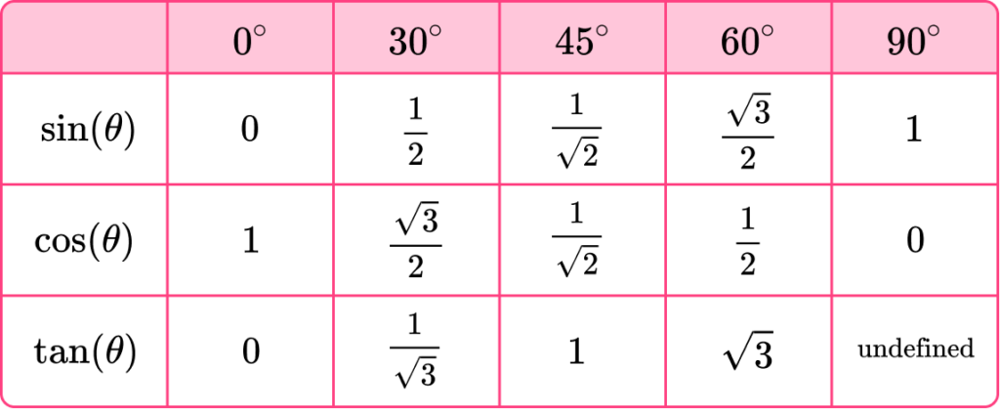
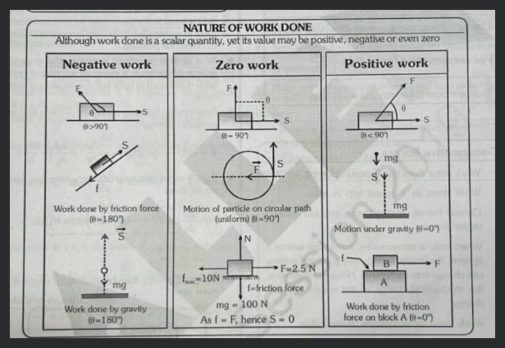
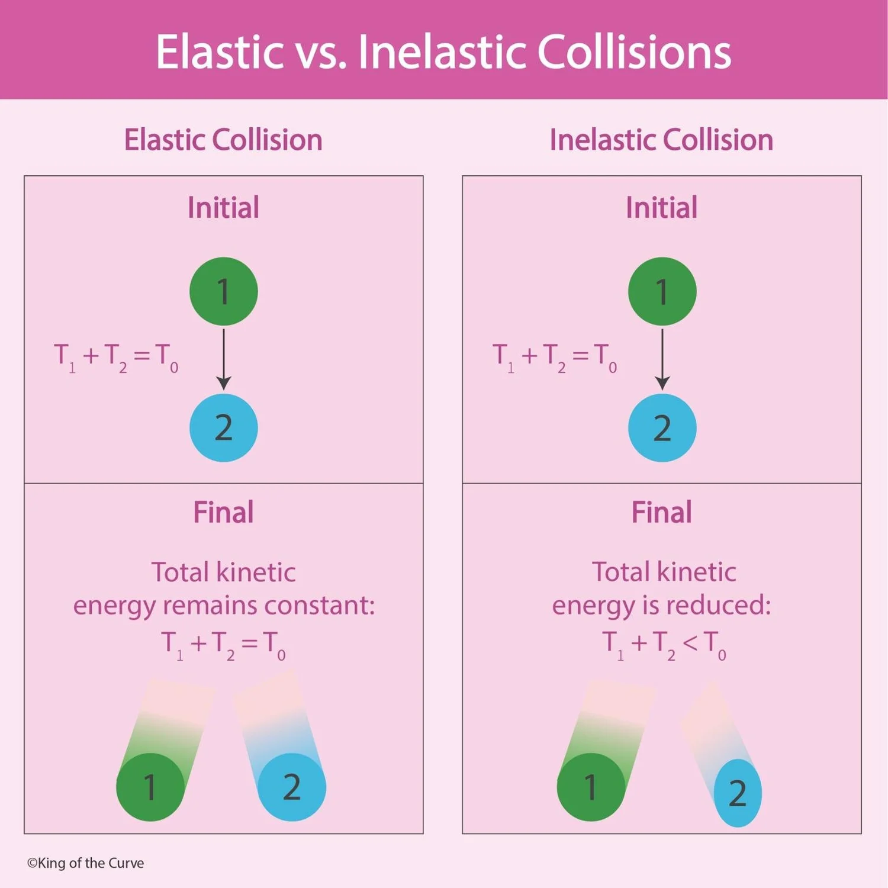
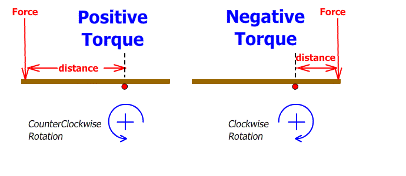
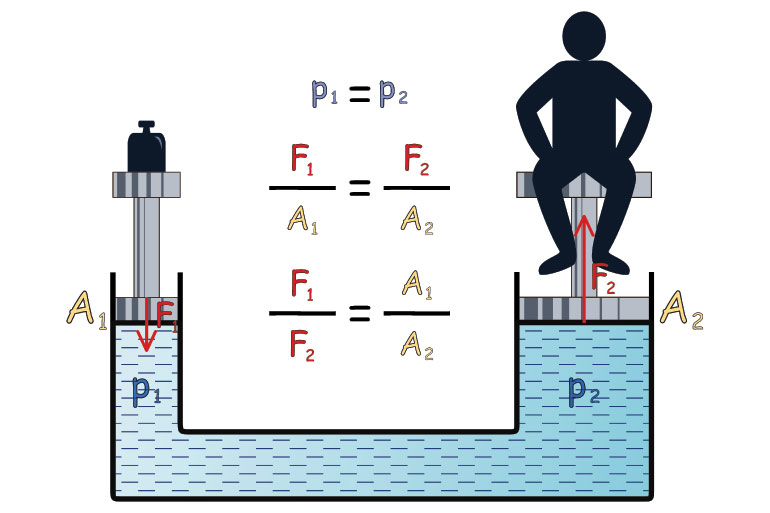
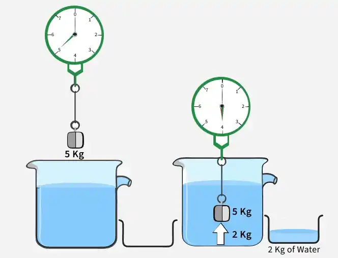

- Units, Measurements, and Errors
- Physical Quantities
- Definition:
- Quantities expressible in numbers, representing measurable attributes of natural phenomena governed by fundamental laws.
- Examples:
- Length, mass, time, force, speed, acceleration, velocity, momentum, electric current, temperature.
- Types Based on Units and Measurement:
- Fundamental Quantities:
- Independent of other quantities; include length, mass, time, electric current, temperature, luminous intensity, amount of substance.
- Seven base quantities in SI system:
- metre (length), kilogram (mass), second (time), ampere (electric current), kelvin (temperature), candela (luminous intensity), mole (amount of substance).
- Derived Quantities:
- Obtained from fundamental quantities; include work, force, pressure, area, volume, energy.
- Example:
- Force derived as mass × acceleration, with unit newton (kg m s⁻²).
- Supplementary Quantities:
- Neither fundamental nor derived; include plane angle (radian) and solid angle (steradian).
- Types Based on Magnitude and Direction:
- Scalar Quantities:
- Possess only magnitude; no direction.
- Examples:
- Distance, speed, energy, power, time, volume, density, pressure, work, charge, temperature, mass.
- Vector Quantities:
- Possess both magnitude and direction.
- Examples:
- Displacement, velocity, acceleration, force, weight, momentum, impulse, torque, electric field, magnetic field, angular velocity.
- Units
- Definition:
- Standard value used to measure a physical quantity; measurement involves comparing a quantity to its unit.
- Example:
- Force of 10 N means 10 times the standard unit of force (1 newton).
- Types of Units:
- Fundamental Units:
- Units of fundamental quantities; independent of each other.
-
| Quantity | Unit | Symbol | Definition |
|---|
| Length | Metre | m | Length of path traveled by light in vacuum during 1/299,792,458 of a second (1983). |
| Mass | Kilogram | kg | Mass of the international prototype kilogram (platinum-iridium cylinder) at Sevres, France (1889). |
| Time | Second | s | Duration of 9,192,631,770 periods of cesium-133 atom radiation (1967). |
| Electric Current | Ampere | A | Current producing 2×10⁻⁷ N/m force between two parallel conductors 1 m apart in vacuum (1948). |
| Temperature | Kelvin | K | 1/273.16 of the thermodynamic temperature of water’s triple point (1967). |
| Amount of Substance | Mole | mol | Amount containing as many entities as atoms in 0.012 kg of carbon-12 (1917). |
| Luminous Intensity | Candela | cd | Luminous intensity of a 540×10¹² Hz source with 1/683 W/sr radiant intensity (1979). |
- Derived Units:
- Units of derived quantities, expressed using fundamental units.
- Examples:
- Area:
- m² (length × breadth).
- Force:
- kg m s⁻² (mass × acceleration).
- Pressure:
- kg m⁻¹ s⁻² (force/area).
- Energy:
- kg m² s⁻² (force × distance).
- Supplementary Units:
- Units for plane angle (radian) and solid angle (steradian).
-
| Quantity | Unit | Symbol | Definition |
|---|
| Plane Angle | Radian | rad | Angle subtended by an arc equal to the radius of a circle. |
| Solid Angle | Steradian | sr | Angle subtending a surface area equal to a square with sides of the sphere’s radius. |
- Systems of Units:
- MKS System:
- Uses metre (length), kilogram (mass), second (time).
- CGS System:
- Uses centimetre (length), gram (mass), second (time); also called Gaussian system.
- FPS System:
- Uses foot (length), pound (mass), second (time); also called British system.
- SI System:
- International System of Units, adopted in 1960; extended MKS system with seven fundamental and two supplementary units.
- Conversions of Units
- Mass
| Unit Conversion |
Equivalent |
| 10 mg |
1 g = 15.43 grains = 10^-3 kg |
| 1000 g |
1 kg = 2.205 pounds |
| 1000 kg |
1 tonne |
- Length
| Unit Conversion |
Equivalent |
| 10 mm |
1 cm = 0.394 inch |
| 100 cm |
1 m = 39.4 inch = 1.094 yard |
| 1000 m |
1 km = 0.6214 mile |
| 1 foot |
0.3048 m |
- Area
| Unit Conversion |
Equivalent |
| 4046 m² |
1 acre |
| 100 hectare |
1 km² |
- Volume
| Unit Conversion |
Equivalent |
| 10 mL |
1 cL = 0.018 pint (0.021 US pint) |
| 100 cL |
1 litre = 1.76 pint |
| 10 litre |
1 daL = 2.2 gallon (2.63 US gallon) |
- Metric Prefixes for Powers of 10
| Prefix |
Symbol |
Power of 10 |
| Yotta |
Y |
10^24 |
| Zetta |
Z |
10^21 |
| Exa |
E |
10^18 |
| Peta |
P |
10^15 |
| Tera |
T |
10^12 |
| Giga |
G |
10^9 |
| Mega |
M |
10^6 |
| Kilo |
k |
10^3 |
| Hecto |
h |
10^2 |
| Deca |
da |
10^1 |
| Deci |
d |
10^-1 |
| Centi |
c |
10^-2 |
| Milli |
m |
10^-3 |
| Micro |
µ |
10^-6 |
| Nano |
n |
10^-9 |
| Pico |
p |
10^-12 |
| Femto |
f |
10^-15 |
| Atto |
a |
10^-18 |
| Zepto |
z |
10^-21 |
| Yocto |
y |
10^-24 |
- Dimensional Analysis
- Definition:
- Expresses physical quantities in terms of powers of base quantities (e.g., [M] for mass, [L] for length, [T] for time).
- Dimensional formula shows how base quantities represent a derived quantity (e.g., force: [M L T⁻²]).
- Dimensional equation equates a quantity to its dimensional formula (e.g., [F] = [M L T⁻²]).
- Examples of Dimensional Formulae:
-
| Physical Quantity | Formula | Dimensional Formula |
|---|
| Area | Length × Breadth | [L²] |
| Volume | Length × Breadth × Height | [L³] |
| Velocity | Displacement/Time | [L T⁻¹] |
| Acceleration | Velocity/Time | [L T⁻²] |
| Force | Mass × Acceleration | [M L T⁻²] |
| Work/Energy | Force × Displacement | [M L² T⁻²] |
| Pressure | Force/Area | [M L⁻¹ T⁻²] |
| Kinetic Energy | ½ Mass × (Speed)² | [M L² T⁻²] |
- Dimensionless Quantities:
- Have no dimensions; same value in all unit systems.
- Examples:
- Angle, solid angle, relative density, specific gravity, Poisson’s ratio.
- Uses of Dimensional Analysis:
- Check equation homogeneity.
- Derive relationships between physical quantities.
- Convert units between systems.
- Example:
- Verify equation homogeneity:
- For \( v = u + at \) (velocity equation):
- Left side:
- \( v \) (velocity) = [L T⁻¹].
- Right side:
- \( u \) (initial velocity) = [L T⁻¹], \( at \) (acceleration × time) = [L T⁻²][T] = [L T⁻¹].
- Both sides match, confirming homogeneity.
- Important Scientific Instruments and Their Use
-
| Instrument |
Use |
| Altimeter |
Measures altitudes; used in aircraft. |
| Ammeter |
Measures electric current strength (in amperes). |
| Audiometer |
Measures sound intensity. |
| Barometer |
Measures atmospheric pressure. |
| Binocular |
Views distant objects. |
| Burette |
Delivers precise liquid volumes up to its maximum capacity. |
| Calorimeter |
Measures heat quantity. |
| Cardiogram |
Traces heart movements, recorded on a cardiograph. |
| Cinematography |
Projects enlarged photographic images for cinema. |
| Dynamo |
Converts mechanical energy to electrical energy. |
| Dynamometer |
Measures electrical power. |
| Electrometer |
Measures electricity. |
| Electroscope |
Detects electric charge presence. |
| Endoscope |
Examines internal body parts. |
| Electroencephalogram (ECG) |
Evaluates brain’s electrical activity. |
| Fathometer |
Measures ocean depth. |
| Galvanometer |
Measures low-magnitude electric current. |
| Hydrometer |
Measures specific gravity of liquids. |
| Hygrometer |
Measures air humidity. |
| Hydrophone |
Measures sound underwater. |
| Lactometer |
Determines milk purity. |
| Manometer |
Measures gas pressure. |
| Mariner’s Compass |
Determines direction for sailors. |
| Microphone |
Converts sound waves to electrical vibrations, amplifies sound. |
| Microscope |
Magnifies small objects. |
| Odometer |
Measures distance covered by wheeled vehicles. |
| Phonograph |
Produces sound. |
| Photometer |
Compares luminous intensity of light sources. |
| Periscope |
Views objects above sea level (used in submarines). |
| Radar |
Detects direction/range of approaching planes using radio microwaves. |
| Pyrometer |
Measures high surface temperatures via remote sensing. |
| Pyrheliometer |
Measures direct beam solar irradiance. |
| Radiometer |
Measures radiant energy emission. |
| Screw Gauge |
Measures thickness of thin glass plates or diameter of thin wires/spheres. |
| Seismograph |
Measures earthquake shock intensity. |
| Salinometer |
Determines solution salinity. |
| Sonometer |
Measures tuning fork frequency. |
| Spectrometer |
Measures energy distribution of specific radiation types. |
| Speedometer |
Records vehicle speed. |
| Sphygmomanometer |
Measures blood pressure. |
| Spherometer |
Measures surface curvature. |
| Stereoscope |
Views two-dimensional pictures. |
| Stethoscope |
Analyzes heart/lung sounds for medical diagnosis. |
| Stroboscope |
Views rapidly moving objects. |
| Tachometer |
Measures speeds of airplanes/motor boats. |
| Telescope |
Views distant space objects. |
| Thermometer |
Measures temperature. |
| Thermostat |
Regulates temperature at a specific point. |
| Voltmeter |
Measures electric potential difference between two points. |
| Vernier Callipers |
Measures lengths accurately. |
- Errors in Measurement
- Definition:
- Difference between true value and measured value; cannot be fully eliminated but can be minimized.
- Key Concepts:
- Resolution:
- Smallest measurable value (least count) of an instrument.
- Accuracy:
- Closeness of measured value to true value.
- Precision:
- Consistency of repeated measurements.
- Types of Errors:
- Systematic Errors:
- Occur consistently in one direction (positive or negative); causes include:
- Instrumental errors (defective instruments).
- Imperfect experimental techniques.
- Personal errors (observer inexperience).
- Random Errors:
- Occur irregularly in sign and size; caused by external factors (e.g., temperature, pressure).
- Least Count Errors:
- Arise from instrument’s limited resolution; minimized by using high-resolution instruments.
- Mathematical Treatment of Errors:
- Absolute Error:
- Difference between true value and measured value.
- Example:
- If true length is 5.00 m and measured is 5.02 m, absolute error = \( |5.00 - 5.02| = 0.02 \, \text{m} \).
- Mean Absolute Error:
- Arithmetic mean of absolute errors across multiple measurements.
- Formula:
- \( \text{Mean absolute error} = \frac{\sum |\text{Absolute errors}|}{\text{Number of observations}} \).
- Example:
- For measurements 5.02 m, 4.98 m, 5.01 m (true value 5.00 m):
- Absolute errors:
- \( |5.00 - 5.02| = 0.02 \), \( |5.00 - 4.98| = 0.02 \), \( |5.00 - 5.01| = 0.01 \).
- Mean absolute error:
- \( \frac{0.02 + 0.02 + 0.01}{3} = 0.0167 \, \text{m} \).
- Relative Error:
- Ratio of mean absolute error to mean measured value, often expressed as a percentage.
- Formula:
- \( \text{Relative error} = \frac{\text{Mean absolute error}}{\text{Mean measured value}} \).
- Example:
- Mean measured value = \( \frac{5.02 + 4.98 + 5.01}{3} = 5.0033 \, \text{m} \).
- Relative error:
- \( \frac{0.0167}{5.0033} \approx 0.00334 \) or \( 0.334\% \).
- Significant Figures
- Definition:
- Digits known reliably plus the first uncertain digit.
- Example:
- 574.5 m has four significant figures (5, 7, 4, 5; last 5 is uncertain).
- Rules for Counting Significant Figures:
- All non-zero digits are significant.
- Zeroes between non-zero digits are significant (e.g., 1002 has 4 significant figures).
- Leading zeroes in numbers <1 are not significant (e.g., 0.003 has 1 significant figure).
- Trailing zeroes without a decimal point are not significant (e.g., 1200 has 2 significant figures).
- Trailing zeroes with a decimal point are significant (e.g., 1200.0 has 5 significant figures).
- Arithmetic Operations:
- Addition/Subtraction:
- Result retains as many decimal places as the number with the fewest decimal places.
- Example:
- \( 12.3 + 4.567 = 16.867 \approx 16.9 \) (1 decimal place, as in 12.3).
- Multiplication/Division:
- Result retains as many significant figures as the number with the fewest significant figures.
- Example:
- \( 2.3 \times 4.567 = 10.5041 \approx 11 \) (2 significant figures, as in 2.3).
- Motion
- Definition:
- Motion occurs when an object's position changes with respect to its surroundings over time (e.g., moving cars, running trains, flying birds).
- Rest occurs when an object's position remains unchanged relative to its surroundings (e.g., furniture, houses, trees).
- Relativity of Motion:
- Rest and motion are relative; an object can be at rest relative to one reference and in motion relative to another.
- Example:
- Two cars moving at the same velocity are at rest relative to each other but in motion relative to roadside trees.
- Types of Motion:
- Rectilinear and Translatory Motion:
- Rectilinear motion:
- Particle moves along a straight line (e.g., a sliding body on an inclined plane).
- Translatory motion:
- Body moves along a straight line, maintaining its shape and orientation.
- Circular and Rotatory Motion:
- Circular motion:
- Particle moves along a circular path (e.g., a string whirled in a loop).
- Rotatory motion:
- Body rotates about an axis passing through it (e.g., a spinning fan).
- Oscillatory and Vibratory Motion:
- Oscillatory motion:
- Body moves to and fro about a fixed point with a defined amplitude (e.g., simple pendulum).
- Vibratory motion:
- Oscillatory motion with very small amplitude (e.g., tuning fork vibrations).
- Dimensional Classification of Motion:
- One-Dimensional Motion:
- Position changes in one direction along a straight line.
- Examples:
- Car moving on a straight road, object falling freely under gravity.
- Two-Dimensional Motion:
- Position changes in two directions, typically on a plane.
- Examples:
- Planet orbiting the sun, projectile motion.
- Three-Dimensional Motion:
- Position changes in three directions, in space.
- Examples:
- Bird flying in the sky, kite moving in wind.
- Basic Terms Related to Motion:
- Reference Point:
- Fixed point or object relative to which motion is observed; also called the origin.
- Position:
- Location of an object in space relative to the reference point.
- Distance:
- Actual length of the path traveled, a scalar quantity, SI unit: metre.
- Measured by devices like an odometer.
- Always non-negative.
- Path Length:
- Length of the curve between initial and final positions, SI unit: metre.
- Displacement:
- Shortest straight-line distance from initial to final position, with direction; a vector quantity, SI unit: metre.
- Can be positive, negative, or zero; always \( |\text{Displacement}| \leq \text{Distance} \).
- Speed:
- Time rate of change of position in any direction, a scalar quantity.
- Formula:
- \( \text{Speed} (v) = \frac{\text{Distance traveled} (s)}{\text{Time taken} (t)} \).
- SI unit:
- m/s, dimensional formula: [M⁰ L T⁻¹].
- Always positive or zero.
- Types of Speed:
- Uniform Speed:
- Equal distances covered in equal time intervals (e.g., motorcycle on a straight path).
- Non-Uniform Speed:
- Unequal distances covered in equal time intervals (e.g., motorcycle in a crowded market).
- Average Speed:
- Total distance divided by total time: \( \text{Average speed} = \frac{s_1 + s_2 + s_3 + \dots}{t_1 + t_2 + t_3 + \dots} \).
- Example:
- Car travels half distance at 40 km/h, half at 60 km/h:
- Total distance \( x \), time for first half \( \frac{x/2}{40} = \frac{x}{80} \) h, second half \( \frac{x/2}{60} = \frac{x}{120} \) h.
- Average speed:
- \( \frac{x}{\frac{x}{80} + \frac{x}{120}} = \frac{x}{\frac{3x + 2x}{240}} = \frac{240}{5} = 48 \, \text{km/h} \).
- Instantaneous Speed:
- Speed at a specific instant: \( v = \lim_{\Delta t \to 0} \frac{\Delta s}{\Delta t} = \frac{ds}{dt} \).
- Velocity:
- Time rate of change of displacement, a vector quantity.
- Formula:
- \( \text{Velocity} = \frac{\text{Displacement}}{\text{Time}} \).
- SI unit:
- m/s, dimensional formula: [M⁰ L T⁻¹].
- Can be positive, negative, or zero; \( |\text{Velocity}| \leq \text{Speed} \).
- Types of Velocity:
- Uniform Velocity:
- Equal displacements in equal time intervals.
- Non-Uniform Velocity:
- Unequal displacements in equal time intervals.
- Average Velocity:
- Total displacement divided by total time:
- \( \text{Average velocity} = \frac{\text{Total displacement}}{\text{Total time}} \).
- For uniform acceleration:
- \( \text{Average velocity} = \frac{u + v}{2} \), where \( u \) is initial velocity, \( v \) is final velocity.
- Instantaneous Velocity:
- Velocity at a specific instant, equal to the derivative of displacement.
- Relative Velocity:
- Velocity of one object relative to another.
- Formula:
- \( v_{ab} = v_a - v_b \) (same direction), \( v_{ab} = v_a + v_b \) (opposite directions).
- Acceleration:
- Time rate of change of velocity, a vector quantity.
- Formula:
- \( a = \frac{\Delta v}{\Delta t} = \frac{v - u}{t} \).
- SI unit:
- m/s², dimensional formula: [M⁰ L T⁻²].
- Positive when velocity increases, negative (deceleration) when velocity decreases.
- Types of Acceleration:
- Uniform Acceleration:
- Velocity changes equally in equal time intervals (e.g., body falling freely).
- Non-Uniform Acceleration:
- Velocity changes unequally in equal time intervals (e.g., spring-block system).
- Average Acceleration:
- Total change in velocity divided by total time: \( \text{Average acceleration} = \frac{\Delta v}{\Delta t} \).
- Instantaneous Acceleration:
- Acceleration at a specific instant, equal to the derivative of velocity.
- Uniform and Non-Uniform Motion:
- Uniform Motion:
- Equal distances in equal time intervals, no force required (e.g., car on a straight road).
- Displacement equals distance in straight-line uniform motion.
- Non-Uniform Motion:
- Unequal distances in equal time intervals (e.g., car in a crowded street).
- Graphical Representation of Motion:
- Displacement-Time Graphs:
- At Rest:
- Straight line parallel to time axis, slope = 0 (no change in position).
-

- Uniform Motion (Zero Acceleration):
- Straight line with positive slope, indicating constant velocity.
-

- Uniform Positive Acceleration:
- Upward curve, increasing slope, as distance covered increases over time.
-

- Negative Acceleration:
- Downward curve, decreasing slope, as distance covered decreases over time.
-

- Slope Interpretation:
- Slope of displacement-time graph gives average velocity.
- Velocity-Time Graphs:
- Constant Velocity (Zero Acceleration):
- Straight line parallel to time axis, slope = 0.
-

- Constant Positive Acceleration (Non-Zero Initial Velocity):
- Straight line with positive slope.
-

- Constant Positive Acceleration (Zero Initial Velocity):
- Straight line through origin, positive slope.
-

- Constant Negative Acceleration:
- Straight line with negative slope, velocity decreases uniformly.
-

- Increasing Acceleration:
- Upward curve, non-uniform velocity increase.
-

- Decreasing Acceleration:
- Downward curve, non-uniform velocity decrease.
-

- Slope and Area:
- Slope gives average acceleration.
- Area under speed-time graph gives distance traveled.
- Equations of Motion:
- For uniform acceleration in a straight line:
- First Equation:
- \( v = u + at \).
- Second Equation:
- \( s = ut + \frac{1}{2} a t^2 \).
- Third Equation:
- \( v^2 = u^2 + 2as \).
- Distance in nth Second:
- Formula:
- \( s_n = u + \frac{1}{2} a (2n - 1) \).
- Example 1:
- Car starts from rest, accelerates at 4 m/s² for 6 s:
- Given:
- \( u = 0 \), \( a = 4 \, \text{m/s}^2 \), \( t = 6 \, \text{s} \).
- Velocity:
- \( v = u + at = 0 + 4 \times 6 = 24 \, \text{m/s} \).
- Distance:
- \( s = ut + \frac{1}{2} a t^2 = 0 + \frac{1}{2} \times 4 \times 6^2 = 72 \, \text{m} \).
- Example 2:
- Train at 90 km/h (25 m/s) decelerates at -0.5 m/s² until rest:
- Given:
- \( u = 25 \, \text{m/s} \), \( v = 0 \), \( a = -0.5 \, \text{m/s}^2 \).
- Distance:
- \( v^2 = u^2 + 2as \), so \( 0 = 25^2 + 2(-0.5)s \), \( s = 625 \, \text{m} \).
- Freely Falling Objects:
- Definition:
- Objects falling under gravity alone, with acceleration \( g = 9.8 \, \text{m/s}^2 \).
- Air resistance affects fall (e.g., feather vs. coin); in vacuum, all objects fall at the same rate.
- Equations of Free Fall:
- Replace \( a \) with \( g \):
- \( v = u + gt \).
- \( h = ut + \frac{1}{2} g t^2 \).
- \( v^2 = u^2 + 2gh \).
- Cases:
- Downward Fall:
- \( g \) is positive, velocity increases.
- Upward Motion:
- \( g \) is negative, velocity decreases.
- Dropped Object:
- Initial velocity \( u = 0 \).
- Upward Throw:
- Final velocity \( v = 0 \) at peak.
- Time Symmetry:
- Time to rise equals time to fall for the same height.
- Motion in a Plane:
- Definition:
- Motion described using two perpendicular axes (e.g., projectile motion, circular motion).
- Projectile Motion:
-

- Description:
- Object thrown obliquely follows a parabolic trajectory, combining horizontal (constant velocity) and vertical (under gravity) motions.
- Examples:
- Bullet fired from a tank, ball hit by a bat, bomb dropped from an airplane.
- Key Formulae:
-

- Horizontal Velocity Component:
- \( u_x = u \cos \theta \).
- Vertical Velocity Component:
- \( u_y = u \sin \theta \).
- Trajectory Equation:
- \( y = x \tan \theta - \frac{g x^2}{2 u^2 \cos^2 \theta} \).
- Time of Ascent:
- \( t_a = \frac{u \sin \theta}{g} \).
- Derivation:
- Use equation of motion:
- \( v = u + at \)
- At maximum height:
- Final vertical velocity = \( v_y = 0 \)
- \( u_y = u \sin\theta \)
- Apply in vertical direction:
- \( 0 = u\sin\theta - gt_a \)
- Rearranging:
- \( gt_a = u\sin\theta \)
- Therefore:
- \( t_a = \frac{u\sin\theta}{g} \)
- Time of Descent:
- \( t_d = \frac{u \sin \theta}{g} \).
- Time of Flight:
- \( T = t_a + t_d = \frac{2 u \sin \theta}{g} \).
- Maximum Height:
- \( H = \frac{u^2 \sin^2 \theta}{2 g} \).
- Derivation:
- Use equation of motion:
- \( v^2 = u^2 + 2as \)
- At maximum height:
- Final vertical velocity = \( v_y = 0 \)
- \( u_y = u \sin\theta \)
- Apply in vertical direction:
- \( 0 = (u\sin\theta)^2 - 2gH \)
- Rearranging:
- \( 2gH = u^2 \sin^2\theta \)
- Therefore:
- \( H = \frac{u^2 \sin^2\theta}{2g} \)
- Range:
- \( R = \frac{u^2 \sin 2\theta}{g} \).
- Derivation:
- Horizontal component of velocity:
- \( u_x = u \cos\theta \)
- Vertical component of velocity:
- \( u_y = u \sin\theta \)
- Time of flight:
- \( T = \frac{2u\sin\theta}{g} \)
- Range:
- \( R = \text{horizontal velocity} \times \text{time} \)
- \( R = u\cos\theta \cdot T \)
- Substitute \( T \):
- \( R = u\cos\theta \cdot \frac{2u\sin\theta}{g} \)
- Simplify:
- \( R = \frac{2u^2 \sin\theta \cos\theta}{g} \)
- Use identity:
- \( \sin 2\theta = 2\sin\theta \cos\theta \)
- Therefore:
- \( R = \frac{u^2 \sin 2\theta}{g} \)
- Maximum Range:
- At \( \theta = 45^\circ \), \( R_{\text{max}} = \frac{u^2}{g} \).
- Height at Maximum Range:
- \( H = \frac{R_{\text{max}}}{4} \)
- Properties:
- Maximum range at \( \theta = 45^\circ \).
- Equal ranges for \( \theta \) and \( 90^\circ - \theta \).
- Horizontal velocity constant, speed minimum at peak (\( u \cos \theta \)).
- Acceleration constant (\( g \)).
- Circular Motion:
- Description:
- Particle moves along a circular path; uniform circular motion has constant speed but changing velocity due to direction change.
- Key Terms:
- Time Period (T):
- Time for one revolution, unit: second.
- Frequency (n):
- Revolutions per unit time, unit: s⁻¹ (Hertz).
- Relation:
- \( T = \frac{1}{n} \).
- Angular Displacement (\( \theta \)):
-

- Angle swept by radius, unit: radian.
- Formula:
- \( \theta = \frac{\text{Arc}}{\text{Radius}} \).
- Derivation:
- Consider a circle of radius \( r \)
- Total circumference = \( 2\pi r \)
- Total angle at center = \( 2\pi \) radians
- A radian is the angle subtended at the center of a circle by an arc
- Explanation:
- A full circle is defined as \( 360^\circ \)
- Conversion between degrees and radians:
- \( 180^\circ = \pi \) radians
- So:
- \( 360^\circ = 2 \times 180^\circ \)
- \( = 2\pi \) radians
- Therefore:
- Total angle at the center of a circle = \( 2\pi \) radians
- Let:
- Arc length = \( s \)
- Corresponding angle = \( \theta \)
- By proportionality:
- \( \frac{\theta}{2\pi} = \frac{s}{2\pi r} \)
- Multiply both sides by \( 2\pi \):
- \( \theta = \frac{s}{r} \)
- Angular Velocity (\( \omega \)):
- Rate of change of angular displacement, unit: rad/s.
- Formula:
- \( \omega = \frac{\theta}{t} = \frac{2\pi}{T} = 2\pi n \).
- Derivation:
- Let:
- Angular displacement = \( \theta \)
- Time taken = \( t \)
- By definition of angular velocity:
- \( \omega = \frac{\theta}{t} \)
- For one complete revolution:
- \( \theta = 2\pi \)
- Time = \( T \)
- So:
- \( \omega = \frac{2\pi}{T} \)
- If frequency = \( n \):
- \( n = \frac{1}{T} \)
- Substitute:
- \( \omega = 2\pi n \)
- Relation to linear velocity:
- \( v = \omega r \).
- Derivation:
- Consider a particle moving in a circle of radius \( r \)
- Linear velocity:
- \( v = \frac{s}{t} \)
- Arc length traveled:
- \( s = r\theta \)
- Substitute \( s = r\theta \):
- \( v = \frac{r\theta}{t} \)
- Rearranging:
- \( v = r \cdot \frac{\theta}{t} \)
- Since:
- \( \omega = \frac{\theta}{t} \)
- Therefore:
- \( v = \omega r \)
- Angular Acceleration (\( \alpha \)):
- Formula:
- Rate of change of angular velocity, unit: rad/s².
- \( \alpha = \frac{d\omega}{dt} = \frac{d^2 \theta}{dt^2} \)
- Relation to linear acceleration:
- \( a = \alpha r \).
- Derivation:
- Consider a particle moving in a circle of radius \( r \)
- Arc length:
- \( s = r\theta \)
- Linear velocity:
- \( v = \frac{ds}{dt} \)
- Substitute \( s = r\theta \):
- \( v = \frac{d}{dt}(r\theta) = r \frac{d\theta}{dt} \)
- Since:
- \( \omega = \frac{d\theta}{dt} \)
- So:
- \( v = r\omega \)
- Linear acceleration:
- \( a = \frac{dv}{dt} \)
- Substitute \( v = r\omega \):
- \( a = \frac{d}{dt}(r\omega) = r \frac{d\omega}{dt} \)
- Since:
- \( \alpha = \frac{d\omega}{dt} \)
- Therefore:
- \( a = r\alpha \)
- Centripetal Acceleration:
- Directed toward the center, required to maintain circular path.
- Formula:
- \( a_c = \frac{v^2}{r} = \omega^2 r \).
- Applications:
- Example:
- In sports like javelin throw, optimal angle (\( 45^\circ \)) maximizes range.
- Example:
- Uneven accelerations on curved roads cause discomfort (e.g., motion sickness in buses).
- Force and Laws of Motion
- Force
- Definition:
- Any action causing a push or pull on a body, altering its state of rest or motion.
- Vector quantity; SI unit:
- newton (N), where \( 1 \, \text{N} = 1 \, \text{kg m s}^{-2} \).
- CGS unit:
- dyne, where \( 1 \, \text{N} = 10^5 \, \text{dyne} \).
- Examples:
- Kicking a football, lifting a box, stretching a rubber band.
- Fundamental Forces in Nature
- Types:
-
| S.No. | Name | Relative Strength | Range | Operates Among |
|---|
| 1 | Gravitational Force | 1 | Infinite | All objects in universe |
| 2 | Weak Nuclear Force | 10^25 | Very short (~10^-16 m) | Elementary particles (e.g., electron, neutrino) |
| 3 | Electromagnetic Force | 10^36 | Not very large | Charged particles |
| 4 | Strong Nuclear Force | 10^38 | Very short (~10^-15 m) | Nucleons, heavier elementary particles |
- Gravitational Force:
- Attraction between all objects; weakest force, significant for celestial bodies.
- Weak Nuclear Force:
- Acts in β-decay (radioactivity); 10^25 times stronger than gravitational force.
- Electromagnetic Force:
- Acts between charged particles; attractive (unlike charges) or repulsive (like charges); governed by Coulomb’s law.
- Dominates atomic and molecular scales; 10^36 times stronger than gravitational force.
- Strong Nuclear Force:
- Binds protons and neutrons in nucleus; strongest force, acts at very short range (~10^-15 m); 10^38 times stronger than gravitational force.
- Types of Force
- Balanced Forces:
- Net effect is zero; only change body’s shape (e.g., equal pulls on a block prevent motion).
- Unbalanced Forces:
- Non-zero net effect; cause change in speed or direction (e.g., accelerating an object).
- Contact Forces:
- Act through physical contact (e.g., pushing a cart).
- Field Forces:
- Act without contact (e.g., gravitational force, electric force).
- Inertia
- Definition:
- Property of an object to resist changes in its state of rest or motion along a straight line.
- Types:
- Inertia of Rest:
- Resists change from rest (e.g., book on a table stays still).
- Inertia of Motion:
- Resists change in motion (e.g., moving car resists stopping).
- Inertia of Direction:
- Resists change in direction (e.g., object in motion resists turning).
- Newton’s Laws of Motion
- Overview:
- Proposed by Sir Isaac Newton in 1687 (Principia); govern the behavior of objects under force.
- First Law (Law of Inertia):
- A body remains at rest or in uniform motion along a straight line unless acted upon by an external force.
- Phenomena:
- Passenger falls backward when a bus starts suddenly due to inertia of rest.
- Passenger falls forward when a bus stops suddenly due to inertia of motion.
- Fruits/leaves fall when a tree is shaken due to inertia of rest.
- Seat belts prevent passengers from being thrown forward during sudden stops (inertia of motion).
- Dishes remain on a table when cloth is pulled quickly due to inertia of rest.
- Second Law:
- Rate of change of momentum is proportional to the applied unbalanced force and occurs in the direction of the force.
- Formula:
- \( F = \frac{dp}{dt} \), where \( p = mv \) (momentum), so \( F = ma \).
- Example:
- If \( m = 1 \, \text{kg} \), \( a = 1 \, \text{m/s}^2 \), then \( F = 1 \, \text{N} \).
- Phenomena:
- Table tennis ball causes less pain than a cricket ball due to lower momentum (lower speed, same mass).
- High jumpers land on cushioned beds to increase stopping time, reducing force (\( F = \frac{\Delta p}{\Delta t} \)).
- Cricket players move hands backward when catching to increase stopping time, reducing force.
- Third Law (Law of Action and Reaction):
- For every action, there is an equal and opposite reaction acting on different bodies.
- Phenomena:
- Walking:
- Foot pushes ground backward (action), ground pushes person forward (reaction).
- Swimming:
- Swimmer pushes water backward (action), water pushes swimmer forward (reaction).
- Walking on sand is difficult due to weak reaction force from displaced sand.
- Momentum
- Definition:
- Product of mass and velocity; vector quantity, SI unit: kg m/s.
- Formula:
- \( p = mv \).
- Phenomena:
- Truck requires more force than a car to achieve same speed due to higher mass and momentum.
- Bullet pierces target due to high momentum from high velocity, unlike a thrown stone.
- Law of Conservation of Momentum:
- Total momentum of a system remains constant if no external force acts.
- Formula:
- For two bodies, \( m_1 u_1 + m_2 u_2 = m_1 v_1 + m_2 v_2 \).
- Phenomena:
- Man jumping from a boat pushes it backward (equal and opposite momentum).
- Rocket propulsion:
- Ejected gas imparts equal and opposite momentum to the rocket.
- Impulse
- Definition:
- Product of force and time for a large force acting briefly; equals change in momentum.
- Formula:
- \( \text{Impulse} = F \cdot \Delta t = \Delta p \).
- SI unit:
- N s or kg m/s.
- Phenomena:
- Chinaware wrapped in paper/straw increases impact time, reducing force and breakage.
- Train bogies with buffers increase impact time, reducing force during shunting.
- Athletes stop gradually after a race to increase stopping time, reducing force.
- Reference Frame
- Definition:
- System where positions and distances are measured relative to a fixed point.
- Types:
- Inertial Frame:
- Accelerations due to real forces; Newton’s laws apply (e.g., stationary ground).
- Non-Inertial Frame:
- Accelerations due to pseudo forces; Newton’s laws do not apply (e.g., accelerating car).
- Apparent Weight in a Lift:
-
| Case | Lift Condition | Apparent Weight (R) | Relation to Actual Weight (mg) |
|---|
| I | At rest | R = mg | Equal |
| II | Uniform motion (up/down) | R = mg | Equal |
| III | Accelerating upwards | R = mg + ma | Greater |
| IV | Accelerating downwards | R = mg - ma | Less |
| V | Freely falling | R = 0 | Zero (weightlessness) |
- Friction
- Definition:
- Force opposing relative motion between two surfaces in contact; parallel to the surface.
- Types:
- Static Friction:
- Acts before motion starts; self-adjusting.
- Formula:
- \( f_s = \mu_s R \), where \( \mu_s \) is coefficient of static friction, \( R \) is normal reaction.
- Relation:
- \( \mu_s = \tan \theta \), where \( \theta \) is angle of friction.
- Limiting Friction:
- Maximum static friction before sliding begins.
- Formula:
- \( f_l = \mu_l R \), where \( \mu_l \) is coefficient of limiting friction.
- Depends on surface nature, not area.
- Kinetic Friction:
- Acts during relative motion.
- Formula:
- \( f_k = \mu_k R \), where \( \mu_k \) is coefficient of kinetic friction.
- Types:
- Rolling Friction:
- When one body rolls over another; minimal compared to other frictions.
- Sliding Friction:
- When one body slides over another; greater than rolling friction.
- Friction as a Necessary Evil:
- Necessity:
- Enables walking, gripping objects, vehicle braking, securing nuts/bolts, writing.
- Evil:
- Causes wear and tear, heat production, energy loss in machinery.
- Methods to Reduce Friction:
- Polishing surfaces to reduce roughness.
- Using lubricants (e.g., oil, grease) to fill surface irregularities.
- Ball bearings:
- Reduce friction by rolling, minimizing energy loss.
- Example:
- Ball bearings in machinery reduce wear and energy loss.
-
| Component | Function |
|---|
| Fixed Part | Stationary component of machine |
| Rotating Part | Moving component |
| Ball Bearings | Small steel balls reducing friction between parts |
- Phenomena:
- Earthquakes occur when forces exceed frictional resistance between rocks, releasing energy.
- Centripetal and Centrifugal Forces
- Centripetal Force:
- Real force directed toward the center of a circular path, enabling circular motion.
- Formula:
- \( F = \frac{m v^2}{r} = m \omega^2 r \), where \( v \) is linear velocity, \( r \) is radius, \( \omega \) is angular velocity.
- Phenomena:
- Earth orbits Sun due to gravitational centripetal force.
- Electrons orbit nucleus due to electrostatic centripetal force.
- Centrifugal Force:
- Pseudo force due to inertia, acting outward in a circular path; reaction to centripetal force.
- Applications:
- Banking of Roads:
- Outer edge raised to provide centripetal force via normal reaction, aiding vehicles on curves.
- Centrifuge:
- Separates particles by density using centrifugal effect.
- Cream Separator:
- Uses centrifugal force to separate lighter cream from milk.
- Washing Machine Drier:
- High-speed rotation expels water through perforated walls due to centrifugal force.
- Work, Power, and Energy
- Work
- Definition:
- Work is done when a force causes a displacement in a body.
- Formula:
- \( W = \vec{F} \cdot \vec{s} = F s \cos \theta \), where \( F \) is force, \( s \) is displacement, and \( \theta \) is the angle between force and displacement.
- Example:
- Pulling a trolley over a distance.
- Characteristics:
- Scalar quantity; SI unit:
- joule (J) or newton-metre (N·m); CGS unit: erg (\( 1 \, \text{J} = 10^7 \, \text{erg} \)).
- \( 1 \, \text{J} = 1 \, \text{N} \cdot 1 \, \text{m} \).
- Work Done by Force at an Angle:
-

- Formula:
- \( W = F s \cos \theta \).
- Maximum work at \( \theta = 0^\circ \) (force and displacement in same direction).
- Zero work at \( \theta = 90^\circ \) (force perpendicular to displacement).
- Negative work at \( \theta = 180^\circ \) (force opposite to displacement).
- Types of Work:
-

- Positive Work:
- Force and displacement in the same direction (e.g., pulling an object toward oneself).
- Negative Work:
- Force and displacement in opposite directions (e.g., frictional force opposing sliding motion).
- Zero Work:
- Force perpendicular to displacement (e.g., coolie carrying load horizontally, circular motion with zero net displacement).
- Conservative and Non-Conservative Forces
- Conservative Forces:
- Work done depends only on initial and final positions, not the path.
- Examples:
- Gravitational force, electrostatic force, elastic force, magnetic force.
- Non-Conservative Forces:
- Work done depends on the path taken.
- Examples:
- Frictional force, viscous force, air drag.
- Power
- Definition:
- Rate of doing work: \( P = \frac{W}{t} \).
- Scalar quantity; SI unit: watt (W) or J/s.
- Other Units:
-
| Unit | Equivalence |
|---|
| Kilowatt (kW) | 10^3 W |
| Megawatt (MW) | 10^6 W |
| Horsepower (HP) | 746 W |
| Kilowatt-hour (kWh) | 3.6 \times 10^6 J |
- Average Power Consumption:
-
| Activity | Power (W) |
|---|
| Heartbeat | 1.2 |
| Sleeping | 75 |
| Slow Walking | 200 |
| Bicycling | 500 |
- Energy
- Definition:
- Capacity to do work; scalar quantity, SI unit: joule (J), CGS unit: erg.
- Larger unit:
- kilojoule (kJ) = 10^3 J.
- Practical Units:
-
| Unit | Symbol | Equivalence (J) |
|---|
| Erg | erg | 10^-7 |
| Calorie | cal | 4.2 |
| Kilowatt-hour | kWh | 3.6 \times 10^6 |
| Electron volt | eV | 1.6 \times 10^-19 |
- Forms of Energy:
- Heat Energy:
- Due to temperature.
- Internal Energy:
- Due to molecular configuration and random motion.
- Electrical Energy:
- Required to maintain current flow in appliances.
- Chemical Energy:
- Absorbed/released during chemical reactions.
- Nuclear Energy:
- Released during nuclear reactions (fission/fusion).
- Kinetic Energy:
- Energy due to motion:
- \( KE = \frac{1}{2} m v^2 = \frac{p^2}{2m} \), where \( m \) is mass, \( v \) is velocity, \( p \) is momentum.
- Examples:
- Moving cricket ball displacing a wicket, hammer driving a nail.
- Potential Energy:
- Energy due to position or shape.
- Gravitational Potential Energy:
- \( U = mgh \), where \( g \) is acceleration due to gravity, \( h \) is height.
- Examples:
- Water in a dam, stone on a roof, wound spring in a watch.
- Mechanical Energy:
- Sum of kinetic and potential energy.
- Work-Energy Theorem
- Work done by all forces equals the change in kinetic energy: \( W = \Delta KE \).
- Example:
- Striking stones produces heat (spark) as mechanical work converts to heat energy.
- Law of Conservation of Energy
- Energy cannot be created or destroyed, only transformed.
- Example:
- Falling object converts potential energy (\( mgh \)) to kinetic energy (\( \frac{1}{2} m v^2 \)); total energy remains constant: \( mgh + \frac{1}{2} m v^2 = \text{constant} \).
- Energy Transformation
- Conversion of energy from one form to another; dissipation is conversion to less useful forms.
- Examples:
- Photosynthesis: Solar energy to chemical energy in plants.
- Throwing a ball: Muscular energy to kinetic energy.
- Stretched bow: Potential energy to kinetic energy of an arrow.
- Common Transformations:
-
| Instrument | Transformation |
|---|
| Electric Motor | Electrical to mechanical |
| Electric Generator | Mechanical to electrical |
| Steam Engine | Heat to kinetic |
| Electric Bulb | Electrical to light |
| Dry Cell | Chemical to electrical |
| Solar Cell | Light to electrical |
| Microphone | Sound to electrical |
| Loudspeaker | Electrical to sound |
- Einstein’s Mass-Energy Equivalence
- Mass and energy are interconvertible: \( E = m c^2 \), where \( c = 3 \times 10^8 \, \text{m/s} \).
- Collision
- Definition:
- Occurs when bodies physically strike or influence each other’s paths.
- Types:
-

- Elastic Collision:
- Momentum and kinetic energy conserved; common in atomic/nuclear collisions.
- Inelastic Collision:
- Momentum conserved, kinetic energy not conserved; common in macroscopic collisions.
- Completely inelastic:
- Bodies stick together post-collision.
- What changes in inelastic collision
- Objects deform, heat up, or stick together
- Some mechanical energy is converted into:
- Internal energy (heat)
- Sound
- Deformation (potential energy at microscopic level)
- Sources of Energy
- Definition:
- Systems providing useful energy steadily over time.
- Classification:
- Renewable Sources:
- Inexhaustible, continuously produced.
- Examples:
- Solar, wind, hydro, biofuels, tidal, wave, ocean thermal.
- Advantages:
- Long-lasting, freely available, non-polluting.
- Non-Renewable Sources:
- Finite, cannot be quickly replenished.
- Examples:
- Fossil fuels (coal, petroleum, natural gas), fissionable materials.
- Disadvantages:
- Depleting, difficult to find new deposits, cause pollution.
- Fuels:
- Sources for household/commercial use (e.g., coal, LPG, biogas, CNG).
- Ideal Fuel Features:
- High calorific value, proper ignition temperature, minimal harmful emissions, cheap, easy to handle, burns smoothly, minimal residue.
- Calorific Value:
- Heat produced per unit mass/volume.
- Ignition Temperature:
- Temperature at which fuel starts producing energy.
- Conventional Sources of Energy
- Fossil Fuels:
- Formed from prehistoric remains under heat and pressure.
- Disadvantages:
- Non-renewable, cause air pollution, release greenhouse gases (e.g., CO₂), contribute to acid rain.
- Thermal Power Plants:
- Burn fossil fuels to produce steam, driving turbines for electricity.
- Often located near coal/oil fields for efficient fuel transport.
- Hydro Power Plants:
-

- Convert potential energy of stored water into electricity via turbines.
- Principle:
- Water stored in reservoirs (dams) gains potential energy, flows to turbines, rotates generators.
- Advantages:
- Non-polluting, renewable, flood control, irrigation support.
- Disadvantages:
- Ecological damage, habitat submersion, soil fertility reduction, limited suitable locations, methane production from submerged vegetation, rehabilitation issues.
- Examples:
- Tehri Dam (Ganga), Sardar Sarovar Dam (Narmada).
- Improvements in Conventional Energy Technologies
- Biomass:
- Waste from living/dead organisms (e.g., wood, cow dung, bagasse).
- Used for fuel, electricity generation (bioenergy).
- Biogas:
- Mixture of methane, CO₂, H₂S, H₂ from anaerobic decomposition of organic waste (e.g., cow dung).
- Biogas Plant:
-

- Components:
- Mixing tank, inlet chamber, digester tank (anaerobic decomposition), gas tank, outlet chamber (slurry as manure).
- Types:
- Floating gas holder, fixed dome.
- Advantages:
- Smokeless, high calorific value, clean fuel, nutrient-rich slurry, efficient waste disposal.
- Uses:
- Cooking, running engines, generating electricity.
- Non-Conventional Sources of Energy
- Wind Energy:
- Kinetic energy from moving air.
- Uses:
- Electricity generation, propelling sailboats, water pumping, grinding grain.
- Windmill:
- Blades rotate under wind force, driving machines (e.g., water pumps, generators).
- Wind Generator:
- Wind turbine rotates to produce electricity.
- Wind Energy Farm:
- Multiple windmills over a large area (e.g., Muppandal, Tamil Nadu: 380 MW).
- Major farms:
- Jaisalmer (Rajasthan), Brahmanvel, Dhalgaon, Vankusawade (Maharashtra).
- Advantages:
- Environment-friendly, no recurring costs, non-polluting.
- Limitations:
- Requires consistent wind (min. 15 km/h), large land area, high setup costs, maintenance challenges, disrupts rainfall patterns.
- Solar Energy:
- Energy from the sun (heat and light).
- Traditional Uses:
- Drying clothes, salt production, drying food grains, preserving food.
- Advantages:
- Non-polluting, abundant, free, practical for appliances.
- Limitations:
- Diffuse energy, unavailable at night or on cloudy days, non-uniform availability.
- Solar Energy Devices:
- Solar Heater, Concentrators, Cooker, Cells.
- Components:
- Black Painted Surfaces:
- Absorb more heat.
- Glass Sheet Cover:
- Traps infrared via greenhouse effect.
- Reflectors:
- Increase solar energy collection (plane, concave, parabolic).
- Solar Concentrators:
- Focus sunlight into a small area for high temperatures.
- Solar Power Plant:
- Uses concentrated solar energy to produce steam, driving turbines.
- Solar Cooker:
-

- Cooks food using solar heat (100–140°C).
- Components:
- Insulated box (black interior), glass cover, plane mirror reflector.
- Advantages:
- Fuel-saving, non-polluting, preserves nutrients, cooks multiple items.
- Limitations:
- Ineffective on cloudy days/night, unsuitable for frying/chapatis, needs repositioning.
- Greenhouse Effect:
- Gases (CO₂, water vapor, methane) trap earth’s reflected heat, warming the atmosphere.
- Sources:
- Volcanic eruptions, respiration, fossil fuel burning.
- Solar Cell (Photovoltaic Cell):
- Converts solar energy to electrical energy using semiconductors (e.g., silicon, selenium).
- Efficiency:
- Silicon (~10–15%), selenium (~25%).
- Construction:
- Semiconductor layers develop potential difference under light.
- Advantages:
- No moving parts, low maintenance, suitable for remote areas.
- Uses:
- Satellites, street lighting, traffic signals, water pumps, lighthouses, electronic devices.
- Solar Panel:
- Array of solar cells for higher power output; expensive due to silver interconnections.
- Example:
- Largest solar furnace in France.
- Energy from the Sea:
- Tidal Energy:
-

- Energy from rising/falling tidal waves due to moon’s gravitational pull.
- Harnessed via tidal barrages/dams.
- Limitations:
- Insufficient tide height, limited suitable locations.
- Wave Energy:
- Kinetic energy from wind-driven sea waves used to rotate turbines.
- Ocean Thermal Energy:
- Uses temperature difference between surface and deep ocean water.
- Geothermal Energy:
- Heat from earth’s interior; independent of solar energy.
- Nuclear Energy:
- Energy from atomic nuclei via nuclear reactions.
- Types:
- Nuclear Fission:
- Heavy nucleus splits, releasing energy (e.g., U-235).
- Nuclear Fusion:
- Light nuclei fuse, releasing energy.
- Nuclear Power Plant:
- Uses controlled fission to produce steam, driving turbine generators.
- Components:
- Nuclear reactor, heat exchanger, steam turbine, electric generator.
- Process:
- \( \text{Nuclear Energy (U-235)} \to \text{Heat Energy (Steam)} \to \text{Kinetic Energy (Turbine)} \to \text{Electrical Energy} \).
- Gravitation
- Definition:
- Non-contact force of attraction between any two bodies in the universe.
- Earth's gravitational force (gravity) pulls bodies toward its center.
- Characteristics of Gravitational Force:
- Acts at a distance, requiring no physical contact.
- Forms action-reaction pair (equal in magnitude, opposite in direction).
- Weakest force in nature; 10^36 times weaker than electrostatic force, 10^38 times weaker than nuclear force.
- Conservative and constant force.
- Small for small bodies, significant for large bodies (e.g., Sun and Earth).
- Inverse square force:
- \( F \propto \frac{1}{r^2} \).
- Universal Law of Gravitation (Newton’s Law):
- Force between two objects is proportional to the product of their masses and inversely proportional to the square of the distance between them.
- Formula:
- \( F = G \frac{m_1 m_2}{r^2} \), where:
- \( m_1, m_2 \): Masses of the two bodies.
- \( r \): Distance between their centers.
- \( G \): Universal gravitational constant (\( 6.67 \times 10^{-11} \, \text{N·m}^2/\text{kg}^2 \)).
- Dimensional formula of \( G \):
- \( [M^{-1} L^3 T^{-2}] \).
- Applicable to all bodies regardless of size, shape, or position.
- Importance of Universal Law of Gravitation:
- Explains:
- Binding of objects to Earth.
- Moon’s orbit around Earth.
- Presence of planetary atmospheres.
- Gravity:
- Gravitational force when one body is Earth; pulls objects toward Earth’s center.
- Causes freely thrown objects to fall to the surface.
- Acceleration Due to Gravity (\( g \)):
- Acceleration of a falling object due to Earth’s gravitational force.
- Vector quantity; SI unit:
- \( \text{m/s}^2 \); direction: toward Earth’s center.
- Standard value:
- \( g = 9.8 \, \text{m/s}^2 \).
- Expression:
- For a body of mass \( m \) on Earth’s surface (mass \( M_e \), radius \( R_e \)):
- Force:
- \( F = \frac{G M_e m}{R_e^2} \).
- Newton’s second law:
- \( F = m g \).
- Thus:
- \( g = \frac{G M_e}{R_e^2} \).
- Independent of the body’s mass; all objects fall at the same rate in a vacuum.
- Phenomena:
- Pendulum clocks slow on mountains due to decreased \( g \), increasing time period.
- Spring-controlled watches are unaffected by \( g \).
- Tennis balls bounce higher on hills (lower \( g \)) than on plains.
- Giddiness on merry-go-rounds due to apparent weight changes.
- Variations of \( g \):
- Outside Earth’s Surface:
- At height \( h \):
- \( g' = g \left( 1 + \frac{h}{R_e} \right)^{-2} \approx g \left( 1 - \frac{2h}{R_e} \right) \) for \( h \ll R_e \).
- Assume h << R, for:
- Buildings, mountains → definitely valid
- Aircraft (~10 km) → very valid
- Not for satellites, etc
- \( g \) decreases as height increases.
- Inside Earth:
- At depth \( h \):
- \( g' = g \left( 1 - \frac{h}{R_e} \right) \).
- \( g \) decreases with depth, zero at Earth’s center.
- At Different Latitudes:
- \( g' = g - R_e \omega^2 \cos^2 \lambda \), where \( \omega \) is Earth’s angular velocity, \( \lambda \) is latitude.
- Maximum at poles (\( \lambda = 90^\circ \), \( g' = g \)).
- Minimum at equator (\( \lambda = 0^\circ \), \( g' = g - R_e \omega^2 \)).
- Due to Earth’s Shape:
- Earth is flattened at poles, so \( R_e \) is smaller at poles than at equator; \( g \) is greater at poles.
- Mass and Weight:
- Mass:
- Measures inertia; scalar quantity, SI unit: kg.
- Constant everywhere; cannot be zero.
- Weight:
- Force of gravity on a body: \( w = m g \).
- Vector quantity; SI unit: newton (N); direction: downward.
- Varies with \( g \); e.g., \( 1 \, \text{kg} \) mass has weight \( 9.8 \, \text{N} \) on Earth.
- Zero at Earth’s center (equal gravitational forces cancel).
- Weightlessness:
- Effective weight becomes zero in:
- Free fall under gravity.
- Inside spacecraft or satellites.
- At Earth’s center.
- In a freely falling lift.
- Weight on the Moon:
- Moon’s gravity:
- \( g_{\text{moon}} = \frac{g_{\text{earth}}}{6} \approx 1.63 \, \text{m/s}^2 \).
- Sun’s gravity:
- \( \approx 27 g_{\text{earth}} \).
- Planets and Satellites:
- Planet:
- Heavenly body revolving around the Sun (e.g., Earth, Mars).
- Satellite:
- Body revolving around a planet.
- Natural:
- e.g., Moon (Earth’s satellite).
- Artificial:
- e.g., Aryabhatta, INSAT-B.
- Types of Satellites:
- Geostationary (Parking) Satellites:
- Appear fixed from Earth; orbit at 36,000 km height, radius 42,400 km.
- Time period:
- 24 hours.
- Examples:
- INSAT-2B, INSAT-2C.
- Uses:
- TV signal reflection, global telecasting.
- Polar Satellites:
- Orbit at ~880 km height; time period: ~84 minutes.
- Examples:
- PSLV series.
- Uses:
- Weather forecasting, atmospheric studies.
- Energy of a Satellite:
- Total energy of a satellite in orbit
- \( E = -\frac{G m M}{2 r} \), where \( m \) is satellite mass, \( M \) is Earth’s mass, \( r \) is orbital radius.
- Includes:
- Potential energy for height.
- Kinetic energy for orbit.
- Why is it negative?
- Gravitational potential energy:
- \( U = -\frac{GMm}{r} \)
- Why is it negative?
- As object comes closer it loses potential energy
- Hence it is negative
- For circular orbit:
- Centripetal force = Gravitational force
- \( \frac{mv^2}{r} = \frac{GMm}{r^2} \)
- So:
- \( v^2 = \frac{GM}{r} \)
- Kinetic energy:
- \( K = \frac{1}{2}mv^2 \)
- \( K = \frac{1}{2}m \cdot \frac{GM}{r} \)
- \( K = \frac{GMm}{2r} \)
- So,
- \( E = K + U \)
- \( E = \frac{GMm}{2r} - \frac{GMm}{r} \)
- \( E = -\frac{GMm}{2r} \)
- Binding (total) energy:
- For a satellite, binding energy is the total energy required to move it from its current orbit to a point infinitely far away from Earth's gravity.
- Kepler’s Laws of Planetary Motion:
-

- First Law (Law of Orbits):
- Planets move in elliptical orbits with the Sun at one focus.
- Second Law (Law of Areas):
- Radius vector sweeps equal areas in equal times.
- Third Law (Law of Periods):
- Square of orbital period proportional to cube of semi-major axis: \( T^2 \propto a^3 \), or \( T^2 = K a^3 \), where \( K \) is Kepler’s constant.
- Orbital Velocity:
- Velocity to maintain a satellite in orbit:
- \( v_o = \sqrt{\frac{G M_e}{R_e + h}} = \sqrt{\frac{g R_e^2}{R_e + h}} \).
- Derivation:
- Gravitational force provides centripetal force:
- \( \frac{GMm}{r^2} = \frac{mv^2}{r} \)
- Cancel \( m \):
- \( \frac{GM}{r^2} = \frac{v^2}{r} \)
- Multiply both sides by \( r \):
- \( \frac{GM}{r} = v^2 \)
- Taking square root:
- \( v = \sqrt{\frac{GM}{r}} \)
- Near Earth’s surface (\( h \approx 0 \)):
- \( v_o = \sqrt{g R_e} \approx 7.92 \, \text{km/s} \).
- Outcomes:
- \( v < v_o \):
- Satellite falls back (parabolic path).
- \( v = v_o \):
- Stable circular orbit.
- Escape Velocity:
- Minimum speed to escape Earth’s gravitational field: \( v_e = \sqrt{2 g R_e} = \sqrt{2} v_o \approx 11.2 \, \text{km/s} \).
- Moon’s escape velocity: 2.4 km/s (no atmosphere due to low escape velocity).
- If orbital speed equals escape velocity, satellite escapes its orbit.
- Centre of Mass and Rotational Motion
- Centre of Mass
- Definition:
- Point where the entire mass of a body/system is assumed concentrated.
- External forces applied at this point do not affect the body's state of rest/motion.
- Formula:
- For a system of \( n \) particles with masses \( m_1, m_2, \ldots, m_n \) at position vectors \( \vec{r}_1, \vec{r}_2, \ldots, \vec{r}_n \):
- \( \vec{r}_{\text{CM}} = \frac{m_1 \vec{r}_1 + m_2 \vec{r}_2 + \cdots + m_n \vec{r}_n}{m_1 + m_2 + \cdots + m_n} \).
- Position of Centre of Mass (Homogeneous Bodies):
-
| Body | Position of Centre of Mass |
|---|
| Uniform Hollow Sphere | Centre of the sphere |
| Uniform Solid Sphere | Centre of the sphere |
| Uniform Circular Ring | Centre of the ring |
| Uniform Circular Disc | Centre of the disc |
| Uniform Rod | Centre of the rod |
| Plane Lamina (Square/Rectangle/Parallelogram) | Intersection of diagonals |
| Triangular Plane Lamina | Intersection of medians |
| Rectangular/Cubical Block | Intersection of diagonals |
| Hollow Cylinder | Middle point of the axis |
| Solid Cylinder | Middle point of the axis |
| Cone/Pyramid | On axis, at \( \frac{3h}{4} \) from vertex (\( h \): height) |
- Key Points:
- Depends on shape, size, and mass distribution; may lie inside or outside the body.
- Moves in translatory motion, remains fixed in rotatory motion.
- Centre of Gravity
- Definition:
- Point where the body's weight acts and total gravitational torque is zero; coincides with centre of mass.
- Position for Rigid Bodies:
-
| Body | Position of Centre of Gravity |
|---|
| Uniform Bar/Rod | Mid-point of the axis |
| Triangular Solid Body | Intersection of medians |
| Rectangular/Square Solid | Intersection of diagonals |
| Circular Lamina | Centre of the circle |
| Conical Solid | At \( \frac{1}{4} \) height from base on axis |
| Hollow Cone | At \( \frac{1}{3} \) height from base on axis |
| Solid Spherical Body | Centre of the sphere |
- Torque
- Definition:
- Turning effect of a force (moment of force): \( \tau = F \cdot d \), where \( F \) is force, \( d \) is perpendicular distance from the axis of rotation.
- Vector quantity; SI unit: N·m; positive (anticlockwise), negative (clockwise).
-

- Phenomena:
- Maximum torque at door edges (e.g., handles placed at free edge).
- Long-arm wrench increases torque for unscrewing tight nuts.
- Couple
-

- Definition:
- Two equal, parallel forces with different lines of action; produces unidirectional rotation.
- Formula:
- \( \text{Couple} = F \cdot d \), where \( d \) is the distance between lines of action (couple arm).
- Vector quantity; SI unit: N·m.
- Equilibrium of Bodies
- Definition:
- Body neither moves linearly nor rotates; in equilibrium.
- Conditions:
- Vector sum of forces = 0.
- Algebraic sum of torques = 0.
- Forces represented by sides of a triangle (in order) produce equilibrium.
- Types:
- Stable Equilibrium:
- Body returns to original position; minimum potential energy.
- Unstable Equilibrium:
- Body moves further from position; increasing potential energy.
- Neutral Equilibrium:
- Body remains in equilibrium after displacement; constant potential energy.
- Note:
- Absolute equilibrium impossible due to lack of a fixed reference point in space.
- Rotational Motion
- Definition:
- Each particle moves in a circle around a fixed axis of rotation.
- Comparison:
- Pure translational motion:
- All particles have the same velocity.
- Rotational motion:
- Requires a pivot/fixed point; otherwise, motion is a combination of translation and rotation.
- Moment of Inertia (Rotational Inertia)
- Definition:
- Measures resistance to rotational motion; analogous to mass in linear motion.
- Formula:
- \( I = \sum m_i r_i^2 \), where \( m_i \) is mass of a particle, \( r_i \) is its distance from the axis.
- SI unit:
- kg·m²; dimensional formula: \( [M L^2] \).
- Moments of Inertia for Regular Shapes:
-
| Body | Axis | Moment of Inertia (\( I \)) |
|---|
| Thin Circular Ring (radius \( R \)) | Perpendicular to plane at centre | \( M R^2 \) |
| Thin Circular Ring (radius \( R \)) | Diameter | \( \frac{M R^2}{2} \) |
| Thin Rod (length \( L \)) | Perpendicular to rod at midpoint | \( \frac{M L^2}{12} \) |
| Circular Disc (radius \( R \)) | Perpendicular to disc at centre | \( \frac{M R^2}{2} \) |
| Circular Disc (radius \( R \)) | Diameter | \( \frac{M R^2}{4} \) |
| Hollow Cylinder (radius \( R \)) | Axis of cylinder | \( M R^2 \) |
| Solid Cylinder (radius \( R \)) | Axis of cylinder | \( \frac{M R^2}{2} \) |
| Solid Sphere (radius \( R \)) | Diameter | \( \frac{2 M R^2}{5} \) |
- Radius of Gyration
- Definition:
- Radial distance where the entire mass, if concentrated, yields the same moment of inertia.
- Formula:
- \( I = M k^2 \), so \( k = \sqrt{\frac{I}{M}} \).
- SI unit:
- metre (m); dimensional formula: \( [L] \).
- Kinetic Energy of Rotation
- Definition:
- Energy due to rotation: \( K = \frac{1}{2} I \omega^2 \), where \( \omega \) is angular velocity.
- Angular Momentum
- Definition:
- Momentum associated with rotational motion: \( L = I \omega \).
- Where, \( I \) is the moment of inertia
- SI unit:
- J·s (joule-second).
- Conservation of Angular Momentum:
- If external torque is zero, angular momentum is conserved: \( I_1 \omega_1 = I_2 \omega_2 \).
- Phenomena:
- Circus acrobats/ice skaters increase \( \omega \) by reducing \( I \) (pulling limbs inward).
- Divers perform somersaults by curling (reducing \( I \), increasing \( \omega \)) and stretching before landing.
- Helicopters use two propellers to avoid body rotation (counteracting torque).
- Simple Machine
- Definition:
- Device to overcome large forces with small forces or gain speed (e.g., lever, pulley, screw).
- Efficiency:
- \( \text{Efficiency} = \frac{\text{Work done by machine}}{\text{Input energy}} \times 100 \).
- Lever
- Definition:
- Rigid rod rotating about a fulcrum to apply force.
- Components:
- Load (\( w \)): Weight carried.
- Effort (\( p \)): Applied force.
- Fulcrum (\( f \)): Fixed pivot point.
- Principle:
- Based on torque equilibrium: \( p \cdot a = w \cdot b \), where \( a \) is effort arm, \( b \) is load arm.
- Mechanical Advantage:
- Ratio of load to effort: \( A = \frac{w}{p} = \frac{a}{b} \).
- Types of Lever:
- First Class Lever:
-

- Fulcrum between effort and load; e.g., scissors, seesaw, nail cutter.
- Mechanical advantage:
- \( a > b \), \( a = b \), or \( a < b \).
- Second Class Lever:
-

- Load between fulcrum and effort; \( a > b \), advantage > 1.
- Examples:
- Nutcracker, lemon juicer.
- Third Class Lever:
-

- Effort between fulcrum and load; \( a < b \), advantage < 1.
- Examples:
- Plough, tongs, ladder.
- Mechanical Properties of Solids
- Matter
- Definition:
- Consists of atoms and molecules; exists in three states: solid, liquid, gas.
- States:
- Solid:
- Molecules vibrate about fixed positions (e.g., stone).
- Liquid:
- Molecules vibrate and move freely within the material (e.g., water, milk, oil).
- Gas:
- Molecules are far apart, move at high velocities (e.g., H₂, SO₂, O₂, N₂).
- Classification:
- Physical:
- Solid, Liquid, Gas.
- Chemical:
- Pure Substance:
- Element (Metallic, Non-metallic), Compound (Organic, Inorganic).
- Mixture:
- Homogeneous, Heterogeneous.
- Elasticity
- Definition:
- Property of a body to regain its original shape and size after removal of deforming forces.
- Key Terms:
- Deforming Force:
- Force that changes a body’s configuration.
- Perfect Elastic Body:
- Regains original shape immediately and completely (e.g., quartz, phosphor bronze).
- Plastic Body:
- Does not regain original shape after deformation (e.g., putty, mud, paraffin wax).
- Perfectly Plastic Body:
- Remains deformed after force removal.
- Elastic Limit:
- Maximum deforming force where body fully recovers; beyond this, permanent deformation occurs.
- Elastic After Effect:
- Temporary delay in regaining original shape after force removal.
- Elastic Fatigue:
- Reduced elasticity due to repeated alternating forces.
- Stress:
- Internal restoring force per unit area:
- \( \text{Stress} = \frac{\text{Restoring Force}}{\text{Area}} \).
- SI unit:
- N/m²; dimensional formula: \( [M L^{-1} T^{-2}] \).
- Types:
- Normal Stress:
- Acts perpendicular to the surface.
- Tangential/Shearing Stress:
- Acts tangentially, changing shape without volume change.
- Strain:
- Ratio of change in configuration to original configuration: \( \text{Strain} = \frac{\text{Change in Configuration}}{\text{Original Configuration}} \).
- Dimensionless, no units.
- Types:
- Longitudinal Strain:
- \( \text{Longitudinal Strain} = \frac{\Delta L}{L} \), where \( \Delta L \) is change in length, \( L \) is original length.
- Volumetric Strain:
- \( \text{Volumetric Strain} = \frac{\Delta V}{V} \), where \( \Delta V \) is change in volume, \( V \) is original volume.
- Shearing Strain:
- \( \text{Shearing Strain} = \frac{\Delta x}{h} \), where \( \Delta x \) is displacement of uppermost layer, \( h \) is thickness.
- Phenomena:
- Glass is more elastic than rubber (less strain for same stress).
- Water is more elastic than air (less compressible, higher bulk modulus).
- Hooke’s Law (Modulus of Elasticity)
- Definition:
- Within elastic limits, stress is proportional to strain:
- \( \text{Stress} = E \cdot \text{Strain} \), where \( E \) is modulus of elasticity.
- Valid in the linear region of the stress-strain curve.
- Types of Modulus:
- Young’s Modulus (\( Y \)):
- Ratio of longitudinal stress to longitudinal strain:
- \( Y = \frac{\text{Longitudinal Stress}}{\text{Longitudinal Strain}} = \frac{F L}{A \Delta L} \).
- SI unit:
- N/m² (pascal); CGS unit: dyne/cm².
- Bulk Modulus (\( B \)):
- Ratio of normal stress to volumetric strain:
- \( B = -\frac{F V}{A \Delta V} \).
- Negative sign indicates volume decrease with increased pressure.
- SI unit:
- N/m² (pascal); CGS unit: dyne/cm².
- Order: Solids > Liquids > Gases.
- Shear Modulus (Modulus of Rigidity, \( \eta \)):
- Ratio of shearing stress to shearing strain:
- \( \eta = \frac{\text{Shearing Stress}}{\text{Shearing Strain}} \).
- SI unit:
- N/m² (pascal); CGS unit: dyne/cm².
- Note:
- For a perfectly rigid body, Young’s and bulk moduli are infinite.
- Poisson’s Ratio (\( \sigma \))
- Definition:
- Ratio of lateral strain to longitudinal strain:
- \( \sigma = \frac{\text{Lateral Strain}}{\text{Longitudinal Strain}} \).
- Lateral strain:
- Fractional change in perpendicular direction.
- Theoretical range:
- -1 to 0.5; typical range for solids: 0.25 to 0.35.
- Classification of Materials Based on Elasticity
- Ductile Materials:
- Large plastic range beyond elastic limit (e.g., copper, silver, iron, aluminium).
- Uses:
- Making springs, sheets.
- Brittle Materials:
- Small plastic range beyond elastic limit (e.g., glass, cast iron).
- Elastomers:
- Large strain for small stress, no plastic range (e.g., rubber, large blood vessels).
- Breaking Stress
- Definition:
- Stress at which a wire breaks.
- Applications:
- Crane ropes:
- Thickness based on elastic limit and safety factor.
- Bridges:
- Designed to withstand traffic, wind, and self-weight using elasticity principles.
- Mechanical Properties of Fluids
- Thrust and Pressure
- Thrust:
- Force acting perpendicular to an object's surface; effect depends on area.
- Vector quantity; SI unit: newton (N).
- Pressure:
- Force per unit area:
- \( p = \frac{F}{A} \), where \( F \) is thrust, \( A \) is area.
- Scalar quantity; SI unit: N/m² (pascal, Pa); 1 Pa = 1 N/m².
- Smaller area increases pressure for the same force; larger area reduces pressure.
- Phenomena:
- Broad bag handles reduce hand pressure.
- Railway tracks on sleepers spread train weight, reducing ground pressure.
- Walking exerts more pressure than standing (smaller contact area).
- Tractor wide tyres reduce ground pressure, preventing sinking.
- Train brakes use pressure difference when chain is pulled, activating pistons.
- Density
- Definition:
- Mass per unit volume:
- \( \rho = \frac{m}{V} \).
- Scalar quantity; SI unit: kg/m³.
- Water at 4°C:
- \( 1.0 \times 10^3 \, \text{kg/m}^3 \); ice: \( 0.9 \, \text{g/cm}^3 \).
- Properties:
- Constant under specified conditions.
- Objects float if density < liquid density; sink if density > liquid density.
- Decreases with temperature increase.
- Solid body:
- Density = substance density.
- Hollow body:
- Density < substance density.
- Relative Density:
- Ratio of substance density to water density at 4°C:
- \( \text{Relative Density} = \frac{\text{Density of substance}}{\text{Density of water at 4°C}} \).
- Unitless.
- Phenomena:
- Fish adjust density via air sac to float/sink in water.
- Pressure of Liquid (Hydrostatic Pressure)
- Definition:
- Normal force per unit area exerted by a liquid:
- \( p = \rho h g \), where \( \rho \) is liquid density, \( h \) is depth, \( g \) is acceleration due to gravity.
- At depth \( h \):
- \( p = p_0 + \rho h g \), where \( p_0 \) is atmospheric pressure.
- Gauge pressure:
- Excess pressure above atmospheric (\( \rho h g \)).
- Properties:
- Liquid flows from higher to lower level; free surface at rest is horizontal.
- Pressure proportional to depth.
- Pressure acts on container walls, increasing with depth.
- Equal pressure in all directions at a point in a liquid at rest.
- Mean pressure on vessel walls up to height \( h \): \( \frac{\rho h g}{2} \).
- Pascal’s Law
-

- Statement:
- Pressure at any point in a liquid at rest is the same, neglecting gravity effects.
- Pressure increase at one point is transmitted equally to all points and container walls.
- Applications:
- Hydraulic Lift:
- Small force on small-area piston transmits pressure to large-area piston, lifting heavy loads.
- Hydraulic Brakes:
- Brake pedal pressure on master cylinder transmits to wheel cylinder pistons, pressing brake shoes to stop wheels.
- Atmospheric Pressure
- Definition:
- Pressure exerted by Earth’s gaseous atmosphere.
- Maximum at sea level (~1 atm = \( 1.013 \times 10^5 \, \text{N/m}^2 \)); decreases with altitude.
- Units:
- SI:
- N/m² (pascal); CGS: dyne/cm².
- Other:
- mm/cm of mercury, torr (1 torr = 1 mm Hg), bar (1 bar = 10^5 Pa), millibar (1 mbar = 100 Pa).
- Phenomena:
- Fountain pen ink leaks at high altitudes due to lower atmospheric pressure.
- Nosebleeds at high altitudes due to pressure difference with blood vessels.
- Cooking is slower at high altitudes due to lower boiling point from reduced pressure.
- Buoyancy
- Definition:
- Tendency of a fluid to exert an upward force on an immersed object.
- Applies to liquids and gases.
- Buoyant Force (Upthrust):
- Upward force on immersed objects, reducing apparent weight.
- Depends on:
- Fluid density:
- Higher density increases buoyant force.
- Volume of immersed object:
- Proportional to displaced fluid volume.
- Centre of Buoyancy:
- Centre of gravity of displaced liquid.
- Archimedes’ Principle
-

- Statement:
- Buoyant force equals the weight of displaced fluid:
- \( F = \rho_{\text{fluid}} V_{\text{displaced}} g \).
- Applies to liquids and gases.
- Applications:
- Designing ships/submarines, lactometers (milk purity), hydrometers (liquid density), relative density measurement.
- Phenomena:
- Boats float due to buoyant force equaling their weight.
- Balloons rise due to buoyant force from displaced air.
- Laws of Floatation
- Conditions:
- Sinking:
- Buoyant force (\( F \)) < weight (\( w \)).
- Floating:
- \( F = w \), body fully or partially submerged.
- Rising:
- \( F > w \), part of body above liquid surface.
- Floating Body:
- \( \frac{\text{Volume of submerged part}}{\text{Total volume}} = \frac{\text{Density of solid}}{\text{Density of liquid}} \).
- \( \text{Volume of submerged part} = \frac{\text{Mass of solid}}{\text{Density of liquid}} \).
- Phenomena:
- Hydrogen-filled balloons rise (density < air).
- Ice floats with \( \frac{9}{10} \) submerged, \( \frac{1}{10} \) above water.
- Melting ice in a container does not change water level.
- Hydrometer
- Definition:
- Instrument to measure liquid density/relative density, based on floatation.
- Uses: Measure acid density in vehicle batteries, test milk purity (lactometer).
- Meta Centre and Stability
- Meta Centre:
- Point where the vertical line through the new centre of buoyancy (after tilting) meets the initial vertical line.
- Stable Equilibrium:
- Meta centre above centre of gravity; weight equals displaced liquid weight; vertical alignment of centre of gravity and floatation.
- Unstable Equilibrium:
- Meta centre below centre of gravity.
- Surface Tension
- Definition:
- Property causing liquid surface to minimize area, acting like a stretched membrane.
- Measured as force per unit length:
- \( \text{Surface Tension} = \frac{\text{Force}}{\text{Length}} = \frac{\text{Work Done}}{\text{Change in Area}} \).
- SI unit:
- N/m or J/m²; scalar quantity.
- Properties:
- Decreases with temperature, zero at critical temperature.
- Depends on medium on the other side of the surface.
- Causes spherical shape of small liquid drops.
- Phenomena:
- Soaps/detergents reduce water’s surface tension.
- Hot soup spreads more (lower surface tension), enhancing taste.
- Insects walk on water due to surface tension; kerosene lowers it, causing sinking.
- Soap bubbles are larger due to lower surface tension.
- Wet shaving brush hairs stick together due to contracting water film.
- Oil spreads on water (higher water surface tension).
- Adhesive and Cohesive Forces
- Adhesive Force:
- Attraction between molecules of different substances (e.g., ink-paper, water-glass).
- Enables writing with a pen.
- Cohesive Force:
- Attraction between molecules of the same substance (e.g., water-water).
- Stronger in solids/liquids, negligible in gases.
- Surface Energy
- Definition:
- Potential energy stored in increased liquid surface area due to work against surface tension.
- Angle of Contact
- Definition:
- Angle between tangents to liquid surface and solid surface at contact point, inside the liquid.
- Properties:
- Acute (< 90°):
- Liquid wets solid (e.g., water-glass, ~0°–8°).
- Obtuse (> 90°):
- Liquid does not wet solid (e.g., mercury-glass, ~135°–140°).
- Increases with temperature, decreases with soluble impurities.
- Waterproofing materials increase angle and surface tension.
- Meniscus shape:
- Concave (wetting, \( F_{\text{adhesive}} > F_{\text{cohesive}} \)).
- Convex (non-wetting, \( F_{\text{cohesive}} > F_{\text{adhesive}} \)).
- Plane (angle = 90°, e.g., water-silver).
- Independent of gravity.
- Table:
-
| Property | Angle < 90° | Angle = 90° | Angle > 90° |
|---|
| Substances | Water-glass | Water-silver | Mercury-glass |
| Angle | ~0° (acute) | 90° | ~135° (obtuse) |
| Meniscus | Concave | Plane | Convex |
| Capillary Action | Liquid rises | No effect | Liquid falls |
| Sticking to Solid | Wets | Does not wet | Does not wet |
| Cohesive vs. Adhesive | \( F_a > F_c \) | \( F_a = F_c \) | \( F_a < F_c \) |
| Surface Shape | Almost round | Spreads | Flat |
- Capillarity
- Definition:
- Rise or fall of liquid in a capillary tube due to surface tension.
- Factors Affecting Height:
- Higher surface tension:
- Greater height.
- Larger angle of contact:
- Smaller height.
- Larger tube radius:
- Smaller height.
- Higher liquid density:
- Smaller height.
- Properties:
- Acute angle:
- Liquid rises (e.g., water).
- Obtuse angle:
- Liquid falls (e.g., mercury).
- Moon:
- Liquid rises six times higher than on Earth.
- No energy conservation violation.
- Insufficient tube length:
- Liquid rises to tube’s end without overflowing.
- Phenomena:
- Water rises, mercury falls in capillary tubes (due to adhesive/cohesive forces).
- Blotting paper absorbs ink via capillarity; towels (not silk/nylon) wipe wet surfaces.
- Kerosene/wax rises in lantern/candle wicks.
- Coffee dissolves easily due to capillarity in granules.
- Plants transport water to leaves via stem capillaries.
- Split pen nib forms capillary for ink rise.
- Flow of Liquids
- Types:
- Streamline/Steady Flow:
- Particles follow the same path with constant velocity.
- Laminar Flow:
- Layers of different velocities flow without mixing.
- Turbulent Flow:
- Chaotic, continuously changing paths and velocities.
- Critical Velocity:
- Velocity below which flow is streamline, above which it is turbulent.
- Reynolds Number:
- Determines flow type:
- < 2000:
- Streamline/laminar.
- 2000–3000:
- Unstable, transitions between streamline and turbulent.
- > 3000:
- Turbulent.
- Equation of Continuity
- Statement:
- Product of area and velocity remains constant: \( A v = \text{constant} \).
- Volume flux (\( A v \)) is constant; narrower sections increase velocity, wider sections decrease it.
- Based on mass conservation.
- Energy of Flowing Liquid
- Types:
- Pressure Energy:
- Due to liquid pressure.
- Potential Energy:
- Due to height above a reference level.
- Kinetic Energy:
- Due to motion/velocity.
- Bernoulli’s Theorem
- Statement:
- For streamline flow of an ideal liquid, total energy per unit volume (pressure + potential + kinetic) is constant: \( p + \rho g h + \frac{1}{2} \rho v^2 = \text{constant} \).
- Static pressure (at rest) + dynamic pressure (due to velocity) = constant at same potential level.
- Applications:
- Venturimeter:
- Measures flow rate in tubes.
- Aeroplane Wing:
- Curved upper surface increases air speed, reducing pressure above, creating lift.
- Storm Roof Blow-Off:
- High wind speed reduces pressure above roof, lifting it.
- Magnus Effect:
- Spinning ball curves due to pressure difference from varying air speeds.
- Phenomena:
- Heart Attack:
- Plaque narrows arteries, increasing blood speed, lowering pressure, risking collapse.
- Lying vs. Standing:
- Lying equalizes blood pressure across body, reducing heart effort.
- Torricelli’s Theorem
-

- Statement:
- Velocity of efflux from a hole at depth \( h \): \( v = \sqrt{2 g h} \).
- Viscosity
- Definition:
- Property opposing relative motion between liquid layers; viscous force is internal friction.
- Formula:
- \( F = -\eta A \frac{dv}{dx} \), where \( \eta \) is coefficient of viscosity, \( A \) is area, \( \frac{dv}{dx} \) is velocity gradient.
- SI unit:
- N·s/m² (Pa·s); other unit: poise (1 poise = 0.1 N·s/m²); 1 decapoise = 1 N·s/m².
- Effect of Temperature:
- Liquids:
- Viscosity decreases with temperature.
- Gases:
- Viscosity increases with temperature.
- Exception:
- Water’s viscosity behavior varies.
- Phenomena:
- Walking is easier in air (low viscosity) than water (high viscosity).
- Cloud particles fall slowly due to air’s viscosity.
- Thicker liquids (e.g., honey, glycerine) have higher viscosity.
- Swimming is easier in sea (lower viscosity) than rivers.
- Stokes’ Law
- Statement:
- Viscous force on a spherical body: \( F = 6 \pi \eta r v \), where \( r \) is radius, \( v \) is velocity.
- Applications:
- Millikan’s oil drop experiment (electron charge determination).
- Parachute descent (controls fall speed).
- Terminal Velocity
- Definition:
- Constant velocity when viscous force + buoyant force balance body’s weight.
- Formula:
- \( v = \frac{2 r^2 (\rho - \sigma) g}{9 \eta} \), where \( \rho \) is body density, \( \sigma \) is fluid density.
- Upward motion if \( \rho < \sigma \); downward if \( \rho > \sigma \).
- Simple Harmonic Motion (SHM)
- Periodic Motion
- Definition:
- Motion that repeats at regular time intervals.
- Examples:
- Earth’s revolution around the Sun (1 year).
- Earth’s rotation about its axis (24 hours).
- Clock hands (minute hand: 1 hour, hour hand: 12 hours).
- Oscillatory Motion
- Definition:
- Periodic to-and-fro motion about a fixed (equilibrium) point; one complete cycle is an oscillation.
- Examples:
- Pendulum of a wall clock.
- Loaded spring.
- Bar magnet in Earth’s magnetic field.
- Simple pendulum, spring pendulum.
- Types of Oscillatory Motion
- Harmonic Oscillation:
- Repeats about a fixed point at regular intervals (e.g., sine/cosine functions).
- Non-Harmonic Oscillation:
- Combination of two or more harmonic oscillations.
- Simple Harmonic Motion (SHM)
-

- Definition:
- Periodic motion along a straight path about a mean position under a restoring force proportional to displacement, directed toward the mean position.
- Formula:
- \( F = -k x \), where \( F \) is restoring force, \( k \) is force constant, \( x \) is displacement.
- Characteristics:
- Motion is linear, to-and-fro about equilibrium.
- Restoring force (or acceleration) proportional to displacement.
- Force/acceleration directed toward equilibrium.
- Examples:
- Spring-block system.
- Vehicle leaf springs.
- Angular SHM:
- e.g., hanging umbrella’s angular oscillations.
- Terms Related to SHM
- Time Period (\( T \)):
- Time for one complete oscillation; SI unit: second (s).
- Frequency (\( \nu \)):
- Number of oscillations per second: \( \nu = \frac{1}{T} \); SI unit: hertz (Hz) or s⁻¹.
- Amplitude (\( a \)):
- Maximum displacement from mean position; SI unit: metre (m).
- Phase (\( \phi \)):
- Describes position and direction of motion; e.g., same phase (\( \phi = 0^\circ \)) if particles cross mean position in same direction, out of phase (\( \phi = 180^\circ \)) if opposite.
- Simple Pendulum
- Definition:
- Heavy point mass suspended by a weightless, inextensible, flexible string from a rigid support.
- Time Period:
- \( T = 2\pi \sqrt{\frac{l}{g}} \), where \( l \) is effective length, \( g \) is acceleration due to gravity.
- Types:
- Second’s Pendulum:
- Time period = 2 s; length ~99.992 cm (~1 m on Earth).
- Conical Pendulum:
- Bob rotates in a horizontal circle.
- Compound Pendulum:
- Rigid body swinging in a vertical plane about an axis.
- Physical Pendulum:
- Rigid body of any shape oscillating about an axis.
- Spring Pendulum:
- Mass on a massless spring; time period: \( T = 2\pi \sqrt{\frac{m}{k}} \), where \( k \) is spring constant.
- Independent of \( g \).
- Phenomena:
- On hills/mines:
- \( g \) decreases, \( T \) increases, clock slows.
- In accelerating lift (up):
- \( g_{\text{eff}} \) increases, \( T \) decreases.
- In falling lift (free fall):
- \( g_{\text{eff}} = 0 \), \( T \to \infty \).
- Temperature rise:
- Length increases, \( T \) increases, clock slows.
- Winter:
- Length contracts, \( T \) decreases, clock speeds up.
- Moon:
- \( g_{\text{moon}} = \frac{g_{\text{earth}}}{6} \), \( T \) increases, clock slows.
- Free Oscillations
- Definition:
- Oscillations at natural frequency without external periodic force.
- Examples:
- Simple pendulum bob displaced and released.
- Tuning fork prongs after striking (frequency depends on length, thickness, elasticity).
- Sonometer wire plucked (frequency depends on length, density, tension).
- Bridges, buildings, ships, machine parts oscillate at natural frequencies.
- Forced Oscillations
- Definition:
- Oscillations driven by an external periodic force at a frequency different from the natural frequency.
- Examples:
- Pendulum bob oscillated by hand.
- Stringed instruments (e.g., sitar, violin) with sound board amplifying vibrations.
- Tuning fork on a table (table undergoes forced oscillations, amplifying sound).
- Damped Harmonic Motion
-

- Definition:
- Oscillations where amplitude decreases over time due to damping forces (e.g., friction), eventually stopping.
- All practical oscillations are damped.
- Resonance
- Definition:
- Increased amplitude when external force frequency matches an integral multiple of the body’s natural frequency.
- Resonant frequency: Frequency at which resonance occurs.
- Applications:
- Found in mechanics, sound, electromagnetic waves, AC circuits.
- Phenomena:
- Soldiers break step on suspension bridges to avoid resonance-induced collapse.
- Machine frequency matching house’s natural frequency may cause structural failure.
- Humming in an empty glass due to atmospheric vibrations matching air column frequency.
- Radio tuning uses resonance to match antenna frequency to station frequency.
- Heat, Temperature, and Thermodynamics
- Heat
- Definition:
- Form of energy producing warmth sensation; causes thermal condition changes.
- Flows from higher to lower temperature body when in contact.
- Units:
- SI:
- joule (J); practical: calorie (cal); 1 cal = 4.18 J.
- 1 cal:
- Heat to raise 1 g of water by 1°C.
- Temperature
- Definition:
- Measure of hotness/coldness; determines heat flow direction between bodies.
- Example:
- Hot spoon in cool water: Heat flows from spoon to water.
- Measurement of Temperature
- Thermometer:
- Device measuring temperature via expansion/contraction (e.g., mercury-in-glass).
- Uses two fixed points:
- Lower Fixed Point (LFP, ice freezing point), Upper Fixed Point (UFP, water boiling point at 76 cm Hg).
- Phenomena:
- Normal human body temperature:
- 98.6°F (37°C).
- Lab max temperature:
- ~10⁸ K.
- Cryogenics:
- Near 0 K; Pyrometry: Very high temperatures.
- Temperature Scales
- Types:
- Celsius (°C):
- Ice point 0°C, steam point 100°C, 100 equal divisions.
- Fahrenheit (°F):
- Ice point 32°F, steam point 212°F, 180 equal divisions.
- Kelvin (K):
- Ice point 273 K, steam point 373 K, 100 equal divisions.
- Reaumur (°R):
- Ice point 0°R, steam point 80°R, 80 equal divisions.
- Rankine (°Ra):
- Ice point 460°Ra, steam point 672°Ra, 212 equal divisions.
- Relations:
- \( \frac{C}{5} = \frac{F - 32}{9} = \frac{K - 273}{5} = \frac{R}{4} = \frac{Ra - 460}{9} \).
- Key Points:
- -40°C = -40°F; 574.25°F = 574.25 K; -25.6°F = -25.6°R; 0°C = 0°R.
- Alcohol thermometers expand more than mercury.
- Table of Temperatures:
-
| Temperature | Celsius (°C) | Fahrenheit (°F) | Kelvin (K) |
|---|
| Freezing of water | 0 | 32 | 273 |
| Room temperature | 27 | 80.6 | 300 |
| Human body | 37 | 98.6 | 310 |
| Boiling point of water | 100 | 212 | 373 |
- Thermometers:
- Clinical Thermometer:
- Mercury-in-glass, measures 96°F–110°F (35°C–42°C).
- Constriction prevents mercury backflow after removal from mouth.
- Not sterilized in hot water (risks glass breakage).
- Electronic Thermometer:
- Uses thermistor (resistance changes with temperature); displays digitally.
- Humidity
- Definition:
- Water vapor in atmosphere, concentrated in lowest 10 km.
- Absolute Humidity:
- Water vapor mass per unit volume (g/m³).
- Relative Humidity:
- Ratio of actual water vapor to amount needed for saturation at same temperature.
- Key Points:
- Saturated air:
- Moisture content equals humidity capacity.
- Humidity capacity increases with temperature.
- Phenomena:
- Water droplets on cold glass:
- Air vaporizes upon contact.
- Clothes dry faster in winter (lower relative humidity) than rainy season (higher humidity).
- July (hot) vs. January (cold):
- Sun’s rays angle and daylight duration affect temperature.
- Thermal Expansion
- Definition:
- Increase in dimensions (length, area, volume) due to temperature rise.
- Solids:
- Linear Expansion:
- Increase in length; coefficient: \( \alpha = \frac{\Delta L}{L \cdot \Delta T} \).
- Unit:
- °C⁻¹ or K⁻¹.
- Superficial Expansion:
- Increase in area; coefficient: \( \beta = \frac{\Delta A}{A \cdot \Delta T} \).
- Unit:
- °C⁻¹ or K⁻¹.
- Volume Expansion:
- Increase in volume; coefficient: \( \gamma = \frac{\Delta V}{V \cdot \Delta T} \).
- Unit:
- °C⁻¹ or K⁻¹.
- Phenomena:
- Pendulum clocks slow in summer (longer pendulum) and speed up in winter.
- Liquids:
- Apparent Expansion:
- Volume increase ignoring vessel expansion; coefficient: \( \gamma_a = \frac{\Delta V_{\text{apparent}}}{V \cdot \Delta T} \).
- Real Expansion:
- Actual volume increase; coefficient: \( \gamma_r = \frac{\Delta V_{\text{real}}}{V \cdot \Delta T} \).
- Relation:
- \( \gamma_r = \gamma_a + \gamma_g \), where \( \gamma_g \) is vessel’s volume expansion coefficient.
- Gases:
- Volume expansion depends on temperature, unlike solids/liquids.
- Anomalous Expansion of Water:
- Volume decreases from 0°C to 4°C, increases above 4°C; max density at 4°C.
- Enables aquatic life survival under frozen lakes (4°C water at bottom).
- Specific Heat
- Definition:
- Heat to raise 1 kg of substance by 1°C:
- \( s = \frac{Q}{m \cdot \Delta t} \).
- SI unit:
- J/kg·°C; CGS: cal/g·°C.
- Water at 15°C:
- 4200 J/kg·°C (high compared to most substances).
- Heat Capacity (Thermal Capacity):
- Heat to raise substance’s temperature by 1°C:
- \( \text{Heat Capacity} = m \cdot s \).
- Unit:
- J/K or cal/°C.
- Molar Specific Heat:
- Heat to raise 1 mole of gas by 1°C.
- At constant volume (\( C_V \)):
- Heat when volume is constant.
- At constant pressure (\( C_p \)):
- Heat when pressure is constant.
- Relation:
- \( C_p - C_V = R \), where \( R \approx 1.99 \, \text{cal/mol·K} \) (Mayer’s formula).
- Ratio:
- \( \gamma = \frac{C_p}{C_V} \).
- Phenomena:
- Water in car radiators: High specific heat absorbs engine heat effectively.
- Water Equivalent
- Definition:
- Mass of water absorbing/releasing same heat as body:
- \( w = m \cdot s \).
- Unit:
- g.
- Latent Heat
- Definition:
- Heat to change state of mass \( m \) at constant temperature:
- \( Q = m L \).
- Unit:
- cal/g or J/kg.
- Types:
- Latent Heat of Fusion:
- Heat to convert 1 g solid to liquid; ice:
- 80 cal/g.
- Latent Heat of Vaporization:
- Heat to convert 1 g liquid to vapor; water:
- 536 cal/g.
- Principle of Calorimetry
- Statement:
- Heat lost by hotter substance = heat gained by colder substance (conservation of energy).
- Uses calorimeter (copper vessel with stirrer and lid).
- Transmission of Heat
- Modes:
- Conduction:
- Heat transfer in solids without particle movement.
- Example:
- Heating one end of a metal rod warms the other.
- Phenomena:
- Iron feels colder in winter, hotter in summer (good conductor) vs. wood (poor conductor).
- Woollen clothes trap air (poor conductor), keeping body warm.
- Underground water temperature stable due to Earth’s poor conductivity.
- Convection:
- Heat transfer in fluids via particle movement.
- Applications:
- Sea Breeze:
- Land heats faster than water, causing air currents.
- Trade Winds:
- Equatorial air rises, polar air moves toward equator, modified by Earth’s rotation.
- Ventilation:
- Warm air exits chimney, cold air enters room, sustaining fire.
- Radiation:
- Heat transfer without medium, via electromagnetic waves.
- Phenomena:
- Deserts:
- Sand’s low specific heat causes hot days, cold nights.
- Thermal Conductivity:
- Measures solid’s ability to conduct heat:
- \( K = \frac{Q \cdot \Delta t}{A \cdot (\Delta T / \Delta x)} \).
- Good conductors:
- Copper, silver; poor: wood, glass.
- Phenomena:
- Metallic handles feel colder (conduct heat from hand).
- New quilts warmer (trap air, poor conductor).
- Birds swell feathers in winter to trap insulating air.
- Sawdust poorer conductor than wood due to trapped air.
- Newton’s Law of Cooling
- Statement:
- Rate of cooling proportional to temperature difference between body and surroundings.
- Phenomena:
- Hot water cools faster from 100°C to 95°C than 20°C to 15°C.
- In refrigerator, hot water cools faster than tap water.
- Thermal Radiations
- Definition:
- Radiations causing warmth, in infrared spectrum.
- Emission depends on temperature and surface nature.
- Properties:
- Reflectance:
- Ratio of reflected to incident radiations.
- Absorptance:
- Ratio of absorbed to incident radiations.
- Transmittance: Ratio of transmitted to incident radiations.
- Black Body:
- Absorbs all incident radiations, emits full spectrum when heated.
- Example:
- Cavity with small hole (absorbs ~98% radiation).
- Kirchhoff’s Law
- Statement:
- At given temperature and wavelength, ratio of emissive power to absorptive power equals black body’s emissive power: \( \frac{e_\lambda}{a_\lambda} = E_\lambda \).
- Phenomena:
- Thermos flask’s silver surface:
- Poor absorber/emitter, keeps contents stable.
- Green glass glows red when heated (absorbs red, emits red per Kirchhoff’s law).
- Stefan’s Law
- Statement:
- Heat radiated per unit area per second:
- \( E \propto T^4 \), or \( E = \sigma T^4 \).
- Stefan’s constant:
- \( \sigma = 5.67 \times 10^{-8} \, \text{W/m}^2\text{·K}^4 \).
- Wien’s Displacement Law
- Statement:
- Product of maximum wavelength and temperature is constant:
- \( \lambda_m T = b \).
- Wien’s constant:
- \( b = 2.9 \times 10^{-3} \, \text{m·K} \).
- Used to compute Sun/stars’ temperatures.
- Thermodynamics
- Definition:
- Study of heat energy transformation to/from other energy forms.
- Laws:
- Zeroth Law:
- If \( T_A = T_C \) and \( T_B = T_C \), then \( T_A = T_B \) (thermal equilibrium).
- First Law:
- Heat supplied = internal energy change + work done: \( \Delta Q = \Delta U + \Delta W \).
- Based on energy conservation.
- Second Law:
- Kelvin-Planck:
- No engine can convert all heat to work in a cycle.
- Clausius:
- Heat cannot flow from colder to hotter body without external work.
- Applications:
- Air conditioning (Kelvin-Planck), refrigerators (Clausius).
- Processes:
- Cyclic:
- Initial and final states identical.
- Quasi-static:
- Infinitely slow, approximated by slow processes.
- Reversible:
- Changes reversible without residual effects; Irreversible: Not reversible.
- Isothermal:
- Constant temperature (e.g., boiling).
- Adiabatic:
- No heat exchange (e.g., tire burst, sound wave propagation).
- Isobaric:
- Constant pressure (e.g., steam formation).
- Isochoric:
- Constant volume (e.g., ideal gas heating).
- Heat Engine
- Definition:
- Converts heat to mechanical work; components: heat source, working substance (e.g., steam, fuel vapor), heat sink.
- Thermal Efficiency (\( \eta \)):
- \( \eta = \frac{\text{Net work done}}{\text{Heat absorbed}} \times 100 \).
- Formula:
- \( \eta = \left(1 - \frac{T_2}{T_1}\right) \times 100\% \), where \( T_1 \) is source temperature, \( T_2 \) is sink temperature.
- Always < 100%.
- Types:
- External Combustion:
- Fuel burns outside engine (e.g., steam engine).
- Internal Combustion:
- Fuel burns inside engine (e.g., petrol, diesel engines; four-stroke).
- Wave Motion and Sound
- Wave
- Definition:
- Disturbance traveling through a medium or vacuum due to periodic particle motion, transferring energy, pressure, etc.
- Types of Waves
- Mechanical Waves:
- Require a material medium for propagation.
- Electromagnetic Waves:
- Require no medium; e.g., light, X-rays, radio waves.
- Matter Waves:
- Associated with moving particles (e.g., electrons, protons).
- Types of Mechanical Waves
- Longitudinal Waves:
-

-

- Particles vibrate parallel to wave propagation.
- Can propagate in solids, liquids, gases; air waves are always longitudinal.
- Compressions (high density) and rarefactions (low density) form.
- Example:
- Waves along a compressed/extended spring (slinky).
- Transverse Waves:
-

-

- Particles vibrate perpendicular to wave propagation.
- Propagate in solids and liquids only.
- Crests (above zero disturbance) and troughs (below zero disturbance) form.
- Examples:
- Water ripples, rope waves (fixed at one end, moved up/down).
- Terms Related to Waves
- Wavelength (\( \lambda \)):
- Distance between consecutive compressions or rarefactions; SI unit: metre (m).
- Frequency (\( \nu \)):
- Number of waves/oscillations per second; SI unit: hertz (Hz).
- \( \nu = \frac{1}{T} \); fixed across different substances.
- Time Period (\( T \)):
- Time for one complete wave; SI unit: second (s).
- \( T = \frac{1}{\nu} \).
- Amplitude (\( A \)):
- Maximum particle displacement from mean position; SI unit: metre (m).
- Speed (\( v \)):
- Distance traveled by wave per second; SI unit: m/s.
- Relation: \( v = \nu \lambda \).
- Sound Waves
- Definition:
- Longitudinal mechanical waves in a medium (usually air), forming compressions and rarefactions.
- Characteristics of Sound
- Loudness:
- Subjective; depends on sound energy reaching ear per second.
- Measured in decibels (dB); SI unit: watt/m².
- Larger amplitude = louder sound; smaller amplitude = softer sound.
- Pitch:
- Depends on frequency; higher frequency = higher pitch, lower frequency = lower pitch.
- Quality (Timbre):
- Differentiates sounds of same intensity/frequency.
- Tone:
- Single frequency; Note: Mixture of frequencies (pleasant); Noise: Unpleasant.
- Intensity:
- Sound energy per unit area per second; SI unit: watt/m².
- Proportional to amplitude², medium density, frequency², and wave speed.
- Phenomena:
- Women’s voices: Higher pitch than men’s (higher frequency).
- Mosquito hum:
- High pitch, low intensity; lion roar: Low pitch, high intensity.
- Musical instruments/singers distinguished by timbre.
- Speed of Sound
- Varies by medium; depends on temperature.
- Examples at 25°C:
- Solids:
- Aluminium (6420 m/s), Steel (5960 m/s), Glass (3980 m/s).
- Liquids:
- Sea water (1531 m/s), Distilled water (1498 m/s).
- Gases:
- Air (346 m/s), Helium (965 m/s), Hydrogen (1284 m/s).
- Effects of Physical Parameters:
- Temperature:
- \( v \propto \sqrt{T} \); increases ~0.61 m/s per °C.
- Pressure:
- No effect if temperature constant.
- Humidity:
- Higher in humid air vs. dry air.
- Wind:
- Increases/decreases speed if blowing with/against wave propagation.
- Phenomena:
- Sound requires medium; cannot propagate in vacuum (e.g., moon, outer space).
- Lightning seen before thunder due to slower sound speed vs. light.
- Sonic Boom
- Occurs when object exceeds sound speed (supersonic).
- Produces shock waves with high energy, causing loud noise.
- Examples: Supersonic aircraft, bullets; can shatter glass, damage buildings.
- Speed of Longitudinal Waves in Gases
- Newton’s Formula:
- \( v = \sqrt{\frac{B}{d}} \), where \( B \) is bulk modulus, \( d \) is density.
- Assumes isothermal conditions; \( B = p \) (pressure).
- \( v = \sqrt{\frac{p}{d}} \).
- Laplace’s Correction:
- Changes are adiabatic, not isothermal; \( B = \gamma p \), where \( \gamma = \frac{C_p}{C_V} \).
- Corrected formula: \( v = \sqrt{\frac{\gamma p}{d}} \).
- Reflection of Sound
- Sound bounces off hard surfaces; no smooth/shiny surface needed.
- Rigid wall:
- No change in wave nature (compression stays compression).
- Open pipe end:
- Compression becomes rarefaction, and vice versa.
- Echo:
- Reflected sound heard after original; requires 0.1 s delay.
- Minimum distance:
- ~17.2 m (varies with temperature).
- Multiple reflections cause rolling thunder, used in sea depth measurement, aircraft altitude.
- Reverberation:
- Persistence of sound due to repeated reflections.
- Short reverberation boosts music; excessive causes distortion.
- Heavy curtains reduce reverberation by absorbing sound.
- Phenomena:
- Curved ceilings in halls ensure sound reaches all corners.
- Uses of Multiple Reflection
- Megaphone/Horn:
- Amplifies voice via successive reflections in cone-shaped tube.
- Stethoscope:
- Heart/lung sounds reach ears via multiple reflections in tube.
- Sound Board:
- Concave board behind stage spreads sound evenly in halls.
- Refraction of Sound
- Occurs when sound moves between media, deviating due to different speeds.
- Phenomena:
- Warm day:
- Sound bends away from ground (faster near ground).
- Cold day/night:
- Sound bends toward ground (faster aloft), heard over longer distances.
- Range of Hearing
- Audible Range:
- 20 Hz to 20,000 Hz for humans.
- Children/dogs:
- Up to 25,000 Hz; older people lose high-frequency sensitivity.
- Infrasound (< 20 Hz):
- Produced by earthquakes, whales, elephants (~5 Hz).
- Animals detect infrasound before earthquakes, causing disturbance.
- Ultrasound (>20,000 Hz):
- Heard by dogs (~50,000 Hz), bats (~120 kHz), dolphins, etc.
- Produced by Galton Whistle, piezoelectric crystals (quartz, Rochelle salt).
- Hearing Aid
- Battery-operated device for hearing loss; converts sound to electrical signals, amplifies, and reconverts to sound.
- Applications of Ultrasound
- Cleaning:
- High-frequency waves dislodge dust/grease in hard-to-reach parts.
- Medical:
- Ultrasonography:
- Images internal organs (liver, kidneys, fetus) by reflecting waves.
- Echocardiography:
- Scans heart; breaks kidney stones into grains.
- Navigation:
- SONAR (Sound Navigation and Ranging): Measures sea depth, locates submarines, fish, shipwrecks using ultrasound.
- Other:
- Detects icebergs, used in industry.
- Phenomena:
- Bats use echolocation (ultrasonic squeaks) to locate prey/obstacles in dark.
- Superposition of Waves
- Occurs when multiple waves meet at a point.
- Principle:
- Resultant displacement is vector sum of individual displacements; waves do not affect each other’s motion.
- Phenomena:
- Standing waves, beats, interference.
- Standing (Stationary) Waves
- Formed by superposition of two identical waves traveling in opposite directions.
- Nodes:
- Points of zero amplitude; Antinodes: Points of maximum amplitude.
- Characteristics:
- Distance between consecutive nodes/antinodes:
- \( \lambda/2 \).
- Distance between node and antinode:
- \( \lambda/4 \).
- Particles in one segment vibrate in same phase, opposite to adjacent segment.
- No energy transfer across nodes; partially standing if amplitudes unequal.
- In Strings:
- Formed by reflections in fixed-end string of length \( L \).
- Fundamental frequency (first harmonic):
-

- \( \nu_1 = \frac{v}{2L} = \frac{1}{2L} \sqrt{\frac{T}{m}} \).
- Second harmonic (first overtone):
-

- \( \nu_2 = 2\nu_1 \).
- Third harmonic (second overtone):
-

- \( \nu_3 = 3\nu_1 \).
- In Organ Pipes:
- Closed Organ Pipe (one end closed):
- Node at closed end, antinode at open end.
- Fundamental:
- \( \nu_1 = \frac{v}{4L} \); first overtone: \( \nu_2 = 3\nu_1 \); second overtone: \( \nu_3 = 5\nu_1 \).
- Only odd harmonics:
- \( \nu_1 : \nu_2 : \nu_3 = 1 : 3 : 5 \).
- Open Organ Pipe (both ends open):
- Antinodes at both ends.
- Fundamental:
- \( \nu_1 = \frac{v}{2L} \); first overtone: \( \nu_2 = 2\nu_1 \); second overtone: \( \nu_3 = 3\nu_1 \).
- Even and odd harmonics:
- \( \nu_1 : \nu_2 : \nu_3 = 1 : 2 : 3 \).
- Noise and Musical Sound
- Noise:
- Unpleasant sound.
- Musical Sound:
- Pleasant, e.g., harmonium.
- Musical Scale:
- Diatonic Scale:
- ‘Sargam’ in Indian system; seven notes, lowest (key note) to highest (octave).
- Tempered Scale:
- 13 notes, frequency ratio of successive notes: \( \sqrt[12]{2} \).
- Beats
- Intensity variation when two waves of equal amplitude and near-equal frequencies superpose.
- Beat frequency:
- Difference in frequencies of two sources.
- Doppler’s Effect in Sound
- Change in observed frequency due to relative motion between source and observer.
- Cases:
- Source moving, observer stationary.
- Observer moving, source stationary.
- Both moving.
- Phenomena:
- Train whistle pitch increases as it approaches, decreases as it recedes.
- Car horn pitch higher when approaching, lower when moving away.
- Used in astrophysics (planet/star velocities), aircraft guidance, heart/blood flow studies.
- Interference in Sound
- Resultant intensity from two same-frequency waves differs from sum of individual intensities.
- Diffraction of Sound
- Waves bend around obstacles or spread through small openings.
- Phenomena:
- Sound heard in another room due to diffraction through doors/windows (~1 m wavelength).
- Electromagnetic Waves
- Propagate without medium; include visible light, X-rays, gamma rays, radio waves, microwaves, ultraviolet, infrared.
- Production:
- By accelerated charges, changing AC currents, or fast electrons stopped by heavy metal targets (X-rays).
- Characteristics:
- Speed in free space: \( 3 \times 10^8 \, \text{m/s} \).
- Uncharged; not deflected by electric/magnetic fields.
- Carry energy, momentum; exert radiation pressure.
- Electromagnetic Spectrum:
- Ordered by wavelength/frequency.
-
| Waves | Frequency (Hz) | Discoverer | Source | Uses |
|---|
| Gamma rays | 10²¹–10¹⁹ | Becquerel, Curie | Nuclear changes | Kill microbes, treat tumors, nuclear reactions |
| X-rays | 10¹⁹–10¹⁶ | Roentgen | Energetic electrons on metal | Detect fractures, faults, explosives |
| Ultraviolet | 10¹⁶–7.5×10¹⁴ | Ritter | Sunlight, arc lamps | Kill bacteria, sterilize instruments |
| Visible light | 7.5×10¹⁴–3.7×10¹⁴ | Newton | Sunlight, hot bodies | Bulbs, sodium lamps |
| Infrared | 3.7×10¹⁴–10¹¹ | Herschel | Thoriated filament | Satellites, solar cells, therapy |
| Microwaves | 10¹¹–10⁷ | Hertz | Electric circuits | Radar, cooking, speed measurement |
| Radio waves | <10⁷ | Marconi | Electric circuits | TV, transmitters |
- Fluorescence
- Emission of lower-frequency light (e.g., visible) when illuminated by high-frequency light (e.g., UV).
- Occurs only during illumination.
- Applications:
- Detects UV rays, used in fluorescent paints (e.g., road signs), X-ray fluorescence on barium platocyanide.
- Phosphorescence
- Emission continues after light source removal.
- Applications:
- Watch hands, switch boards, sign boards absorb sunlight, glow at night.
- Earthquake Waves
- Vibrations from Earth’s surface adjustments or fault movements.
- Measured by seismograph; magnitude on Richter scale.
- Focus: Source below surface; Epicentre: Surface point above focus.
- Phenomena:
- Increased radon gas before earthquakes; animals detect infrasound, causing disturbance.
- Optics
- Definition:
- Branch of science studying light, its properties, and nature.
- Light:
- Form of energy enabling vision; reflected light from objects reaches eyes.
- Nature:
- Electromagnetic waves; speed in vacuum/air: \( 3 \times 10^8 \, \text{m/s} \).
- Types of Optics
- Ray Optics:
- Deals with linear propagation (reflection, refraction, dispersion).
- Wave Optics:
- Deals with wave nature (polarization, diffraction, interference).
- Properties of Light
- Travels in straight lines.
- Ray:
- Line in direction of propagation.
- Beam:
- Bundle of adjacent rays.
- Speed varies by medium; wavelength changes, frequency remains constant.
- Speed in Different Media:
-
| Medium | Speed (m/s) |
|---|
| Vacuum | 3 × 10⁸ |
| Water | 2.25 × 10⁸ |
| Turpentine Oil | 2.04 × 10⁸ |
| Glass | 2 × 10⁸ |
| Rock Salt | 1.96 × 10⁸ |
| Nylon | 1.96 × 10⁸ |
- Sources:
- Natural:
- Sun, stars.
- Artificial:
- Bulbs, candles.
- Shadow
- Dark region behind opaque object blocking light.
- Types:
- Umbra:
- Shadow from point source.
- Penumbra:
- Shadow from extended source.
- Eclipse
-

- Solar Eclipse:
- Moon between Sun and Earth; shadow on Earth; full/partial; occurs on new moon.
- Lunar Eclipse:
- Earth between Sun and Moon; shadow on Moon; full/partial; occurs on full moon.
- Phenomena:
- Eclipses not monthly due to 5°–7° angle between Earth’s equatorial orbit and Moon’s axial axis.
- Reflection of Light
-

- Definition:
- Light rays bounce back in same medium on striking a smooth surface.
- Laws of Reflection:
- Incident ray, reflected ray, normal lie in same plane.
- Angle of incidence (\( i \)) equals angle of reflection (\( r \)).
- Phenomena:
- Silver:
- Best reflector.
- Laws apply to all reflecting surfaces.
- Mirrors
- Definition:
- Polished surface (e.g., glass) reflecting most incident light.
- Types:
- Plane Mirror:
- Flat reflecting surface.
- Image:
- Virtual, erect, same size, equidistant behind mirror.
- Properties:
- Linear magnification:
- 1.
- Minimum mirror size:
- Half observer’s height.
- Rotating mirror by angle \( \theta \):
- Reflected ray rotates by \( 2\theta \).
- Focal length:
- Infinity (power = 0).
- Object displacement by \( a \):
- Image displaces by \( a \).
- Multiple mirrors at angle \( \theta \):
- Images:
- \( n = \frac{360^\circ}{\theta} - 1 \) (even/symmetric).
- Images:
- \( n = \frac{360^\circ}{\theta} \) (odd/asymmetric).
- Spherical Mirror:
-

- Curved, part of hollow glass sphere.
- Types:
- Concave (Converging):
- Inward reflecting surface.
- Convex (Diverging):
- Outward reflecting surface.
- Terms:
-

- Centre of Curvature (\( C \)):
- Centre of sphere.
- Radius of Curvature (\( R \)):
- Radius of sphere.
- Principal Axis:
- Line joining pole and centre of curvature.
- Pole (\( P \)):
- Central point of reflecting surface.
- Aperture:
- Diameter of reflecting surface.
- Focal Plane:
- Perpendicular to principal axis through focus.
- Focal Length (\( f \)):
- Distance from pole to focus; \( f = \frac{R}{2} \) (small aperture).
- Principal Focus (\( F \)):
- Point where parallel rays converge (concave) or appear to diverge (convex).
- Image Types:
- Real:
- Rays meet; inverted, on screen.
- Virtual:
- Rays appear to meet; erect.
- Phenomena:
- Half-covered mirror:
- Complete image, reduced intensity.
- Multiple images:
- From multiple reflections in glass.
- Objects visible when reflected light reaches eyes.
- Image Formation by Mirrors
- Concave Mirror:
-

-
| Object Position | Image Position | Nature and Size |
|---|
| At infinity | At focus | Real, inverted, extremely diminished |
| Beyond \( C \) | Between \( F \) and \( C \) | Real, inverted, diminished |
| At \( C \) | At \( C \) | Real, inverted, same size |
| Between \( F \) and \( C \) | Beyond \( C \) | Real, inverted, magnified |
| At \( F \) | At infinity | Real, inverted, highly magnified |
| Between pole and \( F \) | Behind mirror | Virtual, erect, magnified |
- Convex Mirror:
-

-
| Object Position | Image Position | Nature and Size |
|---|
| At infinity | At focus | Virtual, erect, extremely diminished |
| Finite distance | Between focus and pole | Virtual, erect, diminished |
- Uses of Mirrors
- Plane Mirrors:
- Looking glass (erect, virtual images).
- Periscopes (submarines, 45° mirrors).
- Blind turns on roads.
- Kaleidoscopes (colorful patterns).
- Concave Mirrors:
- Torches, searchlights, headlights (parallel beams).
- Shaving mirrors, dental mirrors (magnified images).
- Solar furnaces (concentrate sunlight).
- Convex Mirrors:
- Rear-view mirrors (erect, wide field).
- Shop security mirrors.
- Mirror Formula
- \( \frac{1}{v} + \frac{1}{u} = \frac{1}{f} \), where \( u \): object distance, \( v \): image distance, \( f \): focal length.
- Applies to all spherical mirrors.
- Linear Magnification
- \( m = \frac{I}{O} = \frac{v}{u} \), where \( I \): image height, \( O \): object height.
- \( m > 1 \): Enlarged; \( m < 1 \): Diminished.
- \( m \) positive: Erect (virtual); \( m \) negative: Inverted (real).
- Concave: \( m \) positive/negative; Convex: \( m \) positive only.
- Refraction of Light
-

- Definition:
- Change in light’s path when passing between media.
- Behavior:
- Rarer to denser:
- Bends toward normal (\( i > r \)).
- Denser to rarer:
- Bends away from normal (\( i < r \)).
- Cause:
- Speed difference; slower in denser media, faster in rarer.
- Phenomena:
- Pond bottom appears raised.
- Letters raised through glass slab.
- Pencil in water appears broken.
- Lemon in water appears larger.
- Refractive Index
- Absolute:
- \( \mu = \frac{c}{v} \), where \( c \): speed in vacuum, \( v \): speed in medium.
- Relative:
- Ratio of refractive indices of two media.
- Laws of Refraction (Snell’s Law)
- Incident ray, refracted ray, normal lie in same plane.
- \( \frac{\sin i}{\sin r} = \mu_{12} \) (constant for two media).
- Critical Angle
-

- Angle of incidence in denser medium where refracted angle in rarer medium is 90° (\( C \)).
- \( \mu = \frac{1}{\sin C} \).
- Depends on media and light color.
- Atmospheric Refraction
-

- Due to varying density layers in atmosphere.
- Phenomena:
- Twinkling of Stars:
- Varying refraction due to atmospheric density changes.
- Stars Appear Higher:
- Light bends toward normal in denser lower layers.
- Advance Sunrise/Delayed Sunset:
- Sun visible ~2 min before/after actual time due to refraction.
- Scattering of Light
-

- Reflection from small particles in all directions.
- Color depends on particle size:
- Fine particles scatter blue; larger scatter red/white.
- Phenomena:
- Blue Sky:
- Small particles scatter shorter (blue) wavelengths more.
- Red Sunrise/Sunset:
- Longer path through atmosphere scatters blue, leaving red.
- White Noon Sun:
- Shorter path, less scattering.
- Total Internal Reflection (TIR)
- Light reflects back in denser medium when angle of incidence exceeds critical angle.
- Conditions:
- Denser to rarer medium.
- Angle of incidence > critical angle.
- Applications:
- Optical Fibre:
- Core (high \( \mu \)) surrounded by cladding (low \( \mu \)); light propagates via TIR.
- Uses:
- Telecom, medical lasers, decorative lamps, networking.
- Mirage:
- Illusion of water in deserts due to TIR in hot, less dense air near ground.
- Diamond:
- Brilliance from multiple TIR; small critical angle.
- Color of Objects
- Objects reflect specific colors, absorb others.
- Example:
- Red rose reflects red, absorbs others; appears black in green light.
- Colors
-

- Primary:
- Red, green, blue.
- Secondary:
- Yellow (red + green), magenta (red + blue), cyan (green + blue).
- Complementary:
- Produce white (e.g., red + cyan, green + magenta, blue + yellow).
- Mixed Pigments:
- Impure colors; e.g., blue + yellow paint yields green.
- Refraction by Spherical Lenses
- Lens:
- Transparent medium with one/both spherical surfaces.
- Types:
- Convex (Converging):
-

- Thicker at center.
- Double convex, plano-convex, concavo-convex.
- Concave (Diverging):
-

- Thinner at center.
- Double concave, plano-concave, convexo-concave.
- Terms:
-

- Optical Centre:
- Point where rays pass without deviation.
- Centres of Curvature:
- Centres of imaginary spheres.
- Radii of Curvature:
- Radii of spheres.
- Principal Axis:
- Line joining centres of curvature through optical centre.
- Principal Foci:
- First:
- Rays from/to this point become parallel post-refraction.
- Second:
- Parallel rays converge (convex) or diverge from (concave).
- Focal Length:
- Distance from optical centre to focus.
- Aperture:
- Effective diameter of lens.
- Behavior in Liquid:
- If liquid \( \mu > \) lens \( \mu \):
- Focal length negative; convex acts as concave, concave as convex.
- If liquid \( \mu = \) lens \( \mu \):
- Focal length infinite; acts as plane glass, invisible.
- Image Formation by Lenses
- Convex Lens:
-

-
| Object Position | Image Position | Size | Nature |
|---|
| At infinity | At \( F_2 \) | Extremely diminished | Real, inverted |
| Beyond \( 2F_1 \) | Between \( F_2 \) and \( 2F_2 \) | Small | Real, inverted |
| At \( 2F_1 \) | At \( 2F_2 \) | Same size | Real, inverted |
| Between \( F_1 \) and \( 2F_1 \) | Beyond \( 2F_2 \) | Magnified | Real, inverted |
| At \( F_1 \) | At infinity | Highly magnified | Real, inverted |
| Between lens and \( F_1 \) | Same side | Magnified | Virtual, erect |
- Concave Lens:
-

-
| Object Position | Image Position | Size | Nature |
|---|
| At infinity | At focus (same side) | Highly diminished | Virtual, erect |
| Finite distance | Between focus and optical centre (same side) | Diminished | Virtual, erect |
- Lens Formula
- \( \frac{1}{v} - \frac{1}{u} = \frac{1}{f} \).
- Applies to all spherical lenses.
- Linear Magnification for Lenses
- \( m = \frac{h_2}{h_1} = \frac{v}{u} \).
- Positive: Virtual image; Negative: Real image.
- Prism
- Transparent medium with two plane faces at an angle.
- Refracts light toward base.
- Dispersion of White Light
-

- Splitting into component colors (VIBGYOR) by prism.
- Cause:
- Different colors travel at different speeds; red (max wavelength, least deviation), violet (min wavelength, max deviation).
- Discovered by Newton.
- Rainbow
-

- Natural spectrum post-rain; sunlight dispersed by water droplets via refraction, TIR, and refraction.
- Red on top, violet at bottom; opposite Sun’s direction.
- Human Eye
-

- Parts:
- Cornea:
- Transparent front membrane.
- Crystalline Lens:
- Convex, flexible, protein-based.
- Iris:
- Controls pupil size.
- Pupil:
- Light entry hole.
- Ciliary Muscles:
- Adjust lens curvature.
- Retina:
- Light-sensitive; contains rods, cones.
- Optic Nerve:
- Transmits visual data to brain.
- Sclera:
- Protective outer layer.
- Blind Spot:
- No rods/cones where optic nerve exits.
- Aqueous Humour:
- Liquid between cornea and lens.
- Vitreous Humour:
- Liquid between lens and retina.
- Functions:
- Accommodation:
- Lens adjusts focal length for sharp images.
- Range of Vision:
- 25 cm to infinity (normal eye).
- Near Point:
- Closest distance for sharp focus (25 cm).
- Defects of Vision
- Myopia (Short-sightedness):
- Sees near, not far; corrected with concave lens.
- Hypermetropia (Long-sightedness):
- Sees far, not near; corrected with convex lens.
- Presbyopia:
- Age-related near vision loss; corrected with bifocal lenses.
- Astigmatism:
- Cannot focus horizontal/vertical lines; corrected with cylindrical lenses.
- Color Blindness:
- Cannot distinguish colors; no correction.
- Cataract:
- Opaque cornea membrane; corrected surgically.
- Optical Instruments
- Camera:
- Light-proof box with converging lens; real, inverted image on film.
- f-Number:
- \( \frac{\text{focal length}}{\text{diameter}} \).
- Brightness:
- \( \propto \frac{d^2}{f^2} \); Exposure time affects light on film.
- Microscope:
- Simple (Magnifying Glass):
-

- Single convex lens.
- Magnification:
- \( m = 1 + \frac{D}{f} \) (image at \( D \)); \( m = \frac{D}{f} \) (image at infinity).
- Compound:
-

- Objective and eyepiece lenses.
- Magnification:
- \( m = \frac{v_o}{u_o} \left(1 + \frac{D}{f_e}\right) \) (image at \( D \)); \( m = \frac{v_o}{u_o} \cdot \frac{D}{f_e} \) (image at infinity).
- Telescope (Astronomical):
-

- Objective and eyepiece lenses.
- Magnification:
- \( m = -\frac{f_o}{f_e} \left(1 + \frac{f_e}{D}\right) \) (image at \( D \)); \( m = -\frac{f_o}{f_e} \) (image at infinity).
- Length:
- \( L = f_o + f_e \).
- High magnification:
- Large \( f_o \), small \( f_e \).
- Resolving Power:
- Microscope:
- Reciprocal of minimum resolvable distance; depends on wavelength, refractive index, light cone angle.
- Telescope:
- Reciprocal of smallest angular separation; \( \text{RP} = \frac{D}{1.22 \lambda} \).
- Interference of Light
- Superposition of same-frequency waves with constant phase difference.
- Constructive:
- Maximum intensity; Destructive: Minimum intensity.
- Examples:
- Colors in oil on water, soap bubbles.
- Diffraction of Light
- Bending around obstacles or spreading through openings when aperture/obstacle size ~ wavelength.
- Applications:
- Blurred microscope images.
- Diffraction grating separates colors.
- Difference from Interference:
- Interference:
- Superposition of two coherent sources.
- Diffraction:
- Superposition from single source.
- Doppler’s Effect in Light
-

- Apparent frequency change due to relative motion between source and observer.
- Blue Shift:
- Source/observer approach; frequency increases, wavelength decreases.
- Red Shift:
- Source/observer recede; frequency decreases, wavelength increases.
- Uses:
- Measure star/galaxy speeds.
- Sun’s rotation speed (~2 km/s).
- Velocity of aircraft, rockets, submarines.
- Polarization
-

- Restricting light’s electric vectors to one direction; occurs in transverse waves.
- Plane-polarized light:
- Electric vectors in one direction via crystals (tourmaline, calcite).
- Planes:
- Vibration:
- Contains polarized light vibrations.
- Polarization:
- Perpendicular to vibration plane.
- Polaroids:
- Materials (e.g., quinine idosulphate crystals) polarizing light.
- Uses of Polaroids:
- Reduce glare (e.g., polarized sunglasses, car headlights).
- Microscope objectives for minute particle observation.
- Clear cloud photos by cutting scattered light.
- Holography, optical stress analysis, LCDs, CD players.
- Solar compass navigation in polar regions.
- Measure refractive index via Brewster’s law.
- Study crystal/molecule asymmetries via optical activity.
- Electrostatics
- Definition:
- Branch of physics studying charges at rest, forces, fields, and potentials.
- Electric Charge
- Property enabling objects to exert/respond to electrical forces.
- Scalar quantity; SI unit: coulomb (C).
- Types:
- Positive:
- Gained by losing electrons (e.g., proton: \( +e \)).
- Negative:
- Gained by acquiring electrons (e.g., electron: \( -e \)).
- \( e = 1.6 \times 10^{-19} \, \text{C} \).
- Charging Methods:
- Friction:
- Electron transfer (e.g., ebonite rod rubbed with flannel: rod negative, flannel positive).
- Induction:
- Charge rearrangement without contact.
- Properties:
- Like charges repel; unlike charges attract.
- Charges reside on conductor surfaces.
- Safe inside car during lightning: Charges on outer surface flow to ground.
- Charge invariant with velocity.
- Attracts lighter neutral bodies.
- Additive: Total charge is algebraic sum (e.g., \( +2q + 4q - 3q = +2q \)).
- Conservation: Net charge of isolated system constant.
- Quantization: Charge in multiples of \( e \).
- Phenomena:
- Neutron: Chargeless.
- Charging by Induction
- Imparts opposite charge without contact; charging body retains charge.
- Coulomb’s Law
- Force between two point charges:
- \( F \propto \frac{q_1 q_2}{r^2} \).
- \( F = \frac{1}{4 \pi \epsilon_0} \frac{q_1 q_2}{r^2} = k \frac{q_1 q_2}{r^2} \).
- \( k \): Dielectric constant; \( \epsilon_0 = 8.85 \times 10^{-12} \, \text{C}^2/\text{N·m}^2 \) (permittivity of free space).
- In medium: \( \epsilon_0 \to \epsilon_0 \epsilon_r \), where \( \epsilon_r \): relative permittivity.
- Electric Field
- Region where a charge experiences force.
- Intensity:
- \( E = \frac{F}{q_0} \); SI units: N/C or V/m.
- Hollow Conductor:
- Field inside:
- Zero; charges on outer surface.
- Acts as electrostatic shield (e.g., safe inside car during lightning).
- Phenomena:
- Shark POD:
- Electrodes create field to repel sharks.
- Properties of Electric Field
- Varies with position in 3D space.
- Positive charge:
- Field radially outward.
- Negative charge:
- Field radially inward.
- Electric Field Lines
- Curves where tangent indicates field direction.
- Properties:
- Start at positive, end at negative charges (or infinity for single charge).
- Tangent shows field direction.
- Never intersect (single field direction per point).
- Perpendicular to charged conductor surface.
- Contract lengthwise for attraction between unlike charges.
- Phenomena:
- Xerox Machine: Toner sticks via electrostatic forces.
- Electric Dipole
-

- Two equal, opposite charges (\( +q, -q \)) separated by small distance.
- Examples:
- HCl, H₂O molecules.
- Dipole Moment:
- \( p = q \cdot 2a \), where \( 2a \): distance between charges.
- Potential Energy:
- Depends on dipole orientation in electric field.
- Electric Flux
-

- Number of field lines crossing an area.
- \( \Delta \phi_E = E \Delta S \cos \theta \), where \( \Delta S \): area vector.
- SI unit:
- \( \text{N·m}^2/\text{C} \).
- Cases:
- \( 0^\circ < \theta < 90^\circ \):
- Positive flux.
- \( \theta = 90^\circ \):
- Zero flux.
- \( 90^\circ < \theta < 180^\circ \):
- Negative flux.
- Gauss’s Theorem
- Flux over closed surface:
- \( \phi_E = \frac{\Sigma q}{\epsilon_0} \).
- If \( \Sigma q = 0 \), flux is zero.
- Cube with charge \( q \) at center:
- Total flux:
- \( \frac{q}{\epsilon_0} \).
- Flux per face:
- \( \frac{q}{6 \epsilon_0} \).
- Gaussian Surface:
- Uniform field intensity on surface.
- Electric Potential
- Work done per unit charge moving from infinity to a point:
- \( V = \frac{W}{q_0} \).
- SI unit:
- Volt (J/C); scalar.
- Determines charge flow direction (high to low potential).
- Potential Difference
- Work per unit charge between two points:
- \( V_A - V_B = \frac{W}{q_0} \).
- SI unit:
- Volt.
- Properties of Electric Potential
- 1 volt:
- 1 J work to move 1 C from infinity without acceleration.
- State-dependent (conservative forces).
- No work over closed path.
- Can be positive, negative, or zero.
- Potential Inside Hollow Conductor
- Constant inside; equals surface potential (zero field inside).
- Equipotential Surface
- Surface with equal potential; zero potential difference between points.
- Properties:
- Normal to electric field.
- No work to move charge on surface.
- Uniform field:
- Planes perpendicular to field (e.g., yz-plane for x-directed field).
- Point charge:
- Spherical surfaces.
- Line charge:
- Cylindrical surfaces.
- Electrostatic Potential Energy
- Work to assemble charges from infinity.
- Two charges:
- \( U = \frac{1}{4 \pi \epsilon_0} \frac{q_1 q_2}{r} \).
- Positive \( U \):
- Like charges (repel); increases when closer.
- Negative \( U \):
- Unlike charges (attract); decreases when closer.
- Conductors
- Allow easy charge flow (e.g., metals; silver best).
- Properties:
- Zero internal field.
- No excess internal charge.
- Field normal to surface.
- Constant potential throughout and on surface.
- Surface charge density varies.
- Electrostatic Shielding
- Protects from external fields using hollow conductors (zero internal field).
- Insulators (Dielectrics)
- Low/no conductivity; ideal dielectric: zero conductivity.
- Types:
- Polar:
- Non-coincident positive/negative charge centers (e.g., H₂O, CO₂, NH₃).
- Non-polar:
- Coincident charge centers (e.g., N₂, O₂, benzene, methane).
- Dielectric Constant
- \( K = \frac{E_0}{E} \), where \( E_0 \): applied field, \( E \): reduced field.
- \( K > 1 \); vacuum: \( K = 1 \).
- Dielectric Strength
- Maximum field before breakdown; air: \( 3 \times 10^6 \, \text{V/m} \).
- Polarization
- Alignment of atomic dipoles in electric field, creating net dipole moment and opposite charges on faces.
- Lightning Conductor
- Metal rod on tall buildings; conducts cloud charge to ground, preventing damage.
- Capacitance
- \( C = \frac{q}{V} \); SI unit: farad (F).
- Practical units:
- \( 1 \, \mu\text{F} = 10^{-6} \, \text{F} \), \( 1 \, \text{pF} = 10^{-12} \, \text{F} \).
- Capacitor
- Stores large charge without size change; used in motors, circuits.
- Properties:
- Depends on surface area, dielectric constant, nearby capacitors.
- Independent of charge, potential, shape, material.
- Leakage:
- High capacitance:
- Low voltage for given charge, reducing leakage.
- High voltage:
- Ionizes air, neutralizes charge, causing leakage.
- Current Electricity and Its Effects
- Electric Current
- Definition:
- Flow of electric charge through a conductor.
- Rate of charge flow: \( I = \frac{Q}{t} = \frac{ne}{t} \), where \( n \): number of electrons, \( e = 1.6 \times 10^{-19} \, \text{C} \).
- SI Unit:
- Ampere (A); scalar quantity.
- \( 1 \, \text{A} = \frac{1 \, \text{C}}{1 \, \text{s}} \).
- Smaller units:
- \( 1 \, \text{mA} = 10^{-3} \, \text{A} \), \( 1 \, \mu\text{A} = 10^{-6} \, \text{A} \).
- Direction:
- Positive charge flow (opposite to electron flow).
- Example:
- Torch bulb glows due to charge flow from cells.
- Difference from Electrostatics:
- Current electricity:
- Moving charges.
- Electrostatics:
- Stationary charges.
- Types of Electric Current
- Direct Current (DC):
- Constant magnitude and direction.
- Sources:
- Cells, batteries, DC dynamo.
- Alternating Current (AC):
- Magnitude varies continuously; direction changes periodically.
- Source:
- AC dynamo.
- Current Density
- Current per unit cross-sectional area (normal to current):
- \( J = \frac{I}{A} \).
- SI Unit:
- \( \text{A/m}^2 \); vector quantity.
- Electric Potential and Potential Difference
- Electric Potential:
- Work done per unit charge moving from infinity to a point: \( V = \frac{W}{Q} \).
- Potential Difference:
- Work done per unit charge between two points:
- \( \Delta V = V_B - V_A = \frac{W}{Q} \).
- SI Unit:
- Volt (V); scalar quantity.
- \( 1 \, \text{V} = \frac{1 \, \text{J}}{1 \, \text{C}} \).
- Smaller units:
- \( 1 \, \text{mV} = 10^{-3} \, \text{V} \), \( 1 \, \mu\text{V} = 10^{-6} \, \text{V} \).
- Larger units:
- \( 1 \, \text{kV} = 10^3 \, \text{V} \), \( 1 \, \text{MV} = 10^6 \, \text{V} \).
- Measurement:
- Voltmeter:
- High-resistance device, connected in parallel.
- Galvanometer to Voltmeter:
- Add high resistance in series.
- Phenomena:
- Electrons flow from high density (negative terminal) to low density (positive terminal); current flows opposite.
- Ohm’s Law
- Current (\( I \)) proportional to potential difference (\( V \)) at constant conditions (e.g., temperature): \( V = IR \).
- \( R \):
- Resistance (constant of proportionality).
- Ohmic Conductors:
- Obey Ohm’s law.
- Non-Ohmic Conductors:
- Do not obey Ohm’s law.
- Phenomena:
- Car lights dim when starter operates: Starter draws high current, reducing voltage across bulb.
- Resistance
- Property opposing charge flow due to electron collisions.
- \( R = \frac{V}{I} \); SI Unit: Ohm (\( \Omega \)); scalar quantity.
- \( 1 \, \Omega = \frac{1 \, \text{V}}{1 \, \text{A}} \).
- Effect:
- Halving resistance doubles current; doubling resistance halves current.
- Resistor
- Component offering resistance to reduce current.
- Examples:
- Nichrome, manganin, constantan alloys.
- Resistivity
- Resistance of unit length and unit cross-sectional area:
- \( R = \rho \frac{l}{A} \).
- SI Unit:
- \( \Omega \cdot \text{m} \).
- Depends on material and temperature, not length or thickness.
- Examples:
- Insulators:
- High resistivity (glass, rubber, ebonite).
- Conductors:
- Low resistivity.
- Alloys:
- Higher resistivity than constituent metals; used in heating elements (e.g., electric iron) due to high resistivity and non-oxidation.
- Factors Affecting Resistance
- Length (\( l \)):
- \( R \propto l \); double length, double resistance.
- Cross-Sectional Area (\( A \)):
- \( R \propto \frac{1}{A} \); double area, halve resistance.
- Material:
- Varies with material properties.
- Temperature:
- Conductors:
- Resistance increases linearly.
- Semiconductors:
- Resistance decreases.
- Electrolytes:
- Resistance decreases.
- Alloys:
- Weak increase.
- Phenomena:
- Car starts easier on warm days:
- Battery resistance decreases with temperature, allowing higher current.
- Important Terms
- Variable Resistance:
- Adjusts current without changing potential difference.
- Rheostat:
- Variable resistance device to adjust current.
- Good Conductor:
- Low resistance (e.g., silver, copper, aluminium; silver best).
- Poor Conductor:
- Higher resistance (e.g., iron).
- Insulator:
- Very high resistance (e.g., rubber, dry wood, plastic).
- Combination of Resistances
- Series:
-

- Resistors end-to-end; same current, different voltages.
- Equivalent resistance:
- \( R = R_1 + R_2 + R_3 + \dots \).
- Total resistance > greatest individual resistance.
- Voltage across resistor \( \propto \) resistance.
- Applied voltage = sum of individual voltages.
- Parallel:
-

- Resistors connected across same points; same voltage, different currents.
- Equivalent resistance:
- \( \frac{1}{R} = \frac{1}{R_1} + \frac{1}{R_2} + \frac{1}{R_3} + \dots \).
- Total resistance < least individual resistance.
- Current through resistor \( \propto \frac{1}{\text{resistance}} \).
- Total current = sum of individual currents.
- Conductance
- Reciprocal of resistance:
- \( G = \frac{1}{R} \).
- SI Unit:
- Siemens (S) or mho (\( \Omega^{-1} \)); scalar.
- Conductivity
- Reciprocal of resistivity:
- \( \sigma = \frac{1}{\rho} \).
- SI Unit:
- \( \text{S/m} \) or \( \Omega^{-1} \cdot \text{m}^{-1} \).
- Effects:
- Conductors/Semiconductors:
- Increases with temperature.
- Insulators:
- No significant temperature effect.
- Metals/Alloys:
- Increases when cooled.
- \( \sigma \cdot \rho = 1 \); \( G \cdot R = 1 \).
- Classification by Conductivity
- Conductors:
- High conductivity (e.g., silver, aluminium, graphite).
- Insulators:
- Very low/nil conductivity (e.g., glass, rubber).
- Semiconductors:
- Intermediate conductivity (e.g., germanium, silicon).
- Superconductors:
- Zero resistance below critical temperature (e.g., mercury at 4.2 K, lead at 7.25 K, niobium at 9.2 K).
- Thermistors
- Heat-sensitive devices; resistivity changes rapidly with temperature.
- Uses:
- Detect small temperature changes, measure low temperatures.
- Protect TV picture tube filaments, generator/transformer/motor windings.
- Temperature control in industry.
- Electric Cell
- Source of electromotive force (emf) for constant current.
- EMF:
- Maximum potential difference when no current flows.
- Internal Resistance:
- Resistance of electrolyte and electrodes.
- Heating Effects of Electric Current
- High-resistance wire (e.g., nichrome) heats up when current flows.
- Examples:
- Electric fan warms with prolonged use.
- Applications:
- Heating appliances:
- Electric iron, kettle, toaster, room heater.
- Electric bulbs:
- Produce light (and heat).
- Electric Bulb
- Filament:
- Tungsten (high resistivity, melting point 3380°C).
- Operation:
- Most energy as heat, some as light; filled with nitrogen/argon to prolong filament life.
- Phenomena:
- Bulb fuses:
- Filament weakens with temperature cycles, burns out when switched on.
- Brightness decreases:
- Filament evaporates, deposits on glass, increases resistance.
- Electric Fuse
- Safety device in series with main supply; lead-tin alloy with specific melting point.
- Operation:
- Melts when current exceeds safe limit, breaking circuit.
- Ratings:
- 1 A, 2 A, 5 A, 10 A, 15 A, etc.
- Electric Power
- Energy consumed per unit time:
- \( P = VI \).
- SI Unit:
- Watt (W); \( 1 \, \text{W} = 1 \, \text{V} \cdot 1 \, \text{A} \).
- Larger units:
- \( 1 \, \text{kW} = 10^3 \, \text{W} \), \( 1 \, \text{MW} = 10^6 \, \text{W} \), \( 1 \, \text{GW} = 10^9 \, \text{W} \).
- Practical unit:
- Horsepower (\( 1 \, \text{HP} = 746 \, \text{W} \)).
- Commercial unit:
- \( 1 \, \text{kWh} = 3.6 \times 10^6 \, \text{J} \).
- Units consumed:
- \( \text{Number of units} = \frac{\text{Watt} \cdot \text{Hours} \cdot \text{Days}}{1000} \).
- Circuit Diagram Symbols
-

- Fluorescent Tube
- Contains low-pressure mercury vapor; emits UV rays, converted to visible light by fluorescent coating.
- Efficient:
- Minimal heat, most energy to light.
- Compact Fluorescent Lamp (CFL)
- Miniature fluorescent tube; 4–6 times more efficient than incandescent (15 W CFL ≈ 60 W incandescent).
- Longer lifespan (15x incandescent); contains hazardous mercury.
- Alternating Current (AC)
- Magnitude varies, direction alternates periodically (zero to max, reverses each half-cycle).
- Domestic supply:
- AC, 50 Hz, 220 V (rms), peak 311 V, average voltage zero.
- AC Power Generation and Transmission
- Generated at 11 kV, stepped up to 132 kV for transmission (low loss).
- Stepped down to 33 kV, then 220 V for consumers.
- Uses transformers for voltage changes with minimal loss.
- Advantages of AC over DC
- Economical generation.
- Easily converted to DC via rectifier.
- Low energy loss for long-distance transmission.
- Disadvantages of AC over DC
- AC shock:
- Attractive, more harmful.
- Unsuitable for electroplating (requires constant DC).
- Magnetic Effect of Current and Magnetism
- Magnet
- Definition:
- Object attracting iron, nickel, cobalt, and their alloys.
- Poles:
- North and south; maximum strength at poles.
- Example:
- Compass needle (small bar magnet).
- Magnetic Substances
- Attracted by magnets (e.g., iron, nickel, cobalt).
- Non-Magnetic Substances
- Not attracted by magnets (e.g., wood, paper, aluminium).
- Magnetic Field
-

- Region around magnet where its force is detected; vector quantity.
- SI Unit:
- Tesla (T); \( 1 \, \text{T} = \frac{1 \, \text{N}}{\text{A} \cdot \text{m}} = \frac{\text{kg}}{\text{A} \cdot \text{s}^2} \).
- Smaller unit:
- Gauss; \( 1 \, \text{T} = 10^4 \, \text{gauss} \).
- Magnetic Field Lines
- Imaginary lines showing direction a north pole would move.
- Plotted using magnetic compass or iron filings.
- Properties:
- Originate at north pole, end at south pole.
- Closed, continuous curves.
- Crowded near poles (strong field); sparse far from poles (weak field).
- Never intersect.
- Tangent at a point gives field direction.
- Align with compass needle.
- Magnetic Compass
- Freely suspended magnetized needle in glass case, aligning north-south.
- Direction of Magnetic Field
- Maxwell’s Cork Screw Rule:
- Rotate screw in current direction; thumb shows magnetic field direction.
- Fleming’s Right Hand Rule:
- Thumb (current), forefinger (needle deflection), middle finger (field).
- Right Hand Thumb Rule:
- Thumb (current), curled fingers (field direction).
- Ampere’s Swimming Rule:
- Current from south to north; north pole deflects west (SNOW rule).
- Magnetic Effects of Electric Current
- Current in conductor produces magnetic field; pattern depends on conductor shape.
- Biot-Savart Law
-

- Magnetic field due to current element:
- \( dB = \frac{\mu_0}{4 \pi} \frac{i \, dl \, \sin \theta}{r^2} \).
- \( \mu_0 = 4 \pi \times 10^{-7} \, \text{T} \cdot \text{m/A} \) (permeability of free space).
- \( dl \): Length element; \( r \): Distance to point; \( \theta \): Angle between \( dl \) and \( r \).
- Magnetic Field in Solenoid
-

- Coil with multiple turns of insulated copper wire forming a cylinder.
- Field pattern like bar magnet; north and south poles.
- Inside field:
- \( B = \mu_0 n I \), where \( n \): turns per unit length, \( I \): current.
- Outside field:
- Zero.
- Polarity:
- Anticlockwise current (north pole); clockwise (south pole).
- Force on Moving Charge
- Force:
- \( F = B q v \sin \theta \), where \( q \): charge, \( v \): velocity, \( \theta \): angle between \( v \) and \( B \).
- Force on Current-Carrying Conductor
- Force:
- Due to interaction of conductor’s and external magnetic fields.
- Maximum when current perpendicular to field; zero when parallel.
- Direction:
- Depends on current and field; reversible by reversing either.
- Fleming’s Left Hand Rule:
-

- Forefinger (field), middle finger (current), thumb (force).
- Magnetism in Medicine
- Weak ionic currents in body (e.g., nerve cells) produce magnetic fields.
- Used in MRI for imaging body parts; fields ~1 billionth of Earth’s field.
- Force Between Parallel Current-Carrying Conductors
- Mutual magnetic fields cause forces.
- Same direction currents:
- Attract; opposite directions: Repel.
- Magnetism
- Attraction of iron, steel, cobalt, nickel by iron ore (magnetite).
- Laws:
- Poles exist in pairs (north and south).
- Like poles repel; unlike poles attract.
- Attracts magnetic substances.
- Types of Magnets
- Natural:
- Magnetite (Fe₃O₄).
- Artificial:
- Bar magnet, electromagnet, magnetic needle, horseshoe magnet.
- Properties of Magnets
- Attractive:
- Maximum at poles.
- Directive:
- Freely suspended magnet aligns north-south.
- Poles in Pairs:
- Cutting magnet creates new pole pairs.
- Attraction/Repulsion:
- Unlike poles attract; like poles repel.
- Bar Magnet
- Two poles (north and south), analogous to electric charges.
- Earth’s Magnetism
- Earth acts as a large magnet; field like a bar magnet at center (length ~1/5 Earth’s diameter).
- Magnetic south pole near geographic north; magnetic north pole near geographic south.
- Field magnitude:
- ~\( 4 \times 10^{-5} \, \text{T} \).
- Components:
- Angle of Declination:
- Angle between magnetic and geographic meridians.
- Angle of Dip (\( \delta \)):
- Angle of needle axis with horizontal.
- Horizontal Component:
- \( B_H \); total field: \( B = \sqrt{B_H^2 + B_V^2} \), \( \tan \theta = \frac{B_V}{B_H} \).
- Geographic Meridian:
- Plane through geographic north-south.
- Magnetic Meridian:
- Plane through magnet’s north-south.
- Neutral Point:
- Zero net magnetic field.
- Magnetic Storm:
- Local field disturbances from solar charged particles.
- Phenomena:
- Satellite torque coils:
- Current-carrying coils align satellite using Earth’s field.
- Magnetic Intensity (\( H \))
- Measures field’s magnetizing capability:
- \( H = \frac{B_0}{\mu_0} \).
- Unit:
- \( \text{A/m} \).
- Magnetic Substances
- Diamagnetic:
- Feebly magnetized opposite to field (e.g., gold, silver, zinc, copper, mercury).
- Properties:
- Attracted to weak field in non-uniform field.
- Magnetism independent of temperature.
- Field lines sparser than in air.
- Permeability < 1.
- Move to weaker field.
- Small, negative susceptibility; temperature-independent.
- Ferromagnetic:
- Strongly magnetized in field direction (e.g., iron, nickel, cobalt).
- Properties:
- Magnetism decreases with temperature; paramagnetic above Curie temperature.
- Field lines denser than in air.
- Permeability >> 1.
- Move to stronger field rapidly.
- Large, positive susceptibility; follows Curie’s law above Curie temperature.
- Paramagnetic:
- Feebly magnetized in field direction (e.g., aluminium, platinum, chromium).
- Properties:
- Attracted to strong field in non-uniform field.
- Magnetism decreases with temperature.
- Field lines denser than in air.
- Permeability slightly > 1.
- Move to stronger field slowly.
- Small, positive susceptibility; inversely proportional to temperature (Curie’s law).
- Electromagnets
-

- Solenoid coil magnetized by current; uses soft iron core.
- Magnetic effect lasts only during current flow.
- Strength increases with:
- More turns, higher current, smaller air gap.
- Uses:
- Electric bells, motors, telephone diaphragms, loudspeakers, scrap metal sorting, hospital extraction, maglev trains.
- Permanent Magnets
- Retain ferromagnetism long-term at room temperature.
- Made by magnetizing ferromagnetic rod in solenoid.
- Materials:
- Alnico, cobalt, steel, ticonal (high retentivity, coercivity).
- Ticonal:
- A trade name for certain Alnico alloys, Ticonal possesses high retentivity and coercivity, which allows it to be used in permanent magnets found in instruments and electroacoustic devices.
- Magnetic Flux
- Number of field lines through a surface:
- \( \phi = B A \cos \theta \).
- SI Unit:
- Weber (Wb); \( 1 \, \text{Wb} = 1 \, \text{T} \cdot \text{m}^2 \).
- CGS Unit:
- Maxwell; \( 1 \, \text{Wb} = 10^8 \, \text{Mx} \).
- Zero flux if plane parallel to field.
- Electromagnetic Induction
- Changing magnetic flux induces emf in a circuit.
- Laws:
- Faraday’s Law:
- Emf induced when flux changes.
- Lenz’s Law:
- Induced emf magnitude: \( E = -\frac{d\phi}{dt} \).
- Types:
- Self Inductance:
- Coil opposes current change via back emf.
- Mutual Inductance:
- Emf in one coil due to flux change in nearby coil.
- Phenomena:
- Metal Detector:
- Metal alters coil’s magnetic field, inducing current change, triggering alarm.
- Eddy Currents
- Induced currents in metal in varying/rotating magnetic field; perpendicular to field.
- Discovered by Foucault (1895); also called Foucault currents.
- Uses:
- Electromagnetic damping, induction furnace, electric power motor, magnetic braking.
- Electric Motor
-

- Converts electric energy to mechanical energy.
- Principle:
- Current-carrying coil in magnetic field rotates due to equal, opposite forces.
- Construction:
- Coil, commutator (split rings), brushes; reverses current every half rotation.
- Commercial Motor:
- Uses electromagnet, many coil turns, soft iron core (armature).
- Uses:
- Fans, water pumps, appliances (washing machines, mixers, refrigerators).
- DC Motor:
- Converts DC to mechanical energy.
- Alternating Current (AC)
- Magnitude and direction vary periodically:
- \( I = I_0 \sin \omega t \).
- Voltage:
- \( V = V_0 \sin \omega t \).
- Wattless Current
- Zero resistance AC circuit:
- Current flows, but average power is zero (no energy dissipation).
- Choke Coil
- High inductance, low resistance; controls AC current with minimal power loss.
- Used in fluorescent tubes.
- AC Generator
-

- Produces alternating current via torque on coil in magnetic field.
- Construction:
- Armature coil, slip rings, brushes, load resistor.
- DC Generator
- Produces direct current using split-ring commutator.
- Construction:
- Similar to AC generator, but with split rings.
- Domestic Electric Circuits
-

- Components:
- Live wire (220 V, 50 Hz, red), neutral wire (0 V, black), earth wire (green).
- Setup:
- Power from station to meter via main fuse, then to distribution box with main switch.
- Circuits:
- Lighting (5 A fuse), power (15 A fuse); parallel connection.
- Phenomena:
- Earthing:
- Connects appliance metal body to ground via earth wire; prevents shocks.
- Short-Circuiting:
- Live and neutral contact; near-zero resistance, high current, fire risk.
- Overloading:
- High current from many appliances; heats wires, fire risk.
- Fuse
- Safety device; tin (25%) and lead (75%) alloy; low melting point (~200°C).
- Melts to break circuit if current exceeds rating, protecting components.
- Miniature Circuit Breaker (MCB)
- Safety switch; cuts power quickly during high current; reusable.
- Transformer
-

- Changes voltage via mutual induction; laminated soft iron core, primary/secondary coils.
- Types:
- Step-Up:
- More secondary turns; low voltage/high current to high voltage/low current.
- Step-Down:
- More primary turns; high voltage/low current to low voltage/high current.
- Notes:
- Operates only on AC, not DC.
- Converts magnetic to electrical energy; does not amplify power.
- Uses:
- Voltage regulation (TV, refrigerator), induction furnaces, welding.
- Modern Physics (Atomic & Nuclear Physics)
- Photoelectric Effect
- Definition:
- Emission of electrons (photoelectrons) from a metal surface due to incident light, producing photoelectric current.
- Basis:
- Law of conservation of energy; one photon absorbed per electron emitted.
- Efficiency:
- Ratio of emitted electrons to incident photons < 1 (photons lost in other processes).
- Threshold Frequency (\( \nu_0 \)):
- Minimum frequency to eject electrons; no emission below this, regardless of intensity.
- Work Function (\( W \)):
- Minimum energy to eject electrons; \( W = h \nu_0 \), where \( h = 6.626 \times 10^{-34} \, \text{Js} \) (Planck’s constant).
- Threshold Wavelength (\( \lambda_0 \)):
- Maximum wavelength to eject electrons.
- Stopping Potential:
- Negative potential that stops photoelectric current.
- Laws:
- Instantaneous emission (time lag < \( 10^{-9} \, \text{s} \)).
- Number of electrons \( \propto \) light intensity.
- Kinetic energy independent of intensity, \( \propto \) frequency.
- No emission if frequency < \( \nu_0 \).
- Electron count independent of frequency.
- Planck’s Photon Hypothesis
- Radiation emitted in discrete packets (quanta/photons) with energy \( E = h \nu \).
- Quantized energies:
- \( h \nu, 2h \nu, 3h \nu, \ldots \).
- Photon Properties:
- Energy:
- \( E = h \nu \).
- Kinetic mass:
- \( m = \frac{h \nu}{c^2} \).
- Momentum:
- \( p = \frac{h \nu}{c} \).
- Speed:
- \( c \) (light speed).
- Rest mass:
- Zero.
- Electrically neutral; unaffected by electric/magnetic fields.
- Conserves energy/momentum in collisions; photon number may vary.
- Can be absorbed or created by matter.
- Einstein’s Photoelectric Equation
- Photon energy (\( h \nu \)) splits into work function (\( W \)) and kinetic energy (\( E_K \)): \( h \nu = W + E_K \).
- Maximum \( E_K = h \nu - W \); surface-emitted electrons have maximum \( E_K \), others lose energy via collisions.
- Matter Waves (de-Broglie Waves)
- Dual nature of matter (wave and particle); proposed by Louis de-Broglie (1924).
- Wavelength:
- \( \lambda = \frac{h}{p} \), where \( p = mv \) (momentum).
- Properties:
- \( \lambda \propto \frac{1}{v} \); faster particles have shorter wavelengths.
- At rest (\( v = 0 \)):
- \( \lambda = \infty \) (non-visualizable).
- Not electromagnetic (no charged particle motion).
- Wavelength defines uncertainty region for particle position.
- X-Rays
- Produced when cathode rays strike high-melting-point, high-mass metal.
- Discovered by Roentgen; produced in Coolidge tube.
- Properties:
- Electromagnetic, travel at light speed, straight lines.
- Show reflection, refraction, interference, diffraction, polarization.
- Wavelength ~1 Å.
- Not deflected by electric/magnetic fields.
- Cause fluorescence, ionize gases, penetrate materials variably.
- Exhibit photoelectric effect.
- Applications:
- Surgery, radiotherapy, trading, laboratory, searching.
- Atomic Model
- Atom:
- Composed of protons, electrons, neutrons.
- Thomson’s Model:
- Atom as a solid sphere with uniform positive charge/mass, embedded electrons.
- Explains thermionic/photoelectric emission, ionization.
- Fails to explain \( \alpha \)-particle scattering, spectral lines.
- Rutherford’s Model:
- Nucleus (positive charge, mass) at center (~\( 10^{-15} \, \text{m} \)), electrons in orbits (~\( 10^{-10} \, \text{m} \)).
- Electrons revolve to avoid falling into nucleus; centripetal force via electrostatic attraction.
- Atom electrically neutral.
- Drawbacks:
- Stability:
- Electrons should radiate energy, spiral into nucleus.
- Line spectrum:
- Predicts continuous spectrum, not observed sharp lines.
- Bohr’s Model (Hydrogen-Like Atoms):
- Postulates:
- Electrons in stable orbits without radiating energy.
- Angular momentum quantized:
- \( L = mvr = \frac{n h}{2 \pi} \), \( n = 1, 2, 3, \ldots \).
- Photon emitted during transition to lower energy orbit:
- \( h \nu = E_i - E_f \).
- Resolves Rutherford’s drawbacks by quantizing orbits.
- Nuclear Force
- Acts between nucleons (proton-proton, proton-neutron).
- Properties:
- Strongest force, short-range, attractive.
- Non-central, non-conservative.
- Not gravitational or electrostatic.
- Charge-independent, spin-dependent.
- ~100x stronger than electrostatic, \( 10^{38} \)x stronger than gravitational.
- Nucleus Stability
- Driven by neutron-proton/proton-proton attractions.
- Neutron/Proton Ratio (\( n/p \)):
- Light elements (\( Z \leq 20 \)):
- \( n/p \approx 1 \).
- Heavier elements:
- Higher \( n/p \) for stability due to proton repulsion.
- Mass Defect
- Difference between sum of nucleon masses and nucleus mass: \( \Delta m = (Z m_p + N m_n) - M \).
- Binding Energy (\( \Delta E \))
- Energy equivalent of mass defect:
- \( \Delta E = \Delta m c^2 \), expressed in MeV (\( \Delta E = \Delta m \times 931.5 \, \text{MeV} \)).
- Higher binding energy = greater stability.
- Binding Energy Per Nucleon
- \( \frac{\Delta E}{A} \), where \( A \): number of nucleons.
- Packing Fraction
- \( f = \frac{\Delta m}{A} \times 10^4 \).
- Significance:
- Indicates stability; negative \( f \): more stable (mass converted to energy); positive \( f \): less stable.
- Example:
- \( ^{12}_6\text{C} \), \( f = 0 \).
- Size of Nucleus
- Volume \( \propto A \); radius: \( R = R_0 A^{1/3} \), \( R_0 = 1.2 \times 10^{-15} \, \text{m} \) (fermi).
- Electron scattering:
- Charge distribution; neutron scattering: Mass distribution.
- Radioactivity
- Spontaneous nuclear disintegration emitting particles/radiation.
- Discovered by Becquerel (1896, uranium); Curie, Schmidt (radium, others).
- Unaffected by temperature, pressure; purely nuclear.
- Measured by Geiger-Muller Counter (90% argon, 10% ethyl alcohol vapor).
- Rays:
- \( \alpha \):
- Helium nuclei (\( ^4_2\text{He}^{2+} \)), positive, deflected.
- \( \beta \):
- Electrons (\( ^0_{-1}\text{e} \)), negative, deflected.
- \( \gamma \):
- Electromagnetic, neutral, no deflection.
- Properties Table:
-
| Property | \( \alpha \)-rays | \( \beta \)-rays | \( \gamma \)-rays |
|---|
| Symbol | \( ^4_2\text{He}^{2+} \) | \( ^0_{-1}\text{e} \) | EM radiation |
| Mass/Charge | 4 u, +2e | \( \frac{1}{1836} \) u, -e | No mass, no charge |
| Charge | \( +3.2 \times 10^{-19} \, \text{C} \) | \( -1.6 \times 10^{-19} \, \text{C} \) | 0 |
| Rest Mass | \( 6.67 \times 10^{-27} \, \text{kg} \) | \( 9.11 \times 10^{-31} \, \text{kg} \) | 0 |
| Velocity | \( \frac{c}{10} \) | 33-92% \( c \) | \( c \) |
| Ionizing Power | Maximum | Less than \( \alpha \) | Minimum |
| Penetrating Power | Minimum (blocked by paper) | Moderate (10 mm sheet) | Maximum (8 cm lead, 25 cm iron) |
| Field Effect | Deflected | Deflected | No deflection |
| Photographic Effect | Less blackening | Intermediate | Maximum blackening |
- Scintillations:
- Flashes on ZnS screen; counted by spinthariscope.
- Pitchblende:
- 4x more active than uranium.
- Radioactive Decay
- Spontaneous emission of radiation; theory by Rutherford and Soddy (1903).
- Features:
- Unstable nuclei disintegrate spontaneously.
- Unaffected by external factors.
- Produces daughter elements with different properties.
- Emits \( \alpha \) or \( \beta \) particles.
- Decay rate:
- \( -\frac{dN}{dt} = \lambda N \), where \( \lambda \): decay constant.
- Number of atoms:
- \( N = N_0 e^{-\lambda t} \).
- Units:
- Curie:
- \( 3.7 \times 10^{10} \, \text{disintegrations/s} \) (1 g radium).
- Becquerel:
- 1 disintegration/s.
- Rutherford:
- \( 10^6 \, \text{disintegrations/s} \); 1 microrutherford = 1 Bq.
- Half-Life (\( t_{1/2} \)): Time for half the substance to decay; \( t_{1/2} = \frac{\ln 2}{\lambda} \approx \frac{0.693}{\lambda} \).
- Examples:
- \( ^{236}\text{U} \): \( 4.51 \times 10^9 \, \text{years} \); \( ^{226}\text{Ra} \): 1622 years; \( ^{222}\text{Th} \): \( 1.39 \times 10^{19} \, \text{years} \).
- Mean Life (\( T \)):
- \( T = \frac{1}{\lambda} \).
- Effects on Nucleus:
- \( \alpha \)-Decay:
- \( ^A_Z\text{X} \to ^{A-4}_{Z-2}\text{Y} + ^4_2\text{He} \); mass number -4, atomic number -2.
- \( \beta^- \)-Decay:
- \( ^A_Z\text{X} \to ^A_{Z+1}\text{Y} + ^0_{-1}\text{e} + \bar{\nu} \); neutron to proton, atomic number +1.
- \( \beta^+ \)-Decay:
- Proton to neutron, emits positron, neutrino.
- \( \gamma \)-Decay:
- \( ^A_Z\text{X}^* \to ^A_Z\text{X} + \gamma \); no change in \( A \), \( Z \); excited nucleus to ground state.
- Isodiapheres:
- Same neutron-proton difference.
- Isotopes:
- Same \( Z \), different \( A \) (e.g., after \( \alpha \)+2\( \beta \)).
- Soddy-Fajan’s Law:
- \( \alpha \)-emission:
- Atomic number -2, shifts 2 groups left in periodic table.
- \( \beta \)-emission:
- Atomic number +1, shifts 1 group right.
- Example:
- \( ^{214}_{84}\text{Po} \to ^{210}_{82}\text{Pb} \) (\( \alpha \)); \( ^{14}_6\text{C} \to ^{14}_7\text{N} + ^0_{-1}\text{e} \) (\( \beta \)).
- Radioactive Series:
- Thorium (4n):
- \( ^{232}_{90}\text{Th} \to ^{208}_{82}\text{Pb} \).
- Uranium (\( 4n+2 \)):
- \( ^{238}_{92}\text{U} \to ^{206}_{82}\text{Pb} \).
- Actinium (\( 4n+3 \)):
- \( ^{235}_{92}\text{U} \to ^{207}_{82}\text{Pb} \).
- Neptunium (\( 4n+1 \)):
- \( ^{241}_{94}\text{Pu} \to ^{209}_{83}\text{Bi} \).
- Artificial Radioactivity
- Induced by bombarding stable nuclei with \( \alpha \), protons, neutrons, etc. (Curie, Juliot).
- Example:
- \( ^{14}_7\text{N} + ^4_2\text{He} \to ^{17}_8\text{O} + ^1_1\text{H} \) (Rutherford, 1919).
- Applications of Radioactivity
- Radiocarbon Dating:
- Uses \( ^{14}\text{C} \) (half-life: 5730 ± 40 years); formed via \( ^{14}_7\text{N} + ^1_0\text{n} \to ^{14}_6\text{C} + ^1_1\text{H} \).
- Age:
- \( t = \frac{2.303}{0.693} t_{1/2} \log_{10} \frac{N_0}{N} \); limited to ~50,000 years.
- Uranium Dating:
- Dates Earth/rocky material using uranium-to-lead decay.
- Potassium-Argon:
- Dates ancient rocks; affected by argon leakage above 125°C.
- Rubidium-Strontium:
- Dates igneous, metamorphic rocks, lunar samples.
- \( \gamma \)-Rays:
- Disinfect food, preserve onions, potatoes, fruits, fish.
- Develop high-yield, disease-resistant crops.
- Treat cancer (e.g., \( ^{60}\text{Co} \)).
- Sterilize medical instruments.
- Radiation Dosage:
- RAD:
- \( 10^{-2} \, \text{J/kg tissue} \).
- REM:
- \( \text{REM} = \text{RAD} \times \text{RBE} \); RBE: \( \alpha \): 10, \( \beta/\gamma \): 1, neutron: 5.
- Radioisotopes (Tracers):
- Medicine:
- \( ^{74}\text{As} \) (tumors), \( ^{24}\text{Na} \) (blood clots), \( ^{131}\text{I} \) (thyroid), \( ^{90}\text{Y} \) (arthritis), \( ^{59}\text{Fe} \) (anemia), \( ^{32}\text{P} \) (bone diseases).
- Analytical:
- Ion-exchange, reaction mechanisms (e.g., ester hydrolysis).
- Agriculture:
- \( ^{32}\text{P} \) (fertilizer absorption), \( ^{14}\text{C} \) (photosynthesis).
- Industry:
- Detect pipeline leaks, measure material thickness, test engine wear.
- Nuclear Energy
- Arises from mass loss in nuclear transformations.
- Nuclear Fission:
- Heavy nucleus splits into lighter nuclei, releasing energy.
- Discovered by Hahn, Strassman (1939): \( ^{235}_{92}\text{U} + ^1_0\text{n} \to ^{236}_{92}\text{U}^* \to ^{144}_{56}\text{Ba} + ^{90}_{36}\text{Kr} + 2^1_0\text{n} \).
- Energy:
- ~200 MeV/fission (mass loss ~0.215 u).
- Chain reaction:
- Neutrons trigger further fissions.
- Reproduction factor (\( k \)): \( k < 1 \): stops; \( k = 1 \): sustained; \( k > 1 \): grows.
- Natural uranium:
- \( ^{238}\text{U} \) (99.29%), \( ^{235}\text{U} \) (0.7%), \( ^{234}\text{U} \) (0.0006%); only \( ^{235}\text{U} \) fissile.
- 1 g \( ^{235}\text{U} \): ~\( 2 \times 10^7 \, \text{kcal} \).
- Uncontrolled Chain Reaction:
-

- Atom Bomb:
- Uses \( ^{235}\text{U} \), \( ^{239}\text{Pu} \); subcritical pieces combined rapidly (TNT) to supercritical state, causing explosion.
- Example:
- Hiroshima, Nagasaki (1945).
- Nuclear Fuels:
- Fissile:
- \( ^{235}\text{U} \), \( ^{239}\text{Pu} \), \( ^{233}\text{U} \).
- Fertile:
- \( ^{238}\text{U} \to ^{239}\text{Pu} \), \( ^{232}\text{Th} \to ^{233}\text{U} \).
- Controlled Chain Reaction:
- Nuclear Reactor:
- Components:
- Fuel:
- \( ^{235}\text{U} \), \( ^{239}\text{Pu} \), \( ^{238}\text{U} \), \( ^{232}\text{Th} \).
- Moderator:
- Heavy water, graphite, beryllium oxide (slow neutrons).
- Coolant:
- Water, air, CO₂, molten metal (removes heat).
- Control Rods:
- Cadmium, boron (absorb neutrons).
- Shielding:
- Concrete walls (2–2.5 m) to block radiation.
- Uses:
- Neutron beams, radioisotope production, electricity, propulsion.
- Examples:
- India’s Trombay (1956, swimming pool reactor), Pokhran tests (1998).
- Breeder Reactor:
- Produces more fissile material (e.g., \( ^{232}\text{Th} \to ^{233}\text{U} \), \( ^{238}\text{U} \to ^{239}\text{Pu} \)); uses molten metal coolant.
- Nuclear Fusion:
- Lighter nuclei fuse to form heavier nucleus: e.g., \( 4 ^1_1\text{H} \to ^4_2\text{He} + 2 ^0_1\beta^+ + \nu + 25 \, \text{MeV} \).
- Thermonuclear (~10^6–10^7 K); used in hydrogen bomb, solar/stellar energy.
- Challenges:
- Overcome repulsive forces; requires high temperature.
- Hydrogen Bomb:
- Uses deuterium oxide, tritium oxide; initiated by atom bomb explosion.
- Plasma Confinement:
- Uses alternating magnetic fields in torus-shaped reactors.
- Sun:
- Radiates \( 10^{26} \, \text{J/s} \), losing \( 4 \times 10^6 \, \text{tons/s} \); sustainable for billions of years.
- Semiconductors and Electronics
- Electronics Overview
- Field of engineering and applied physics dealing with electronic circuits and devices.
- Operation depends on flow of electrons and holes (electron deficiencies) as current.
- Material Classification by Electrical Nature
- Conductor:
- Contains free electrons (conduction electrons) for electricity conduction.
- Examples:
- Metals.
- Insulator:
- No free electrons; does not conduct electricity.
- Examples:
- Wood, plastic, rubber.
- Semiconductor:
- No free electrons at normal temperature (behaves as insulator).
- Conducts at higher temperatures due to free electron generation.
- Examples:
- Silicon (Si), Germanium (Ge), Arsenic (As).
- Types of Semiconductors
- Intrinsic Semiconductor:
- Pure semiconductor (i-type); no impurities.
- Extrinsic Semiconductor:
- Doped with impurities to enhance conductivity.
- Doping:
- Deliberate addition of impurity atoms (dopants) to modify properties.
- Types of Extrinsic Semiconductors:
- n-type:
- Doped with pentavalent impurities (e.g., As, Sb, Bi).
- Electrons as majority charge carriers.
- Pentavalent atoms donate electrons (donor atoms).
- p-type:
- Doped with trivalent impurities (e.g., Al, B).
- Holes as majority charge carriers.
- Trivalent atoms accept electrons (acceptor atoms).
- p-n Junction (Diode)
-

- Formed by joining n-type and p-type semiconductors; two terminals (p-side, n-side).
- Charge movement leaves fixed, exposed dopant charges in crystal lattice.
- Key Terms:
- Depletion Layer:
- Region at junction with no charge carriers; width ~\( 10^{-6} \, \text{m} \).
- Potential Barrier:
- Potential difference across depletion layer; Ge: 0.3 V, Si: 0.7 V.
- Forward Biasing:
- p-side to positive, n-side to negative terminal.
- Majority charge carriers cause forward current; depletion layer narrows.
- Reverse Biasing:
- p-side to negative, n-side to positive terminal.
- Minority charge carriers cause reverse current; depletion layer widens.
- Diode as a Rectifier
- Converts AC to DC; low resistance in forward bias, high in reverse bias.
- Allows current in one direction only.
- Types of p-n Junction Diodes
- Light Emitting Diode (LED):
- Heavily doped; converts electrical energy to light in forward bias.
- Emits spontaneous radiation; transparent cover for light emission.
- Uses:
- Indicator lights, rectification (AC to DC).
- Zener Diode:
- Highly doped; operates in reverse bias at breakdown voltage.
- Used as voltage regulator; withstands high reverse current.
- Tunnel Diode:
- Heavily doped; uses quantum tunneling through potential barrier.
- Photo Diode:
- Has transparent window; operates in reverse bias.
- Light generates electron-hole pairs, increasing emf and photocurrent.
- Solar Cell:
- Thin p or n layer allows light to reach junction; converts light to electrical energy.
- Application:
- Charges batteries during daytime for nighttime use.
- Transistor (Bipolar Transistor)
-

- Three-terminal device with two p-n junctions; thin middle layer between two thicker layers.
- Types:
- n-p-n Transistor:
- Thin p-type (base) between two n-type (emitter, collector).
- p-n-p Transistor:
- Thin n-type (base) between two p-type (emitter, collector).
- Terminals:
- Emitter (E), Base (B), Collector (C).
- Uses:
- Amplifier, oscillator, switch.
- Example:
- Amplifies sound in hearing aids.
- Integrated Circuits (ICs)
- Multifunction semiconductor devices on a single silicon chip (~1.5 mm²).
- Digital Circuit
- Responds to discrete voltage levels; uses logic gates.
- Logic Gate
- Electronic circuit with binary states (ON: 1, OFF: 0).
- Example:
- Diode in conducting (1) or non-conducting (0) state.
- LASER (Light Amplification by Stimulated Emission of Radiation)
- Produces intense, coherent, monochromatic light beam.
- Properties:
- Single wavelength (monochromatic), coherent.
- Tight, strong beam; travels long distances (e.g., to moon) with minimal intensity loss.
- LASER Induced Plasma Spectroscopy (LIPS):
- Analyzes chemical composition (e.g., rock samples) via plasma formed by laser heat.
- Types:
- Gas LASER:
- Examples: Helium-neon (633 nm), argon-ion (351–529 nm), CO₂ (cutting/welding).
- Chemical LASER:
- Uses hydrogen/deuterium with ethylene combustion products in nitrogen trifluoride.
- Solid State LASER:
- Doped crystalline solid host with ions for energy states.
- Fibre-Hosted LASER:
- Light guided by total internal reflection in optical fiber.
- Semiconductor LASER:
- Two semiconductor layers with a middle layer; generates laser via opposite polarity carriers.
- Applications:
- Medical:
- Retina surgery, myopia correction, cosmetic surgery, kidney stone treatment.
- Industry:
- Manufacturing ICs, supercomputers, cutting metals/plastics/gems.
- Military:
- Guiding weapons, locating/destroying warheads.
- Holography:
- Records light wave patterns on special films.
- Chemistry:
- Identifies substances via spectral analysis.
- LASER Technology in India:
- Initiated by Dr. Homi J. Bhabha (1964, BARC).
- First semiconductor laser (1965, BARC).
- Optical communication link (1966, BARC-TIFR).
- Centre for Advanced Technology (1987) boosted laser research.
- MASER (Microwave Amplification by Stimulated Emission of Radiation)
- Produces coherent microwave radiation via population inversion and stimulated emission.
- Invented by Garalon, Geiger, H. Townes (1952).
- Uses:
- Tracks satellites, fighter planes, missiles.
- Oceanic communication.
- RADAR (Radio Detection And Ranging)
- Uses radio wave pulses to locate/guide objects (e.g., planes, ships, missiles, icebergs).
- Operation:
- Sends pulses, receives reflections to determine position.
- Uses:
- Measures cloud position/distance.
- Explores metal/oil reserves.
- Detects outer atmosphere layers.
- Communication
- Overview
- Act of transmitting and receiving information, requiring a common language between sender and receiver.
- History of Communication
- 1850:
- Long-distance communication began with telegraphy; first USA-Europe telegraph cable established.
- 1901:
- Marconi established radio transmission; J.C. Bose (Indian physicist) made significant contributions.
- 1915:
- Coast-to-coast telephone service started in USA.
- 1941:
- Co-axial cables with multiple channels laid.
- 1962:
- Satellite communication began with Telstar satellite launch.
- 1965:
- First geostationary satellite, Early Bird, launched.
- 1970:
- Optical fiber communication started in USA.
- 1988:
- Trans-Atlantic optical fiber cables laid, revolutionizing communication.
- Communication System
- Setup for transmitting and receiving information; modern systems are electrical or optical.
- Essential Elements:
- Transmitter:
- Processes/encodes information for transmission; handles analog or digital signals.
- Communication Channel:
- Medium for signal propagation from transmitter to receiver.
- Receiver:
- Receives/decodes the signal.
- Important Terms
- Signal:
- Information in electrical form for transmission.
- Analog Signal:
- Continuous variation in current/voltage (e.g., speech, music).
- Digital Signal:
- Binary values (e.g., printed letters, data listings).
- Note:
- Analog and digital signals can be converted to each other, often as pulses.
- Transducer:
- Converts physical signals to electrical signals (e.g., microphone for speech).
- Noise:
- Disturbance/distortion in signal transmission/processing.
- Attenuation:
- Loss of signal strength during propagation.
- Amplification:
- Increases transmitted signal strength via electronic circuits.
- Range:
- Maximum distance for receiving signal with adequate strength.
- Bandwidth:
- Frequency range over which the system operates.
- Repeater:
- Combines receiver, amplifier, and transmitter to extend communication range.
- Transmission Media
- Guided Transmission Medium:
- Used for point-to-point communication (e.g., parallel wire lines, twisted pair, co-axial cable, optical fibers).
- Application:
- Line communication.
- Unguided Transmission Medium:
- No direct contact between transmitter and receiver (e.g., free space).
- Applications:
- Space and satellite communication; uses radiowaves (10^5 Hz to 10^9 Hz).
- Wireless Communication Frequency Bands
-
| Name of Service |
Frequency Band |
Remarks |
| Standard Amplitude Modulated Broadcast |
540–1600 kHz |
- |
| FM Broadcast |
88–108 MHz |
- |
| Television (VHF) |
54–72 MHz, 76–88 MHz, 174–216 MHz |
Very High Frequency TV |
| Television (UHF) |
420–890 MHz |
Ultra High Frequency TV |
| Cellular Mobile Radio |
896–901 MHz (Mobile to Base), 840–935 MHz (Base to Mobile) |
- |
| Satellite Communication |
5.925–6.425 GHz (Uplink), 3.7–4.2 GHz (Downlink) |
- |
- Antennas
- Structures radiating/receiving electromagnetic waves; convert high-frequency current to waves and vice versa.
- Types:
- Hertz Antenna:
- Half-wavelength conductor, ungrounded.
- Marconi Antenna:
- Quarter-wavelength conductor, grounded vertically.
- Modulation
- Superimposes low-frequency message signal (modulating signal) on high-frequency carrier wave to enable long-distance transmission.
- Types:
- Amplitude Modulation (AM):
- Varies carrier wave amplitude based on modulating signal amplitude.
- Frequency Modulation (FM):
- Varies carrier wave frequency based on modulating signal frequency.
- Pulse Modulation (PM):
- Samples continuous waveforms at intervals, transmitting information only at sampling times.
- Demodulation
- Reverse process of modulation; recovers original signal at receiver.
- Functions:
- Selects desired signal, rejects unwanted signals.
- Amplifies and demodulates desired signal.
- Displays original signal as required.
- Modem
- Combines modulator and demodulator; connects computers via telephone lines.
- Fax
- Electronic transmission/reproduction of documents using light source scanning.
- Propagation of Electromagnetic Waves
- Radiowaves from transmitter antenna travel through space to receiver, influenced by Earth’s atmosphere.
- Types:
- Ground Wave Propagation:
- AM radiowaves travel along Earth’s surface, following its curvature.
- Used for low/medium frequency bands (up to 2 MHz); local broadcasting.
- Sky Wave Propagation:
- AM radiowaves (2–30 MHz) reflect off ionosphere for long-distance communication (65–400 km).
- Terms:
- Plasma Frequency:
- Key parameter for ionospheric communication.
- Critical Frequency:
- Highest frequency reflected by ionosphere; \( f_c = 9 \sqrt{N_{\text{max}}} \), where \( N_{\text{max}} \) = electron density (electrons/m³); range: 5–10 MHz.
- Skip Distance:
- Minimum distance for sky wave reflection at or below critical frequency.
- Space Wave Propagation:
- Radiowaves (54 MHz–4.2 GHz) travel in straight lines (line-of-sight); used for TV and radar communication.
- Microwave Propagation:
- Electromagnetic waves (1–300 GHz, ~mm wavelength); directional, no diffraction around obstacles.
- Used in radar for locating objects; range limited to ~50 km.
- Atmospheric Behavior:
- Visible light (4000–8000 Å):
- Transparent.
- Infrared (8×10^-7 to 3×10^-5 m):
- Reflected by atmosphere.
- Ultraviolet (60–4000 Å):
- Blocked by ozone layer.
- Radiowaves
- Electromagnetic waves (500 kHz–1000 MHz); used in radio communication.
- Frequency Bands:
- Very Low Frequency (VLF):
- 3–30 kHz, 10–100 km wavelength; long-distance point-to-point communication.
- Low Frequency (LF):
- 30–300 kHz, 1–10 km; marine/navigation.
- Medium Frequency (MF):
- 300 kHz–3 MHz, 100–1000 m; marine/broadcasting.
- High Frequency (HF):
- 3–30 MHz, 10–100 m; general communication.
- Very High Frequency (VHF):
- 30–300 MHz, 1–10 m; TV, radar, air navigation.
- Ultra High Frequency (UHF):
- 300–3000 MHz, 10 cm–1 m; radar, microwave communication.
- Super High Frequency (SHF):
- 3–30 GHz, 1–10 cm; radar, radio relays, navigation.
- Extremely High Frequency (EHF):
- 30–300 GHz, 1 mm–1 cm; optical fiber communication.
- Satellite Communication
- Uses geostationary satellites (24-hour orbit) with microwave receivers/transmitters.
- Indian Remote Sensing Satellites:
- IRS-IA, IRS-IB, IRS-IC.
- Requires fixed satellite position relative to Earth for line-of-sight microwave communication.
- Merits:
- Wide coverage range compared to terrestrial systems.
- Effective for mobile communication and remote areas (e.g., Ladakh, Himachal Pradesh).
- Cost-independent of distance; economical.
- High data transmission rates; accurate for search, rescue, navigation.
- Demerits:
- Difficult to repair satellite systems due to environmental stresses.
- Time delay due to long communication paths (>72,000 km), causing conversational gaps.
- Remote Sensing
- Observes/measures objects at a distance using polar satellites.
- Range Formula:
- \( d = \sqrt{2hR} \), where \( h \) = antenna height, \( R \) = Earth’s radius.
- Uses inbuilt infrared ray sources.
- Indian Space Programmes (2005–2014)
- Overview:
- ISRO launched 74 satellites by April 4, 2014, starting from 1975.
- Launch vehicles: PSLV, GSLV, foreign rockets (American, Russian, European, US Space Shuttle).
- Nanotechnology
- Overview
- Applied science studying objects at 1–100 nm (\(10^{-9} \, \text{m}\)).
- Involves building devices (e.g., electronic circuits) from single atoms/molecules.
- Impacts fields like medicine, energy, and electronics.
- Concept of Nanotechnology
- Nanoscience studies molecular behavior at nanoscale for rational design/control of nanostructures.
- Material properties change unpredictably at nanoscale.
- Computational tools (quantum mechanics, molecular simulations, statistical mechanics) are critical.
- Historical Note:
- Concept proposed by Richard Feynman; nanorobotic theory suggested by Albert Hibbs.
- Scale Example:
- Carbon nanotube diameter (~2 nm) is ~50,000 times thinner than a human hair (~100,000 nm).
- Applications
- Solar Cells:
- Nanotech-based solar cells capture ~30% solar energy (vs. 6% for traditional silicon cells).
- Flexible cells can be integrated into clothing to charge devices or car batteries.
- Piezoelectric nanofibers power mobile devices.
- Fuel Cells:
- More efficient, lightweight, affordable fuel cells for electronics/vehicles.
- Nanotech enhances membrane efficiency for hydrogen passage.
- Accessible Medical Testing:
- DxBox (Micronics Corp.): Credit-card-sized kit using dried reagents and nano-plumbing.
- Tests malaria, tuberculosis, and other diseases without refrigeration.
- Removal of Toxic Elements:
- Nanomagnets remove ~99% arsenic from water.
- Iron-based nanofilters clean groundwater faster than carbon-based filters.
- Cancer Treatment:
- Nanoparticles target cancerous cells, reducing damage to healthy cells.
- Fluorescent semiconductor crystals detect pre-cancerous cells (e.g., in colon).
- Aerospace:
- Lighter, stronger nanomaterials enhance aircraft/spacecraft performance, reducing fuel consumption.
- Nano Robots:
- Programmed to repair/replace diseased cells, mimicking antibodies.
- Nanotechnology in India
- Emerged post-2005 in three phases: Knowledge origination, transfer, application.
- Infrastructure:
- 17 public sector institutes (e.g., TERI), 11 nanoscience units, 7 nanotechnology centers, 1 computational material science center.
- Advisory Groups:
- Nanoscience Advisory Group (NSAG), Nano Application and Technical Advisory Group (NATAG).
- Future Prospects:
- Research development.
- Establishing nanotechnology development centers.
- Human resource development in nanotechnology.
- International collaboration.
- Universe
- Overview
- Astronomy:
- Study of celestial bodies (stars, planets, etc.) and their composition, motion, features.
- Cosmology:
- Study of universe on a grand scale, including planets, stars, galaxies, intergalactic space, sub-atomic particles, matter, and energy.
- Universe Characteristics:
- Initial state:
- Extremely hot (~billions Kelvin); current average temperature: 2.725 K.
- Diameter:
- >150 billion light years; flat, not spherical.
- Ever-expanding, no center, galaxies moving apart.
- Possible fate:
- Big Rip (catastrophic tearing of matter).
- Theories of Universe Structure
- Geocentric Theory (Ptolemy, AD 140):
- Earth as universe’s center.
- Heliocentric Theory (Copernicus, AD 1543):
- Sun as center, planets revolve around it.
- Herschel Theory (1805):
- Solar system as a small part of a galaxy.
- Hubble’s Law (1925):
- Universe diameter ~2.5 billion light years, composed of multiple galaxies.
- Origin and Evolution Theories
- Big-Bang Theory (Georges Lemaître, 1930s; supported by George Gamow):
- Universe began ~15 billion years ago as a dense, hot (~10^{12} K) singularity (few mm across).
- Explosion created space, time; universe continues expanding, cooling, forming galaxies.
- Red Shift Theory:
- Doppler effect:
- Light shifts to blue (approaching) or red (receding) based on star/galaxy motion.
- Galaxies show red shift, indicating rapid, accelerated expansion.
- Steady State Theory (Bondi, Gold, Hoyle):
- Universe size/mass constant; new galaxies form to fill gaps as others move beyond observable universe.
- Pulsating Theory:
- Universe alternates between expansion and contraction.
- Current state:
- Expanding; may contract due to gravity, then explode again.
- Age of Universe:
- Estimated at 13.7 billion years based on Cosmic Microwave Background Radiation (CMBR).
- Solar system age:
- ~4.5 billion years.
- Celestial Bodies
- Categories (IAU, 2006):
- Conventional Planets:
- Orbit Sun, spherical due to sufficient mass, clear orbital path.
- Examples:
- Mercury, Venus, Earth, Mars, Jupiter, Saturn, Uranus, Neptune (8 planets).
- Pluto reclassified as dwarf planet (2006) due to non-cleared orbit.
- Dwarf Planets (Plutones):
- Smaller, farther from Sun; e.g., Pluto, Charon (1192 km diameter), Ceres (936 km, largest asteroid), Xena-2003 UB 313 (~1490 miles).
- Small Celestial Bodies:
- Asteroids, comets, meteors, satellites.
- Order of Planets:
- By distance from Sun:
- Mercury, Venus, Earth, Mars, Jupiter, Saturn, Uranus, Neptune.
- By distance from Earth:
- Venus, Mars, Mercury, Jupiter, Saturn, Uranus, Neptune.
- By size:
- Jupiter, Saturn, Uranus, Neptune, Earth, Venus, Mars, Mercury.
- Galaxy
- Large group of stars bound by gravity; contains stars, dust, gases.
- Milky Way:
- Spiral galaxy, part of Local Group (24 galaxies), ~100 billion stars.
- Composition:
- 97% stars, 2% dust, 1% gases.
- Features:
- Supermassive black hole (Sagittarius A) at core.
- Stars
- Luminous bodies with own light/heat; e.g., Sun (150 million km from Earth, light takes 8.3 min).
- Nearest star beyond solar system:
- Proxima Centauri (4.3 light years).
- Composition:
- ~70% H₂, 28% He, 1.5% C, N, Ne, 0.5% Fe, others.
- Types:
- Single (25%), binary (33%, e.g., Alpha Centauri), multiple (e.g., Castor: 6 stars).
- Life Cycle:
- Born in nebulae (gas/dust clouds); collapse forms protostars, then main-sequence stars.
- Aging:
- Core depletes H₂, He; expands to red giant/supergiant.
- End:
- Small stars → white dwarf → black dwarf; large stars → supernova → neutron star/black hole.
- Specific Types:
- White Dwarf:
- Small, hot (~Earth’s diameter, Sun’s mass); end stage for Sun-like stars.
- Supernova:
- Explosive death, briefly as bright as 100 million Suns.
- Neutron Star:
- Dense (~3x Sun’s mass, 20 km diameter); formed post-supernova.
- Black Hole:
- Extreme density, gravity traps light; forms from massive stars (>3 solar masses).
- Chandrasekhar Limit:
- 1.44 solar masses; above this, white dwarfs collapse to neutron stars or black holes.
- Constellations
- Groups of stars with specific shapes; e.g., Ursa Major, Ursa Minor, Orion, Centaurus (largest).
- Solar System
- Dominated by Sun (99.9% mass); formed ~4.5 billion years ago from nebula.
- Components:
- Sun, 8 planets, satellites, asteroids, meteors, comets.
- Sun:
- Age:
- ~5 billion years; expected to shine for another ~5 billion years.
- Radius:
- ~100x Earth’s; mass: ~1 million x Earth’s.
- Motion:
- Orbits Milky Way at 250 km/s.
- Planets:
- Inner (Terrestrial) Planets:
- Mercury:
- Smallest planet, closest to Sun; 88 days orbit, 59 days rotation.
- No atmosphere, rocky surface; extreme temperature variations.
- Visible as morning/evening star.
- Venus:
- Similar size to Earth; 255 days orbit, 243 days rotation (east to west).
- CO₂ atmosphere; hottest planet; brightest after Sun/Moon.
- Earth:
- Rotates west to east (23h 56m 4.09s); 365.25 days orbit.
- Geoid shape; only planet with life due to water, atmosphere, ozone.
- Mass:
- \(5.97 \times 10^{24} \, \text{kg}\); density: \(5.52 \, \text{g/cm}^3\).
- Mars:
- Half Earth’s size; 687 days orbit, 1 day rotation.
- Thin atmosphere (N₂, traces O₂); reddish (Red Planet); two moons (Phobos, Deimos).
- Features:
- Olympus Mons (largest volcano), Nix Olympia.
- Outer (Jovian) Planets:
- Jupiter:
- Largest planet; 11.86 years orbit, 9h 56m rotation; 16 satellites.
- Great Red Spot (storm); faint rings; mostly H₂, He.
- Saturn:
- Yellowish; 29.46 years orbit, 10h 40m rotation; 18 satellites.
- Distinct rings; density < water; similar to Jupiter.
- Uranus:
- Discovered 1781 (Herschel); 84 years orbit, 17h 14m rotation (east to west).
- H₂, methane atmosphere; highly tilted axis; 17 satellites.
- Neptune:
- Discovered 1846 (Galle); 164 years orbit, 16h 7m rotation; 8 satellites.
- Faint, telescope-only visibility.
- Moon (Earth’s Satellite):
- Distance:
- ~384,400 km; light takes 1.25s to reach Earth.
- Rotation/revolution:
- ~27 days 7h; no atmosphere/water.
- Surface:
- Dusty, barren, mountainous; first human landing 1969 (Armstrong, Aldrin, Collins).
- Other Bodies:
- Asteroids:
- Small rocky bodies between Mars/Jupiter; e.g., Ceres (~1000 km).
- Form band; collisions produce meteorites (e.g., Meteor Crater, Arizona; Lonar Lake, India).
- Comets:
- Highly elliptical orbits; bright head, tail (directed away from Sun).
- Example:
- Halley’s Comet (every 76 years, last seen 1986).
- Contain CO, CH₄, HCN; may have brought life-forming molecules.
- Meteors/Meteorites:
- Meteors:
- Small objects burning in atmosphere (shooting stars).
- Meteorites:
- Meteors reaching Earth; provide clues about solar system’s formation.
- Meteor Showers:
- Occur when Earth crosses comet tails.
- Boundary:
- Extends beyond Pluto’s orbit (~105 AU; 1 AU = \(1.5 \times 10^{11} \, \text{m}\)).
- Contains small objects from early solar system; some become comets.
- Additional insights
- Formula for acceleration in SHM
- Meaning: Simple Harmonic Motion (SHM) is a type of periodic motion where the restoring force is directly proportional to the displacement and acts in the opposite direction. Acceleration in SHM describes how the velocity of an object changes over time as it oscillates.
- Explanation: In SHM, acceleration is maximum at the extreme positions (where displacement is maximum) and zero at the equilibrium position. It is caused by the restoring force, typically provided by a spring or pendulum.
- Formula: \( a = -\omega^2 x \)
- Where:
- \( a \) = acceleration
- \( \omega \) = angular frequency (rad/s)
- \( x \) = displacement from the equilibrium position
- The negative sign indicates that acceleration is opposite to the displacement.
- Additional Notes: The angular frequency \( \omega = \sqrt{\frac{k}{m}} \) for a mass-spring system, where \( k \) is the spring constant and \( m \) is the mass.
- Acceleration can be maximum or even exists when velocity is zero
- Meaning: In SHM, acceleration reaches its maximum value when the object is at the maximum displacement (amplitude), where velocity is zero, and it exists as long as there is displacement from the equilibrium.
- Explanation: At the extreme points of oscillation (e.g., when a pendulum is at its highest point), the velocity is zero because the object momentarily stops before reversing direction. However, the restoring force is at its maximum, resulting in maximum acceleration. This is a key characteristic of SHM.
- Formula: \( a_{max} = \omega^2 A \)
- Where:
- \( a_{max} \) = maximum acceleration
- \( \omega \) = angular frequency
- \( A \) = amplitude (maximum displacement)
- Additional Notes: This behavior distinguishes SHM from other types of motion where acceleration and velocity might align differently.
- What is phase in periodic motion?
- Meaning: The phase in periodic motion represents the state or position of a vibrating particle at any given time, indicating its progress through the cycle relative to a reference point.
- Explanation: Phase determines the displacement, velocity, and acceleration of the particle at a specific moment. It can be thought of as the "timing" within the oscillatory cycle, often measured in degrees or radians.
- Formula: \( \phi = \omega t + \phi_0 \)
- Where:
- \( \phi \) = phase angle
- \( \omega \) = angular frequency
- \( t \) = time
- \( \phi_0 \) = initial phase angle (phase at \( t = 0 \))
- Additional Notes: The phase difference between two oscillating particles indicates whether they are in sync (in phase) or out of sync (out of phase).
- Triple point?
- Meaning: The triple point is the unique combination of temperature and pressure at which a substance can coexist in all three phases—solid, liquid, and gas—in thermodynamic equilibrium.
- Explanation: At this point, the substance can transition between phases without changing temperature or pressure, making it a reference point for defining thermodynamic scales (e.g., the Kelvin scale).
- Formula: No specific formula, but it is defined by specific conditions (e.g., for water, triple point is at 0.01°C and 611.657 Pa).
- Additional Notes: For water, the triple point is used as a standard in the International Temperature Scale (ITS-90).
- Radiation wavelength based on temperature
- Meaning: The wavelength of radiation emitted by a body depends on its temperature, following Wien’s displacement law, which relates the peak wavelength to the absolute temperature.
- Explanation: Hotter objects emit shorter-wavelength radiation, while cooler objects emit longer-wavelength radiation. The Earth's surface (cooler, ~288 K) emits far-infrared radiation, while the Sun (hotter, ~5778 K) emits visible light.
- Formula: \( \lambda_{max} = \frac{b}{T} \)
- Where:
- \( \lambda_{max} \) = peak wavelength (m)
- \( b \) = Wien’s displacement constant (2.897 × 10⁻³ m·K)
- \( T \) = absolute temperature (K)
- Additional Notes: For the Sun, \( \lambda_{max} \approx 500 \, \text{nm} \) (visible light); for Earth, \( \lambda_{max} \approx 10 \, \mu\text{m} \) (far-infrared).
- Joule-Thomson process
- Meaning: The Joule-Thomson effect is the temperature change of a real gas or liquid when it is forced through a valve or porous plug while kept insulated so that no heat is exchanged with the environment.
- Explanation: This process is used to liquefy gases (e.g., in refrigeration) and depends on the gas’s inversion temperature. The effect can cause cooling or heating based on the gas and conditions.
- Formula: \( \mu_{JT} = \left( \frac{\partial T}{\partial P} \right)_H \)
- Where:
- \( \mu_{JT} \) = Joule-Thomson coefficient
- \( T \) = temperature
- \( P \) = pressure
- \( H \) = enthalpy (constant)
- Additional Notes: The sign of \( \mu_{JT} \) determines whether the gas cools (positive) or heats (negative) upon expansion.
- Enthalpy
- Meaning: Enthalpy is a thermodynamic property representing the total heat content of a system, defined as the sum of its internal energy and the product of pressure and volume.
- Explanation: It is useful in processes at constant pressure, where the change in enthalpy equals the heat absorbed or released.
- Formula: \( H = U + PV \)
- Where:
- \( H \) = enthalpy
- \( U \) = internal energy
- \( P \) = pressure
- \( V \) = volume
- Additional Notes: Change in enthalpy, \( \Delta H = Q_p \) (at constant pressure), where \( Q_p \) is heat transfer.
- Why optical fibre uses total internal reflection instead of normal reflection?
- Meaning: Total internal reflection (TIR) is the complete reflection of light within a medium when the angle of incidence exceeds the critical angle, used in optical fibers for efficient signal transmission.
- Explanation: TIR ensures nearly 100% light retention by reflecting light back into the core, minimizing loss, unlike normal reflection, which suffers from absorption and scattering.
- Formula: \( \sin \theta_c = \frac{n_2}{n_1} \)
- Where:
- \( \theta_c \) = critical angle
- \( n_1 \) = refractive index of the core
- \( n_2 \) = refractive index of the cladding (\( n_2 < n_1 \))
- Additional Notes: This efficiency allows data transmission over long distances with minimal signal degradation.
- Why sky is blue when sun is higher and red/orange when sun is lower?
- Meaning: The sky’s color results from the scattering of sunlight by atmospheric particles, with blue dominating at midday and red/orange at sunrise/sunset due to path length differences.
- Explanation: Shorter wavelengths (blue) scatter more by gas molecules (Rayleigh scattering) when the sun is high. At lower angles, the longer path scatters blue light out, leaving red/orange.
- Formula: Scattering intensity \( I \propto \frac{1}{\lambda^4} \) (Rayleigh scattering)
- Where:
- \( I \) = intensity of scattered light
- \( \lambda \) = wavelength
- Additional Notes: Clouds appear white due to equal scattering of all wavelengths by larger water droplets.
- Real image is real, while virtual image is not real, then how can we see it?
- Meaning: A real image is formed where light rays converge and can be projected, while a virtual image is an apparent image formed where rays appear to diverge, yet we perceive it due to eye optics.
- Explanation: The eye’s lens converges diverging rays from a virtual image (e.g., mirror) to form a real image on the retina, which the brain interprets.
- Formula: No specific formula, but lens equation \( \frac{1}{f} = \frac{1}{v} + \frac{1}{u} \) applies, where \( f \) is focal length, \( v \) is image distance, and \( u \) is object distance.
- Additional Notes: Virtual images cannot be captured on a screen but are observable through optical systems like the eye.
- \( v = f \lambda \)
- Meaning: This formula relates the speed of a wave to its frequency and wavelength, applicable to all types of waves, including light and sound.
- Explanation: The wave speed \( v \) is the product of frequency \( f \) (cycles per second) and wavelength \( \lambda \) (distance per cycle).
- Formula: \( v = f \lambda \)
- Where:
- \( v \) = wave speed
- \( f \) = frequency (Hz)
- \( \lambda \) = wavelength (m)
- Additional Notes: For light in a vacuum, \( v = c \approx 3 \times 10^8 \, \text{m/s} \).
- Static charge is on surface and not throughout the volume of the conductor, while current flows through the entire volume of the conductor
- Meaning: Static charge resides on a conductor’s surface due to electrostatic equilibrium, while current involves the movement of charges throughout the conductor’s volume.
- Explanation: In electrostatics, excess charge redistributes to the surface to minimize potential energy. In a current-carrying conductor, free electrons move through the lattice.
- Formula: No specific formula, but electric field inside a conductor \( E = 0 \) (static case).
- Additional Notes: Current density \( J = \sigma E \) (where \( \sigma \) is conductivity) applies in current flow.
- Why resistance is inversely proportional to cross-section area?
- Meaning: Resistance of a conductor decreases as its cross-sectional area increases, reflecting the availability of more paths for electron flow.
- Explanation: A larger area provides more pathways, reducing collision frequency, and can be modeled as parallel conductors or fewer electron-atom collisions.
- Formula: \( R = \frac{\rho L}{A} \)
- Where:
- \( R \) = resistance
- \( \rho \) = resistivity
- \( L \) = length
- \( A \) = cross-sectional area
- Additional Notes: Doubling \( A \) halves \( R \), assuming \( \rho \) and \( L \) are constant.
- EMF (Electromotive Force)
- Meaning: EMF is the energy per unit charge supplied by a source (e.g., battery) to drive current through a circuit.
- Explanation: It represents the potential difference generated, not a force, and is reduced by internal resistance.
- Formula: \( \mathcal{E} = I (R + r) \)
- Where:
- \( \mathcal{E} \) = EMF
- \( I \) = current
- \( R \) = external resistance
- \( r \) = internal resistance
- Additional Notes: Measured in volts, EMF is the open-circuit voltage.
- Elemental mercury (the silvery liquid metal) vaporizes or evaporates at room temperature, releasing an invisible, odorless, and highly toxic vapor into the air. This property of mercury is used in CFL and tube lights
- Meaning: Mercury’s low vapor pressure allows it to evaporate at room temperature, producing ultraviolet light in CFLs and tube lights when electrified.
- Explanation: The vapor emits UV light, which excites a phosphor coating to produce visible light, though it poses health risks if released.
- Formula: No specific formula, but vapor pressure depends on temperature (e.g., ~0.0017 mmHg at 20°C).
- Additional Notes: Proper disposal is critical to avoid mercury exposure.
- Power loss during DC transmission compared to AC
- Meaning: DC transmission can be more efficient than AC over long distances or underwater due to lower losses, despite historical AC advantages with transformers.
- Explanation: DC avoids reactive power losses, though AC’s voltage step-up capability historically favored it.
- Formula: \( P_{loss} = I^2 R \)
- Where:
- \( P_{loss} \) = power loss
- \( I \) = current
- \( R \) = resistance
- Additional Notes: HVDC (High Voltage Direct Current) is now preferred for long-distance transmission.
- Why high voltage transmission leads to less energy loss as compared to low voltage transmission?
- Meaning: High voltage reduces current for the same power, minimizing \( I^2 R \) losses in transmission lines.
- Explanation: Stepping up voltage lowers current, reducing heat loss quadratically.
- Formula: \( P_{loss} = I^2 R \), \( P_{transmitted} = V \times I \)
- Where:
- \( P_{loss} \) = power loss
- \( I \) = current
- \( R \) = resistance
- \( V \) = voltage
- Additional Notes: Transformers enable this by adjusting \( V \) and \( I \).
- Why AC shock is attractive and DC shock is repulsive?
- Meaning: AC shocks cause muscle tetanus (sticking), while DC shocks may cause a single contraction (pushing away), affecting perceived danger.
- Explanation: AC’s 50-60 Hz interferes with nerve signals, while DC causes a one-time jolt.
- Formula: No specific formula, but peak voltage \( V_{peak} = \sqrt{2} V_{RMS} \) for AC.
- Additional Notes: Danger depends on duration and voltage, with AC often more hazardous.
- When a current flows through a conductor, it is due to the movement of free electrons within the material
- Meaning: Current results from the drift of free electrons, maintaining overall neutrality.
- Explanation: Electron movement balances at both ends, keeping the wire neutral.
- Formula: \( I = n q v_d A \)
- Where:
- \( I \) = current
- \( n \) = electron density
- \( q \) = charge of an electron
- \( v_d \) = drift velocity
- \( A \) = cross-sectional area
- Additional Notes: Drift velocity is typically very small (~mm/s).
- Kirchhoff law
- KVL (Kirchhoff’s Voltage Law)
- Meaning: The sum of all electrical potential differences around a closed loop is zero.
- Explanation: Energy conservation ensures voltage gains equal losses.
- Formula: \( \sum V = 0 \)
- KCL (Kirchhoff’s Current Law)
- Meaning: The sum of currents entering a junction equals the sum leaving.
- Explanation: Charge conservation at nodes.
- Formula: \( \sum I_{in} = \sum I_{out} \)
- This formula is known as Joule’s Law of Heating and is a fundamental principle in electricity
- Meaning: Heat generated in a conductor is proportional to the square of current, resistance, and time.
- Explanation: Energy loss as heat due to electron collisions.
- Formula: \( H = I^2 R t \)
- Where:
- \( H \) = heat energy
- \( I \) = current
- \( R \) = resistance
- \( t \) = time
- Additional Notes: Used in designing electrical devices.
- Fleming’s left hand vs right hand rule
- Left Hand Rule
- Meaning: Determines force direction on a current-carrying conductor in a magnetic field (motors).
- Explanation: Fingers represent current, magnetic field, and thumb indicates force.
- Right Hand Rule
- Meaning: Determines induced current direction in a moving conductor (generators).
- Explanation: Similar finger placement, but for induced EMF.
- Medical use of magnetic field – MRI
- Meaning: MRI uses magnetic fields to image body tissues based on hydrogen atom alignment.
- Explanation: Magnetic fields align hydrogen nuclei, and radio waves produce detailed images.
- Formula: No specific formula, but resonance frequency \( f = \frac{\gamma B_0}{2\pi} \).
- Additional Notes: \( \gamma \) is gyromagnetic ratio, \( B_0 \) is magnetic field strength.
- Lorentz force
- Meaning: The force on a charged particle moving in electric and magnetic fields.
- Explanation: Combines electric and magnetic forces on a charge.
- Formula: \( \mathbf{F} = q(\mathbf{E} + \mathbf{v} \times \mathbf{B}) \)
- Where:
- \( \mathbf{F} \) = force
- \( q \) = charge
- \( \mathbf{E} \) = electric field
- \( \mathbf{v} \) = velocity
- \( \mathbf{B} \) = magnetic field
- Maxwell’s equation and its link to electromagnetic propagation
- Meaning: Maxwell’s equations describe how electric and magnetic fields interact, enabling electromagnetic wave propagation.
- Explanation: They predict wave behavior, with light as an example.
- Formula: (Simplified)
- \( \nabla \cdot \mathbf{E} = \frac{\rho}{\epsilon_0} \) (Gauss’s law)
- \( \nabla \cdot \mathbf{B} = 0 \) (No magnetic monopoles)
- \( \nabla \times \mathbf{E} = -\frac{\partial \mathbf{B}}{\partial t} \) (Faraday’s law)
- \( \nabla \times \mathbf{B} = \mu_0 \mathbf{J} + \mu_0 \epsilon_0 \frac{\partial \mathbf{E}}{\partial t} \) (Ampère-Maxwell law)
- Additional Notes: Waves propagate at \( c = \frac{1}{\sqrt{\mu_0 \epsilon_0}} \).
- Why different sized coils in transformers?
- Meaning: Transformer coils (primary and secondary) have different turns to step voltage up or down.
- Explanation: More turns increase voltage, fewer decrease it, based on turns ratio.
- Formula: \( \frac{V_p}{V_s} = \frac{N_p}{N_s} \)
- Where:
- \( V_p, V_s \) = primary and secondary voltages
- \( N_p, N_s \) = number of turns
- Additional Notes: Efficiency depends on core material and coil design.
- Critical mass
- Meaning: The minimum mass of fissile material needed to sustain a nuclear chain reaction.
- Explanation: Below critical mass, neutrons escape, preventing sustained reaction.
- Formula: No simple formula, depends on geometry and neutron cross-section.
- Additional Notes: Affected by reflector materials and purity.
- In electronic devices, the current is due to flow of charge carriers. It may be electrons or holes
- Meaning: Current in semiconductors involves electrons (negative) or holes (absence of electrons, positive).
- Explanation: Holes move oppositely to electron flow in the lattice.
- Formula: \( I = q n v_d A \) (for electrons or holes with appropriate \( n \)).
- Additional Notes: Hole mobility differs from electron mobility.
- In modern communication, RADAR uses micro waves instead of radio waves as implied from its name
- Meaning: RADAR (Radio Detection and Ranging) uses microwaves for better resolution and range.
- Explanation: Microwaves (shorter wavelength) provide precise targeting compared to longer radio waves.
- Formula: No specific formula, but resolution \( \Delta \theta \approx \frac{\lambda}{D} \) (where \( D \) is antenna diameter).
- Additional Notes: Frequency range ~1-100 GHz.
- Why full moon when Earth is between the sun and the moon, and not cast shadow?
- Meaning: A full moon occurs when the Moon is opposite the Sun, fully illuminated, due to its orbital tilt.
- Explanation: The Moon’s orbit is tilted ~5° relative to Earth’s, avoiding shadow (eclipse) unless aligned.
- Formula: No specific formula, but lunar phase depends on angular separation.
- Additional Notes: Lunar eclipse occurs during rare alignments.
- Direct Current (DC) vs Alternating Current (AC)
- Direct Current (DC):
- Electrons flow in one constant direction from –ve to +ve terminal; voltage remains steady. Generated by chemical sources like batteries, solar cells, fuel cells: chemical reactions create a fixed polarity (–ve terminal has excess electrons, +ve has deficit) → electrons drift steadily toward the +ve terminal. Net electron flow occurs, making it suitable for low-voltage electronics. Transmission over long distances is less efficient; voltage cannot be easily stepped up/down. Analogy: marbles rolling steadily down a tube.
- Alternating Current (AC):
- Electrons oscillate back and forth around their average position; voltage and current reverse polarity periodically (50 Hz in India). Generated by rotating machines (alternators): a coil rotates in a magnetic field (or magnet rotates around a coil), inducing voltage via Faraday’s law of electromagnetic induction, which keeps changing direction → electrons are pushed back and forth. Electrons do not travel far, but energy is transmitted efficiently. AC is suitable for long-distance transmission since voltage can be stepped up/down using transformers. Used in households and industries. Analogy: marbles wiggling back and forth but energy still moves forward.
- Fundamental Difference:
- DC → electrons flow steadily in one direction; AC → electrons oscillate, energy transfers without net electron displacement. DC = steady torchlight beam; AC = swinging pendulum transferring energy.
- Why electricity flows differently:
- Determined by the source. DC sources create constant polarity via chemical reactions → one-way electron flow. AC sources generate voltage that reverses periodically via rotation in magnetic fields → electrons oscillate. Conversion possible: Rectifiers AC→DC, Inverters DC→AC. DC best for portable/small devices; AC best for large-scale generation and transmission.
- AC vs DC efficiency
- The statement that AC transmission is “more efficient” comes largely from historical and practical context rather than purely energy-loss considerations. When electricity grids were first developed, AC was far more practical than DC because voltage could be easily stepped up or down using transformers, allowing transmission over long distances with lower current and reduced I²R losses. At that time, DC required complex and inefficient mechanical converters, so AC appeared more efficient for delivering usable power. Even today, while modern high-voltage DC (HVDC) can outperform AC over very long distances by avoiding reactive power, skin effect, and line capacitance losses, AC remains simpler and cost-effective for short- to medium-distance transmission and is fully compatible with existing generators, motors, and household appliances. Textbooks often emphasize AC efficiency because it historically enabled practical, widespread, and economically viable electricity distribution, even if HVDC can be technically superior in minimizing energy loss over long distances.
- Why fusion is not clean as we thought?
- Neutrons from fusion reactions (~14 MeV, ~0.55c) are about 7 times faster and far more energetic than those from typical fission reactions (~2 MeV, ~0.21c). These high-energy neutrons not only cause greater structural damage to reactor materials but also make them radioactive through neutron activation, creating short-to-medium term radioactive waste that must be carefully managed — a key engineering and safety challenge unique to fusion compared to fission.
- Physics PYQs
- Q1: A parachutist jumps from a height of 5000 meters. The relationship between his falling speed, \( v \), and the distance fallen through, \( d \), is best represented as:
- Options:
-

- Answer:
- (d)
- Q2: Who among the following anticipated Newton by declaring that all things gravitate to the earth?
- Options:
- (a) Aryabhatta
- (b) Varahamihira
- (c) Buddhagupta
- (d) Brahmagupta
- Answer:
- (d) Brahmagupta
- Analysis:
- Scientific contribution:
- Brahmagupta (598–670 CE), in his work *Brahmasphutasiddhanta*, described the Earth’s attractive force on objects, a qualitative precursor to Newton’s law of universal gravitation (1687).
- He noted that objects fall toward the Earth due to an inherent property, without the mathematical framework of Newton’s inverse-square law (\( F = G \frac{m_1 m_2}{r^2} \)).
- Why (d) is correct:
- Brahmagupta’s observation in *Brahmasphutasiddhanta* (Chapter 21) explicitly mentions the Earth’s attraction, aligning with the question’s focus on gravitation.
- Why not others:
- (a) Aryabhatta: Focused on astronomy (e.g., Earth’s rotation), not gravitation.
- (b) Varahamihira: Known for astrology in *Brihat Samhita*, not gravitation.
- (c) Buddhagupta: Not a recognized scientific figure; likely a distractor.
- Relevant information:
- Brahmagupta’s contributions included mathematical advances (e.g., rules for zero), showing his broader impact.
- Indian astronomy often relied on observation, lacking the experimental rigor of later European science.
- Q3: A liquid is flowing in a streamlined manner through a cylindrical pipe. Along a section containing the axis of the pipe, the flow profile will be:
- Options:
-

- Answer:
- (a)
- Q4: The variation of displacement \( d \) with time \( t \) in the case of a particle falling freely under gravity from rest is correctly shown in graph:
- Options:
-

- Answer:
- (a)
- Q5: A simple machine helps a person in doing:
- Options:
- (a) less work
- (b) the same amount of work with lesser force
- (c) the same amount of work slowly
- (d) the same amount of work much faster
- Answer:
- (b) the same amount of work with lesser force
- Analysis:
- Physical principle:
- Simple machines (e.g., levers, pulleys) conserve work (\( W = F \cdot d \)), reducing the force required by increasing the distance over which it is applied.
- Mechanical advantage (\( MA = \frac{\text{output force}}{\text{input force}} \)) quantifies this force reduction.
- Why (b) is correct:
- A simple machine reduces input force by extending distance, e.g., a lever with a longer arm lowers the force needed for the same work output.
- Why not others:
- (a) Less work: Incorrect; work is conserved in ideal machines (ignoring friction).
- (c) Slowly: Speed depends on user input, not the machine’s function.
- (d) Faster: Time of work application varies, not a primary machine function.
- Relevant information:
- Example: For a lever, \( F_1 d_1 = F_2 d_2 \). If \( d_1 > d_2 \), less force \( F_1 \) is needed.
- Real machines have efficiency losses, but the question assumes ideal conditions.
- Q6: The tendency of a liquid drop to contract and occupy minimum area is due to:
- Options:
- (a) surface tension
- (b) viscosity
- (c) density
- (d) vapour pressure
- Answer:
- (a) surface tension
- Analysis:
- Physical principle:
- Surface tension (\( \sigma \)) results from cohesive forces between liquid molecules, causing droplets to minimize surface area (spherical shape) to reduce energy.
- The Young-Laplace equation (\( \Delta P = \frac{2\sigma}{r} \)) relates pressure difference to surface tension and droplet radius \( r \).
- Why (a) is correct:
- Surface tension drives droplets to adopt a spherical shape, minimizing surface area for a given volume.
- Why not others:
- (b) Viscosity: Measures resistance to flow, unrelated to surface area.
- (c) Density: Affects mass per volume, not surface behavior.
- (d) Vapour pressure: Governs evaporation, not droplet shape.
- Relevant information:
- Surface tension explains phenomena like water beading or insects walking on water.
- Typical values: Water (\( \sigma \approx 72 \, \text{mN/m} \)), mercury (\( \sigma \approx 485 \, \text{mN/m} \)).
- Q7: Which one of the following is a vector quantity?
- Options:
- (a) Momentum
- (b) Pressure
- (c) Energy
- (d) Work
- Answer:
- (a) Momentum
- Analysis:
- Physical principle:
- A vector quantity has magnitude and direction; a scalar has only magnitude.
- Momentum (\( \vec{p} = m \vec{v} \)) depends on velocity (\( \vec{v} \)), a vector, making it a vector quantity.
- Why (a) is correct:
- Momentum’s direction aligns with velocity, e.g., \( \vec{p} = 10 \, \text{kg} \cdot 5 \, \text{m/s east} \).
- Why not others:
- (b) Pressure: \( P = \frac{F}{A} \) is scalar, as it lacks direction.
- (c) Energy: Kinetic energy (\( \frac{1}{2} m v^2 \)) is scalar, as \( v^2 \) eliminates direction.
- (d) Work: \( W = \vec{F} \cdot \vec{d} \) is scalar due to the dot product.
- Relevant information:
- Other vectors: Force, velocity, acceleration.
- Other scalars: Mass, temperature, power.
- Q8: A girl is swinging on a swing in sitting position. When the girl stands up, the period of swing will:
- Options:
- (a) be shorter
- (b) be longer
- (c) depends on the height of the girl
- (d) not change
- Answer:
- (a) be shorter
- Analysis:
- Physical principle:
- The period of a simple pendulum is \( T = 2\pi \sqrt{\frac{L}{g}} \), where \( L \) is the effective length (pivot to center of mass) and \( g \approx 9.8 \, \text{m/s}^2 \).
- Standing raises the girl’s center of mass, reducing \( L \), which decreases \( T \).
- Why (a) is correct:
- A smaller \( L \) reduces the period, as \( T \propto \sqrt{L} \).
- Why not others:
- (b) Longer: Incorrect; reducing \( L \) decreases \( T \).
- (c) Depends on height: Height affects \( L \), but the key is the reduced effective length.
- (d) Not change: Incorrect; \( L \) changes when standing.
- Relevant information:
- The swing approximates a physical pendulum, where period depends on center of mass.
- Example: If \( L \) drops from 2 m to 1.5 m, \( T \propto \sqrt{\frac{1.5}{2}} \approx 0.866 \).
- Q9: A boy standing at the point O in the given diagram throws a ball three times with the same force, but projecting it along different inclinations from the ground. The results of the throws have been plotted in the diagram. Which one of the following is a valid conclusion?
- Options:
-

- (a) The larger the initial inclination, the longer the throw
- (b) The larger the height reached, the longer the throw
- (c) The larger the height reached, the shorter the throw
- (d) The larger the initial inclination, the greater the height reached
- Answer:
- (d)
- Q10: The working principle of a washing machine is:
- Options:
- (a) centrifugation
- (b) dialysis
- (c) reverse osmosis
- (d) diffusion
- Answer:
- (a) centrifugation
- Analysis:
- Physical principle:
- Centrifugation in a washing machine’s spin cycle uses rapid rotation to create centripetal acceleration (\( a = \omega^2 r \)), producing a centrifugal effect to expel water from clothes.
- Why (a) is correct:
- The spin cycle generates high centripetal forces (200–400 g), forcing water out through drum perforations.
- Why not others:
- (b) Dialysis: Membrane-based filtration, used in medical contexts, not washing.
- (c) Reverse osmosis: Water purification process, irrelevant here.
- (d) Diffusion: Slow molecular movement, unsuitable for water extraction.
- Relevant information:
- Example: A drum at 1000 RPM with \( r = 0.3 \, \text{m} \) produces \( a \approx 3300 \, \text{m/s}^2 \), or ~336 g.
- Centrifugation is also used in cream separators and lab centrifuges.
- Q11: A smooth plane inclined at an angle \( \theta \) with the horizontal as shown in the given figure. A body starts from rest and slides down on the inclined surface. The time taken by the body to reach the bottom is:
- Options:
-

- (a) \( \sqrt{\frac{2h}{g}} \)
- (b) \( \sqrt{\frac{2l}{g}} \)
- (c) \( \frac{1}{\sin \theta} \sqrt{\frac{2h}{g}} \)
- (d) \( \sin \theta \sqrt{\frac{2h}{g}} \)
- Answer:
- (c)
- Q12: A ball is dropped from the top of a high building with a constant acceleration of 9.8 m/s². What will be its velocity after 2 seconds?
- Options:
- (a) 9.8 m/s
- (b) 19.6 m/s
- (c) 29.4 m/s
- (d) 39.2 m/s
- Answer:
- (b) 19.6 m/s
- Analysis:
- Physical principle:
- For free fall, velocity is \( v = u + at \), with initial velocity \( u = 0 \), acceleration \( a = 9.8 \, \text{m/s}^2 \), and time \( t = 2 \, \text{s} \).
- Thus, \( v = 0 + 9.8 \cdot 2 = 19.6 \, \text{m/s} \).
- Why (b) is correct:
- The calculation directly yields 19.6 m/s after 2 seconds.
- Why not others:
- (a) 9.8 m/s: Velocity after 1 second.
- (c) 29.4 m/s: Velocity after 3 seconds (\( 9.8 \cdot 3 \)).
- (d) 39.2 m/s: Velocity after 4 seconds (\( 9.8 \cdot 4 \)).
- Relevant information:
- Assumes no air resistance; \( g = 9.8 \, \text{m/s}^2 \) is standard Earth gravity.
- Distance fallen: \( d = \frac{1}{2} g t^2 = \frac{1}{2} \cdot 9.8 \cdot 4 = 19.6 \, \text{m} \).
- Q13: A hunter aims his gun at a point between the eyebrows of a monkey sitting on a branch of a tree. Just as he fires, the monkey jumps down. The bullet will:
- Options:
- (a) hit the monkey at the point aimed
- (b) hit the monkey below the point aimed
- (c) hit the monkey above the point aimed
- (d) miss the monkey altogether
- Answer:
- (a) hit the monkey at the point aimed
- Analysis:
- Physical principle:
- Both the bullet and monkey experience the same gravitational acceleration (\( g \approx 9.8 \, \text{m/s}^2 \)).
- The bullet’s horizontal velocity (\( v_x \)) is unaffected by gravity, while its vertical position is \( y = v_{y0} t - \frac{1}{2} g t^2 \). The monkey, falling from rest, follows \( y = -\frac{1}{2} g t^2 \).
- Since the hunter aims directly at the monkey, the bullet’s vertical displacement matches the monkey’s fall, ensuring a hit.
- Why (a) is correct:
- The identical vertical acceleration ensures the bullet and monkey drop by the same distance in the same time, aligning their vertical positions.
- Why not others:
- (b) Below: Incorrect; both fall at the same rate.
- (c) Above: Incorrect; the bullet doesn’t rise relative to the monkey.
- (d) Miss: Incorrect; vertical motion aligns.
- Relevant information:
- This classic physics problem assumes negligible air resistance and a flat trajectory.
- Horizontal distance: \( x = v_x t \), where \( t \) is the time to reach the monkey’s horizontal position.
- Q14: For which one of the following is capillarity not the reason?
- Options:
- (a) Blotting of ink
- (b) Rising of underground water
- (c) Spread a water drop on a cotton cloth
- (d) Rising of water from the roots of a plant to its foliage
- Answer:
- (b) Rising of underground water
- Analysis:
- Physical principle:
- Capillarity is the rise or fall of liquid in narrow spaces due to surface tension and adhesive forces, governed by \( h = \frac{2\sigma \cos \theta}{\rho g r} \), where \( h \) is height, \( \sigma \) is surface tension, \( \theta \) is contact angle, \( \rho \) is density, \( g \) is gravity, and \( r \) is tube radius.
- Underground water movement is driven by hydrostatic pressure, aquifers, and geological factors, not capillarity.
- Why (b) is correct:
- Rising of underground water involves large-scale hydrological processes, not capillary action in narrow tubes.
- Why not others:
- (a) Blotting: Capillarity in paper’s porous structure absorbs ink.
- (c) Spread on cloth: Capillarity in fabric fibers causes water to spread.
- (d) Plant water rise: Capillarity in xylem vessels aids water transport.
- Relevant information:
- Capillarity is critical in plant physiology but negligible in groundwater flow over large distances.
- Example: Capillary rise in a 0.1 mm tube for water (\( \sigma \approx 72 \, \text{mN/m} \)) is \( h \approx 1.4 \, \text{m} \), insufficient for deep aquifers.
- Q15: Consider the following features of newer models of motor cars:
- Statements:
- 1. Radial tyres
- 2. Streamlined body
- 3. Multipoint fuel injection
- 4. Catalytic converter with exhaust
- Options:
- (a) Gajanan Gupte
- (b) 2 and 3
- (c) 2, 3 and 4
- (d) 1, 3 and 4
- Answer:
- (b) 2 and 3
- Analysis:
- Technological context:
- Newer car models focus on efficiency, performance, and emissions reduction.
- Streamlined body reduces drag (lower drag coefficient \( C_d \)), improving fuel efficiency.
- Multipoint fuel injection delivers precise fuel-air mixtures, enhancing combustion efficiency and power.
- Why (b) is correct:
- Streamlined body and multipoint fuel injection are modern innovations emphasizing efficiency and performance in newer models (post-1990s).
- Radial tyres (standard since the 1970s) and catalytic converters (mandatory since the 1980s in many regions) are older technologies, less “newer.”
- Why not others:
- (a) Includes radial tyres, not a recent innovation.
- (c) Includes catalytic converter, widely adopted earlier.
- (d) Includes radial tyres and catalytic converter, missing streamlined body.
- Relevant information:
- Example: A streamlined body reduces \( C_d \) from 0.4 to 0.3, improving mileage by ~10%.
- Multipoint injection replaced carburetors in the 1990s for better emissions control.
- Q16: Assertion (A): A man standing on a completely frictionless surface can propel himself by whistling.
- Reason (R): If no external force acts on a system, its momentum cannot change.
- Options:
- (a) Both A and R are true and R is the correct explanation of A
- (b) Both A and R are true but R is not a correct explanation of A
- (c) A is true but R is false
- (d) A is false but R is true
- Answer:
- (b) Both A and R are true but R is not a correct explanation of A
- Analysis:
- Physical principle:
- Whistling expels air, creating an action force on the air and a reaction force on the man (Newton’s Third Law: \( \vec{F}_{\text{action}} = -\vec{F}_{\text{reaction}} \)), enabling propulsion.
- Momentum conservation (R) states that total momentum remains constant without external forces (\( \vec{p}_{\text{total}} = \text{constant} \)).
- Why (b) is correct:
- A is true: Whistling propels the man by ejecting air, similar to rocket propulsion.
- R is true: Momentum conservation holds on a frictionless surface.
- R is not the correct explanation: Propulsion is directly due to Newton’s Third Law, not the abstract conservation principle.
- Why not others:
- (a) Incorrect; R (momentum conservation) is a consequence, not the direct cause (Third Law).
- (c) Incorrect; R is true.
- (d) Incorrect; A is true.
- Relevant information:
- Example: If air is expelled at 10 m/s with mass 0.01 kg, the man (60 kg) gains velocity \( v = \frac{0.01 \cdot 10}{60} \approx 0.0017 \, \text{m/s} \).
- Analogous to jet propulsion in space.
- Q17: The mass of a body on earth is 100 kg (acceleration due to gravity, \( g_e = 10 \, \text{m/s}^2 \). If acceleration due to gravity on the moon is \( g_e / 6 \), then the mass of the body on the moon is:
- Options:
- (a) 100/6 kg
- (b) 60 kg
- (c) 100 kg
- (d) 600 kg
- Answer:
- (c) 100 kg
- Analysis:
- Physical principle:
- Mass is an intrinsic property, independent of gravitational field.
- Weight (\( W = m g \)) varies with gravity, but mass does not.
- Why (c) is correct:
- The mass remains 100 kg on the moon, as it is location-independent.
- Why not others:
- (a) 100/6 kg: Confuses mass with weight divided by moon’s gravity.
- (b) 60 kg: Incorrect; no basis for this value.
- (d) 600 kg: Incorrect; no basis for multiplication.
- Relevant information:
- Moon’s gravity: \( g_{\text{moon}} = \frac{10}{6} \approx 1.67 \, \text{m/s}^2 \).
- Weight on moon: \( W = 100 \cdot 1.67 \approx 167 \, \text{N} \), but question asks for mass.
- Q18: Consider the following statements: A simple pendulum is set into oscillation. Then:
- Statements:
- 1. the acceleration is zero when the bob passes through the mean position.
- 2. in each cycle the bob attains a given velocity twice.
- 3. both acceleration and velocity of the bob are zero when it reaches its extreme position during the oscillation.
- 4. the amplitude of oscillation of the simple pendulum decreases with time.
- Options:
- (a) 1 and 2
- (b) 3 and 4
- (c) 1, 2 and 4
- (d) 2, 3 and 4
- Answer:
- (c) 1, 2 and 4
- Analysis:
- Physical principle:
- A simple pendulum’s motion is simple harmonic, described by \( x = A \sin(\omega t) \), with velocity \( v = A \omega \cos(\omega t) \) and acceleration \( a = -A \omega^2 \sin(\omega t) \).
- At the mean position (\( x = 0 \)), acceleration is zero, velocity is maximum.
- At extreme positions (\( x = \pm A \)), velocity is zero, acceleration is maximum.
- Amplitude decreases due to damping (air resistance, pivot friction).
- Why (c) is correct:
- 1: True; at mean position, \( \sin(\omega t) = 0 \), so \( a = 0 \).
- 2: True; velocity \( v \) is attained twice per cycle (once each direction).
- 4: True; amplitude reduces over time due to energy losses.
- Why not others:
- (b) 3 is false; acceleration is maximum at extremes (\( a = -A \omega^2 \)).
- (d) 3 is false.
- (a) Misses 4, which is true.
- Relevant information:
- Period: \( T = 2\pi \sqrt{\frac{L}{g}} \), independent of amplitude in ideal cases.
- Damping causes exponential decay of amplitude: \( A(t) = A_0 e^{-\gamma t} \).
- Q19: Which of the following distance-time graph (x-t) represents one-dimensional uniform motion?
- Options:
-

- Answer:
- (d)
- Q20: Assertion (A): With the increase of temperature, the viscosity of glycerine increases.
- Reason (R): Rise of temperature increases kinetic energy of molecules.
- Options:
- (a) Both A and R are true and R is the correct explanation of A
- (b) Both A and R are true but R is not a correct explanation of A
- (c) A is true but R is false
- (d) A is false but R is true
- Answer:
- (d) A is false but R is true
- Analysis:
- Physical principle:
- Viscosity of liquids like glycerine decreases with increasing temperature, as higher kinetic energy reduces intermolecular forces, allowing easier flow.
- Kinetic energy of molecules increases with temperature (\( KE = \frac{3}{2} k T \)), where \( k \) is Boltzmann’s constant.
- Why (d) is correct:
- A is false: Glycerine’s viscosity decreases with temperature, contrary to the assertion.
- R is true: Temperature increases molecular kinetic energy.
- Why not others:
- (a), (b) Incorrect; A is false.
- (c) Incorrect; R is true.
- Relevant information:
- For gases, viscosity increases with temperature due to increased molecular collisions.
- Example: Glycerine’s viscosity drops from ~1.5 Pa·s at 20°C to ~0.6 Pa·s at 40°C.
- Q21: Assertion (A): An iron ball floats on mercury but gets immersed in water.
- Reason (R): The specific gravity of iron is more than that of mercury.
- Options:
- (a) Both A and R are true and R is the correct explanation of A
- (b) Both A and R are true but R is not a correct explanation of A
- (c) A is true but R is false
- (d) A is false but R is true
- Answer:
- (c) A is true but R is false
- Analysis:
- Physical principle:
- Buoyancy is governed by Archimedes’ principle: An object floats if its density is less than the fluid’s density (\( \rho_{\text{object}} < \rho_{\text{fluid}} \)), causing a buoyant force \( F_b = \rho_{\text{fluid}} g V_{\text{immersed}} \).
- Specific gravity (relative density) compares a substance’s density to water’s (\( \rho_{\text{water}} = 1000 \, \text{kg/m}^3 \)).
- Densities: Iron (~7,870 kg/m³, specific gravity ~7.87), Mercury (~13,590 kg/m³, specific gravity ~13.59), Water (1,000 kg/m³, specific gravity 1.0).
- Evaluation of Assertion (A):
- Iron’s density is less than mercury’s (\( 7,870 < 13,590 \)), so the iron ball floats on mercury, with part of its volume submerged such that \( \rho_{\text{iron}} V_{\text{total}} = \rho_{\text{mercury}} V_{\text{immersed}} \).
- Iron’s density exceeds water’s (\( 7,870 > 1,000 \)), so it sinks in water.
- Thus, A is true.
- Evaluation of Reason (R):
- R states iron’s specific gravity is more than mercury’s (i.e., \( 7.87 > 13.59 \)), which is false, as mercury’s specific gravity is higher.
- Why (c) is correct:
- A is true (iron floats on mercury, sinks in water); R is false (iron’s specific gravity is less than mercury’s).
- Why not others:
- (a) Incorrect; R is false and doesn’t explain A.
- (b) Incorrect; R is false.
- (d) Incorrect; A is true.
- Relevant information:
- The fraction of the iron ball submerged in mercury is \( \frac{\rho_{\text{iron}}}{\rho_{\text{mercury}}} \approx \frac{7.87}{13.59} \approx 0.58 \), so ~58% of its volume is submerged.
- Buoyancy applications include ship design and hydrometers, which rely on density differences.
- Q22: A solid cube gets completely immersed in water when a 0.2 kg mass is placed on it. If the mass is removed, the cube is 2 cm above the water level. What is the length of each side of the cube?
- Options:
- (a) 12 cm
- (b) 10 cm
- (c) 8 cm
- (d) 6 cm
- Answer:
- (b) 10 cm
- Analysis:
- Physical principle:
- Archimedes’ principle: Buoyant force equals the weight of displaced fluid (\( F_b = \rho_{\text{water}} g V_{\text{immersed}} \)).
- Density of water: \( \rho_{\text{water}} = 1000 \, \text{kg/m}^3 \), \( g \approx 9.8 \, \text{m/s}^2 \).
- Case 1: With 0.2 kg mass (fully immersed):
- Total weight: \( (m_{\text{cube}} + 0.2) g \).
- Volume of cube: \( V = L^3 \), where \( L \) is side length in meters.
- Buoyant force: \( F_b = \rho_{\text{water}} V g = 1000 L^3 g \).
- Equilibrium: \( (m_{\text{cube}} + 0.2) g = 1000 L^3 g \).
- Simplifying: \( m_{\text{cube}} + 0.2 = 1000 L^3 \) (Equation 1).
- Case 2: Without mass (2 cm above water):
- Immersed height: \( L - 0.02 \) m (since 2 cm = 0.02 m).
- Immersed volume: \( V_{\text{imm}} = L^2 (L - 0.02) \).
- Buoyant force: \( F_b = \rho_{\text{water}} V_{\text{imm}} g = 1000 L^2 (L - 0.02) g \).
- Weight: \( m_{\text{cube}} g \).
- Equilibrium: \( m_{\text{cube}} g = 1000 L^2 (L - 0.02) g \).
- Simplifying: \( m_{\text{cube}} = 1000 L^2 (L - 0.02) \) (Equation 2).
- Solving equations:
- From Equation 1: \( m_{\text{cube}} = 1000 L^3 - 0.2 \).
- Substitute into Equation 2: \( 1000 L^3 - 0.2 = 1000 L^2 (L - 0.02) \).
- Simplify: \( L^3 - 0.2 \times 10^{-3} = L^3 - 0.02 L^2 \).
- Thus: \( 0.02 L^2 = 0.0002 \).
- Solve: \( L^2 = \frac{0.0002}{0.02} = 0.01 \), so \( L = \sqrt{0.01} = 0.1 \, \text{m} = 10 \, \text{cm} \).
- Why (b) is correct:
- \( L = 10 \, \text{cm} \) satisfies both equilibrium conditions.
- Why not others:
- (a) 12 cm: \( L^3 = 0.001728 \), \( m_{\text{cube}} = 1.528 \, \text{kg} \), but immersed volume yields inconsistent mass.
- (c) 8 cm: \( L^3 = 0.000512 \), too small for equilibrium.
- (d) 6 cm: \( L^3 = 0.000216 \), insufficient for 0.2 kg additional mass.
- Relevant information:
- Cube’s density: \( \rho_{\text{cube}} = \frac{m_{\text{cube}}}{L^3} = \frac{1000 \cdot 0.1^3 - 0.2}{0.1^3} = 800 \, \text{kg/m}^3 \).
- This density ensures partial floating without the mass, consistent with wood or similar materials.
- Q23: Assertion (A): The weight of a body decreases with the increase of altitude on earth.
- Reason (R): The earth is not a perfect sphere.
- Options:
- (a) Both A and R are true and R is the correct explanation of A
- (b) Both A and R are true but R is not a correct explanation of A
- (c) A is true but R is false
- (d) A is false but R is true
- Answer:
- (b) Both A and R are true but R is not a correct explanation of A
- Analysis:
- Physical principle:
- Weight is \( W = m g \), where gravitational acceleration \( g = \frac{G M}{r^2} \), \( G \) is the gravitational constant, \( M \) is Earth’s mass, and \( r = R + h \) (Earth’s radius \( R \approx 6,371 \, \text{km} \), altitude \( h \)).
- As \( h \) increases, \( r \) increases, reducing \( g \), thus decreasing weight.
- Earth is an oblate spheroid, with equatorial radius ~21 km larger than polar radius, causing slight gravitational variations.
- Evaluation of Assertion (A):
- A is true: At higher altitudes, \( g \approx \frac{G M}{(R + h)^2} \) decreases (e.g., at \( h = 10 \, \text{km} \), \( g \approx 9.77 \, \text{m/s}^2 \ vs. 9.8 \, \text{m/s}^2 \)).
- Evaluation of Reason (R):
- R is true: Earth’s oblate shape causes \( g \) to vary (e.g., ~9.78 m/s² at equator vs. ~9.83 m/s² at poles).
- R is not the correct explanation: The primary reason for weight decrease is increased distance from Earth’s center, not its shape.
- Why (b) is correct:
- A and R are true, but R (Earth’s shape) is a secondary factor compared to altitude’s effect on \( g \).
- Why not others:
- (a) Incorrect; shape is not the primary cause.
- (c) Incorrect; R is true.
- (d) Incorrect; A is true.
- Relevant information:
- Gravitational variation due to shape is ~0.5%, while altitude effects are significant (e.g., 1% decrease at \( h \approx 32 \, \text{km} \)).
- Applications: Satellite orbits, GPS adjustments.
- Q24: Consider the following statements: A 4-wheel vehicle moving in a sharp circular path at high speed will:
- Statements:
- 1. overturn about its outer wheels
- 2. overturn about its inner wheels
- 3. skid outwards
- 4. skid inwards
- Options:
- (a) 1 and 3
- (b) 2 and 4
- (c) 2 and 3
- (d) 1 and 4
- Answer:
- (a) 1 and 3
- Analysis:
- Physical principle:
- In circular motion, centripetal force \( F_c = \frac{m v^2}{r} \) is required, provided by friction \( F_f = \mu N \), where \( \mu \) is the friction coefficient and \( N \) is normal force.
- If \( F_c > F_f \), the vehicle skids outward due to inertia (centrifugal effect).
- Overturning occurs when the torque about the outer wheels (due to high center of gravity and centripetal force) exceeds stability limits: \( \tau = F_c h \), where \( h \) is center of gravity height.
- Evaluation of statements:
- 1: True; high speed increases \( F_c \), causing torque about outer wheels, leading to overturning.
- 2: False; overturning about inner wheels is unlikely, as centripetal force acts toward the center.
- 3: True; insufficient friction causes outward skidding.
- 4: False; inward skidding contradicts centrifugal effect.
- Why (a) is correct:
- Statements 1 and 3 accurately describe the vehicle’s behavior in a sharp, high-speed turn.
- Why not others:
- (b) Incorrect; 2 and 4 are false.
- (c) Incorrect; 2 is false.
- (d) Incorrect; 4 is false.
- Relevant information:
- Stability depends on track width (\( w \)) and center of gravity height (\( h \)). Overturning occurs if \( \frac{v^2 h}{r g w/2} > 1 \).
- Example: Race cars lower \( h \) and increase \( w \) to reduce overturning risk.
- Q25: An oil tanker partially filled with oil moves forward on a level road with uniform acceleration. The free surface of oil then:
- Options:
- (a) remains horizontal
- (b) is inclined to the horizontal with smaller depth at the rear end
- (c) is inclined to the horizontal with larger depth at the rear end
- (d) assumes a parabolic curve
- Answer:
- (c) is inclined to the horizontal with larger depth at the rear end
- Analysis:
- Physical principle:
- In an accelerating frame (acceleration \( a \)), a pseudo-force \( F_{\text{pseudo}} = -m a \) acts backward on the oil.
- The effective force combines gravity (\( m g \)) and pseudo-force, resulting in a tilted surface at angle \( \theta \), where \( \tan \theta = \frac{a}{g} \).
- This causes greater oil depth at the rear.
- Why (c) is correct:
- The backward pseudo-force pushes oil to the rear, increasing depth there and tilting the surface.
- Why not others:
- (a) Incorrect; horizontal surface occurs only with no acceleration.
- (b) Incorrect; smaller depth at rear contradicts pseudo-force direction.
- (d) Incorrect; parabolic shapes occur in rotating systems (e.g., centrifugation), not linear acceleration.
- Relevant information:
- Example: In a car accelerating at \( a = 2 \, \text{m/s}^2 \), \( \tan \theta = \frac{2}{9.8} \approx 0.204 \), so \( \theta \approx 11.5^\circ \).
- Similar effect seen in accelerating containers (e.g., water in a glass).
- Q26: If the radius of the earth were to shrink by one per cent, its mass remaining the same, the value of g on the earth’s surface would:
- Options:
- (a) increase by 0.5%
- (b) increase by 2%
- (c) decrease by 0.5%
- (d) decrease by 2%
- Answer:
- (b) increase by 2%
- Analysis:
- Physical principle:
- Gravitational acceleration: \( g = \frac{G M}{R^2} \), where \( M \) is Earth’s mass, \( R \) is radius, and \( G \) is the gravitational constant.
- If \( R \) shrinks by 1%, new radius \( R' = 0.99 R \).
- New \( g' = \frac{G M}{(0.99 R)^2} = \frac{g}{0.99^2} = \frac{g}{0.9801} \approx 1.0203 g \).
- Percentage increase: \( \frac{g' - g}{g} \times 100 \approx 2.03\% \), rounded to 2%.
- Why (b) is correct:
- The inverse-square law amplifies the effect of radius reduction, doubling the percentage change in \( g \).
- Why not others:
- (a) 0.5%: Underestimates the inverse-square effect.
- (c), (d) Decrease: Incorrect; smaller radius increases \( g \).
- Relevant information:
- Binomial approximation: \( (0.99)^{-2} \approx 1 + 2 \cdot 0.01 = 1.02 \).
- Applications: Gravitational variations affect satellite orbits and geophysical measurements.
- Q27: A car is running on a road at a uniform speed of 60 km/h. The net resultant force on the car is:
- Options:
- (a) driving force in the direction of car’s motion
- (b) resistance force opposite to the direction of car’s motion
- (c) an inclined force
- (d) equal to zero
- Answer:
- (d) equal to zero
- Analysis:
- Physical principle:
- Newton’s first law: For uniform velocity (\( a = 0 \)), net force is zero (\( \sum \vec{F} = m \vec{a} = 0 \)).
- At 60 km/h (constant), driving force (engine) balances resistance forces (friction, air drag).
- Why (d) is correct:
- Uniform speed implies all forces cancel, resulting in zero net force.
- Why not others:
- (a) Driving force: Non-zero net force implies acceleration.
- (b) Resistance force: Non-zero net force contradicts uniform motion.
- (c) Inclined force: No basis for inclined net force.
- Relevant information:
- Air drag: \( F_d = \frac{1}{2} \rho C_d A v^2 \), balanced by engine force at constant speed.
- Example: At 60 km/h (~16.67 m/s), drag and thrust equilibrate.
- Q28: A spherical body moves with a uniform angular velocity (\( \omega \)) around a circular path of radius \( r \). Which one of the following statements is correct?
- Options:
- (a) The body has no acceleration
- (b) The body has a radial acceleration \( \omega^2 r \) directed towards centre of path
- (c) The body has a radial acceleration \( \frac{2}{5} \omega^2 r \) directed away from the centre of the path
- (d) The body has an acceleration \( \omega^2 \) tangential to its path
- Answer:
- (b) The body has a radial acceleration \( \omega^2 r \) directed towards centre of path
- Analysis:
- Physical principle:
- Uniform circular motion requires centripetal acceleration \( a_c = \omega^2 r \), directed toward the center, to maintain the circular path.
- Linear velocity: \( v = \omega r \), so \( a_c = \frac{v^2}{r} = \omega^2 r \).
- Tangential acceleration is zero in uniform motion (\( a_t = \frac{d|\vec{v}|}{dt} = 0 \)).
- Why (b) is correct:
- The centripetal acceleration \( \omega^2 r \) is directed toward the center, as required for circular motion.
- Why not others:
- (a) Incorrect; centripetal acceleration is present.
- (c) Incorrect; magnitude \( \frac{2}{5} \omega^2 r \) and outward direction are wrong.
- (d) Incorrect; tangential acceleration is zero in uniform motion.
- Relevant information:
- Example: For \( \omega = 2 \, \text{rad/s} \), \( r = 5 \, \text{m} \), \( a_c = 2^2 \cdot 5 = 20 \, \text{m/s}^2 \).
- Applications: Planetary orbits, centrifuge design.
- Q29: A weightless rubber balloon is filled with 200 cc of water. Its weight in water is equal to:
- Options:
- (a) \( \frac{9.8}{5} \, \text{N} \)
- (b) \( \frac{9.8}{10} \, \text{N} \)
- (c) \( \frac{9.8}{2} \, \text{N} \)
- (d) zero
- Answer:
- (d) zero
- Analysis:
- Physical principle:
- Weight in water is the apparent weight: \( W_{\text{app}} = W_{\text{actual}} - F_b \).
- Balloon is weightless, so actual weight is that of water inside: \( m = \rho_{\text{water}} V = 1000 \cdot 0.0002 = 0.2 \, \text{kg} \), \( W = 0.2 \cdot 9.8 = 1.96 \, \text{N} \).
- Buoyant force: \( F_b = \rho_{\text{water}} V g = 1000 \cdot 0.0002 \cdot 9.8 = 1.96 \, \text{N} \).
- Thus, \( W_{\text{app}} = 1.96 - 1.96 = 0 \, \text{N} \).
- Why (d) is correct:
- The balloon’s density equals water’s, leading to neutral buoyancy.
- Why not others:
- (a) 1.96 N: Equals actual weight, not apparent.
- (b) 0.98 N: No physical basis.
- (c) 4.9 N: Incorrect calculation.
- Relevant information:
- Neutral buoyancy occurs in submarines and fish bladders.
- Volume conversion: 200 cc = 0.0002 m³.
- Q30: Which one of the following is the correct sequence of the given substances in the decreasing order of their density?
- Options:
- (a) Steel > Mercury > Gold
- (b) Gold > Mercury > Steel
- (c) Steel > Gold > Mercury
- (d) Gold > Steel > Mercury
- Answer:
- (b) Gold > Mercury > Steel
- Analysis:
- Physical principle:
- Density (\( \rho = \frac{m}{V} \)) determines material behavior in fluids.
- Standard density values: Gold (~19,320 kg/m³), Mercury (~13,590 kg/m³), Steel (~7,800–8,000 kg/m³, depending on alloy).
- Why (b) is correct:
- Gold (19,320) > Mercury (13,590) > Steel (~7,800).
- Why not others:
- (a) Incorrect; Steel < Mercury < Gold.
- (c) Incorrect; Steel < Gold, Mercury.
- (d) Incorrect; Steel < Mercury.
- Relevant information:
- Density affects applications like flotation (e.g., mercury floats steel but not gold).
- Variations: Steel density depends on composition (e.g., stainless vs. carbon steel).
- Q31: What is the approximate mean velocity with which the earth moves round the sun in its orbit?
- Options:
- (a) 20 km/s
- (b) 30 km/s
- (c) 40 km/s
- (d) 50 km/s
- Answer:
- (b) 30 km/s
- Analysis:
- Physical principle:
- Orbital velocity: \( v = \frac{2 \pi R}{T} \), where \( R \approx 1.5 \times 10^8 \, \text{km} \) (Earth-Sun distance), \( T \approx 365.25 \cdot 24 \cdot 3600 \approx 31,557,600 \, \text{s} \).
- Calculate: \( v = \frac{2 \cdot 3.1416 \cdot 1.5 \times 10^8}{31,557,600} \approx 29.78 \, \text{km/s} \approx 30 \, \text{km/s} \).
- Why (b) is correct:
- The calculated velocity matches ~30 km/s.
- Why not others:
- (a) Too low; (c), (d) Too high.
- Relevant information:
- Assumes circular orbit; actual elliptical orbit causes minor variations (29.3–30.3 km/s).
- Applications: Spacecraft launch calculations, Kepler’s laws.
- Q32: Four wires of same material and of dimensions as under are stretched by a load of same magnitude separately. Which one of them will be elongated maximum?
- Options:
- (a) Wire of 1 m length and 2 mm diameter
- (b) Wire of 2 m length and 2 mm diameter
- (c) Wire of 3 m length and 1.5 mm diameter
- (d) Wire of 1 m length and 1 mm diameter
- Answer:
- (c) Wire of 3 m length and 1.5 mm diameter
- Analysis:
- Physical principle:
- Hooke’s law: Elongation \( \Delta L = \frac{F L}{A E} \), where \( F \) is force, \( L \) is length, \( A = \pi r^2 \) is cross-sectional area, \( E \) is Young’s modulus (same for same material).
- Elongation: \( \Delta L \propto \frac{L}{r^2} \), as \( F \) and \( E \) are constant.
- Calculations:
- (a) \( L = 1 \, \text{m}, r = 1 \, \text{mm} = 0.001 \, \text{m} \), \( \frac{L}{r^2} = \frac{1}{0.001^2} = 10^6 \).
- (b) \( L = 2 \, \text{m}, r = 1 \, \text{mm} \), \( \frac{2}{0.001^2} = 2 \times 10^6 \).
- (c) \( L = 3 \, \text{m}, r = 0.75 \, \text{mm} = 0.00075 \, \text{m} \), \( \frac{3}{0.00075^2} = \frac{3}{0.0005625} \approx 5.33 \times 10^6 \).
- (d) \( L = 1 \, \text{m}, r = 0.5 \, \text{mm} = 0.0005 \, \text{m} \), \( \frac{1}{0.0005^2} = \frac{1}{0.00025} = 4 \times 10^6 \).
- Why (c) is correct:
- Option (c) has the highest \( \frac{L}{r^2} \), maximizing elongation.
- Why not others:
- (a), (b), (d) have lower \( \frac{L}{r^2} \).
- Relevant information:
- Young’s modulus for steel: ~200 GPa.
- Applications: Wire strength in bridges, cables.
- Q33: Three identical vessels A, B and C are filled with water, mercury and kerosene respectively up to an equal height. The three vessels are provided with identical taps at the bottom of the vessels. If the three taps are opened simultaneously, then which vessel is emptied first?
- Options:
- (a) Vessel B
- (b) All the vessels A, B and C will be emptied simultaneously
- (c) Vessel A
- (d) Vessel C
- Answer:
- (d) Vessel C
- Analysis:
- Physical principle:
- Flow velocity through a tap follows Torricelli’s law: \( v = \sqrt{2 g h} \), where \( h \) is liquid height (same for all vessels).
- Flow rate: \( Q = A v \), where \( A \) is tap area (identical).
- Time to empty: \( t \propto \frac{V}{Q} \), but viscosity affects flow in real fluids, reducing effective flow rate for higher viscosity.
- Viscosity (at ~20°C): Kerosene (~0.002 Pa·s), Water (~0.001 Pa·s), Mercury (~0.0015 Pa·s).
- Why (d) is correct:
- Kerosene’s lower viscosity allows faster flow through the tap, emptying vessel C first.
- Why not others:
- (a) Mercury (vessel B): Higher viscosity slows flow.
- (b) Simultaneous: Different viscosities cause different flow rates.
- (c) Water (vessel A): Slower than kerosene due to slightly higher viscosity.
- Relevant information:
- Poiseuille’s law for viscous flow: \( Q \propto \frac{1}{\eta} \), where \( \eta \) is viscosity.
- Applications: Fluid dynamics in pipelines, inkjet printers.
- Q34: Consider the following statements: If there were no phenomenon of capillarity:
- Statements:
- 1. it would be difficult to use a kerosene lamp
- 2. one would not be able to use a straw to consume a soft drink
- 3. the blotting paper would fail to function
- 4. the big trees that we see around would not have grown on the Earth
- Options:
- (a) 1, 2 and 3 only
- (b) 1, 3 and 4 only
- (c) 2 and 4 only
- (d) 1, 2, 3 and 4
- Answer:
- (d) 1, 2, 3 and 4
- Analysis:
- Physical principle:
- Capillarity: Liquid rise in narrow spaces due to surface tension and adhesion, governed by \( h = \frac{2 \sigma \cos \theta}{\rho g r} \).
- Evaluation of statements:
- 1: True; kerosene lamps rely on capillary action in wicks to draw fuel.
- 2: True; straws use capillarity (and suction) to lift liquid.
- 3: True; blotting paper absorbs ink via capillarity in porous fibers.
- 4: True; trees use capillarity in xylem vessels to transport water against gravity.
- Why (d) is correct:
- All statements correctly identify processes dependent on capillarity.
- Why not others:
- (a), (b), (c) Exclude true statements.
- Relevant information:
- Capillary rise in plants can reach ~10 m for water in narrow xylem (~50 μm).
- Applications: Paper towels, soil moisture movement.
- Q35: Ball bearings are used in bicycles, cars, etc., because:
- Options:
- (a) the actual area of contact between the wheel and axle is increased
- (b) the effective area of contact between the wheel and axle is increased
- (c) the effective area of contact between the wheel and axle is reduced
- (d) None of the above statements is correct
- Answer:
- (c) the effective area of contact between the wheel and axle is reduced
- Analysis:
- Physical principle:
- Ball bearings reduce friction by replacing sliding friction with rolling friction, which has a lower coefficient (\( \mu_{\text{rolling}} \ll \mu_{\text{sliding}} \)).
- Contact area is minimized to point contacts, reducing frictional force \( F = \mu N \).
- Why (c) is correct:
- Bearings reduce effective contact area, lowering friction and wear.
- Why not others:
- (a), (b) Incorrect; increased contact area raises friction.
- (d) Incorrect; (c) is correct.
- Relevant information:
- Rolling friction coefficient: ~0.001–0.01 vs. sliding ~0.1–1.
- Applications: Skateboards, industrial machinery.
- Q36: Consider the following actions:
- Statements:
- 1. Detection of car crash/collision which results in the deployment of airbags almost instantaneously
- 2. Detection of accidental free fall of a laptop towards the ground which results in the immediate turning off of the hard drive
- 3. Detection of the tilt of the smartphone which results in the rotation of display between portrait and landscape mode
- Options:
- (a) Only one
- (b) Only two
- (c) All three
- (d) None
- Answer:
- (c) All three
- Analysis:
- Technological principle:
- All actions involve motion sensors (e.g., accelerometers, gyroscopes) detecting acceleration or orientation changes.
- Accelerometers measure linear acceleration (\( a = \frac{d^2 x}{dt^2} \)); gyroscopes measure angular velocity.
- Evaluation of statements:
- 1: True; crash sensors (accelerometers) detect sudden deceleration, triggering airbags (~20–50 ms).
- 2: True; free-fall detection uses accelerometers to shut off hard drives, protecting data.
- 3: True; gyroscopes and accelerometers adjust display orientation based on tilt.
- Why (c) is correct:
- All three actions rely on motion-sensing technology.
- Why not others:
- (a), (b) Exclude true statements.
- (d) Incorrect; all are true.
- Relevant information:
- MEMS (Micro-Electro-Mechanical Systems) sensors are used in these applications.
- Example: Airbag sensors detect ~100 g acceleration.
- Q37: The clouds float in the atmosphere because of their low:
- Options:
- (a) temperature
- (b) velocity
- (c) pressure
- (d) density
- Answer:
- (d) density
- Analysis:
- Physical principle:
- Clouds float due to buoyancy: \( F_b = \rho_{\text{air}} g V \), where clouds (water droplets/ice) have lower density than surrounding air.
- Typical cloud density: ~0.1–1 g/m³ vs. air (~1.2 kg/m³).
- Why (d) is correct:
- Low density ensures buoyant force supports clouds against gravity.
- Why not others:
- (a) Temperature: Affects density indirectly (warmer air reduces density), not direct cause.
- (b) Velocity: Irrelevant to static buoyancy.
- (c) Pressure: Balances within atmosphere, not the cause.
- Relevant information:
- Clouds form via condensation, reducing effective density in moist air parcels.
- Applications: Weather prediction, aviation.
- Q38: Strips of two metals A and B are firmly jointed together as shown in the figure. On heating, A expands more than B does. If this jointed strip is heated, then it will appear as:
-

- Options:
-

-

- Answer:
- (b)
- Q39: Low temperatures (cryogenics) find application in:
- Options:
- (a) space travel, surgery and magnetic levitation
- (b) surgery, magnetic levitation and telemetry
- (c) space travel, surgery and telemetry
- (d) space travel, magnetic levitation and telemetry
- Answer:
- (a) space travel, surgery and magnetic levitation
- Analysis:
- Technological principle:
- Cryogenics involves temperatures below -150°C, enabling unique material properties.
- Space travel: Liquid hydrogen/oxygen (e.g., ~20 K) used as rocket propellants.
- Surgery: Cryosurgery freezes tissues for precise removal (e.g., ~77 K with liquid nitrogen).
- Magnetic levitation: Superconductors at cryogenic temperatures (e.g., <77 K) enable zero-resistance levitation in maglev trains.
- Why (a) is correct:
- These applications directly rely on cryogenic temperatures.
- Why not others:
- (b), (c), (d) Include telemetry, which involves data transmission and rarely requires cryogenics.
- Relevant information:
- Superconductivity: Critical temperature \( T_c < 77 \, \text{K} \) for high-Tc superconductors.
- Example: Maglev trains use liquid helium (~4 K) for superconducting magnets.
- Q40: Assertion (A): A piece of copper and a piece of glass are heated to the same temperature. When touched, thereafter, the copper piece appears hotter than the glass piece.
- Reason (R): The density of copper is more than that of glass.
- Options:
- (a) Both A and R are true and R is the correct explanation of A
- (b) Both A and R are true but R is not a correct explanation of A
- (c) A is true but R is false
- (d) A is false but R is true
- Answer:
- (b) Both A and R are true but R is not a correct explanation of A
- Analysis:
- Physical principle:
- Heat transfer rate: \( q = k A \frac{\Delta T}{\Delta x} \), where \( k \) is thermal conductivity.
- Copper: \( k \approx 400 \, \text{W/m·K} \), Glass: \( k \approx 1 \, \text{W/m·K} \).
- Density: Copper (~8,960 kg/m³), Glass (~2,500 kg/m³).
- Evaluation of Assertion (A):
- A is true: Copper’s high thermal conductivity transfers heat to the skin faster, making it feel hotter despite equal temperatures.
- Evaluation of Reason (R):
- R is true: Copper’s density exceeds glass’s.
- R is not the explanation: Thermal conductivity, not density, causes the sensation difference.
- Why (b) is correct:
- A and R are true, but density doesn’t explain heat transfer rate.
- Why not others:
- (a) Incorrect; density is irrelevant to sensation.
- (c) Incorrect; R is true.
- (d) Incorrect; A is true.
- Relevant information:
- Specific heat (copper: ~385 J/kg·K, glass: ~840 J/kg·K) also influences heat transfer but is secondary to conductivity.
- Applications: Heat sinks use high-conductivity materials like copper.
- Q41: Assertion (A): The boiling point of water decreases as the altitude increases.
- Reason (R): The atmospheric pressure increases with altitude.
- Options:
- (a) Both A and R are true and R is the correct explanation of A
- (b) Both A and R are true but R is not a correct explanation of A
- (c) A is true but R is false
- (d) A is false but R is true
- Answer:
- (c) A is true but R is false
- Analysis:
- Physical principle:
- Boiling occurs when water’s vapor pressure equals atmospheric pressure (\( P_{\text{vapor}} = P_{\text{atm}} \)).
- Vapor pressure depends on temperature, following the Clausius-Clapeyron equation: \( \ln P_{\text{vapor}} = -\frac{\Delta H_v}{R T} + C \), where \( \Delta H_v \) is the latent heat of vaporization, \( R \) is the gas constant, and \( T \) is temperature.
- Atmospheric pressure decreases with altitude, approximated by \( P = P_0 e^{-h/H} \), where \( P_0 \approx 101.3 \, \text{kPa} \), \( h \) is altitude, and \( H \approx 8 \, \text{km} \) is the scale height.
- Evaluation of Assertion (A):
- A is true: Lower \( P_{\text{atm}} \) at higher altitudes reduces the temperature needed for boiling. For example, at 2,000 m, \( P_{\text{atm}} \approx 80 \, \text{kPa} \), lowering the boiling point to ~93°C (vs. 100°C at sea level).
- Evaluation of Reason (R):
- R is false: Atmospheric pressure decreases with altitude, not increases, due to the exponential decay of air density.
- Why (c) is correct:
- A is true (boiling point decreases); R is false (pressure decreases, not increases).
- Why not others:
- (a), (b) Incorrect; R is false.
- (d) Incorrect; A is true.
- Relevant information:
- Example: At 5,000 m, \( P_{\text{atm}} \approx 54 \, \text{kPa} \), boiling point ~83°C, affecting cooking times (e.g., pressure cookers compensate).
- Applications: High-altitude cooking, distillation processes.
- Q42: When water is heated from 0°C to 10°C, its volume:
- Options:
- (a) increases
- (b) decreases
- (c) does not change
- (d) first decreases and then increases
- Answer:
- (d) first decreases and then increases
- Analysis:
- Physical principle:
- Water’s density is maximum at 4°C (\( \rho \approx 1000 \, \text{kg/m}^3 \)), due to hydrogen bonding restructuring.
- Density: \( \rho = \frac{m}{V} \), so volume \( V = \frac{m}{\rho} \). Higher density means lower volume.
- From 0°C to 4°C, density increases (e.g., \( \rho \approx 999.8 \, \text{kg/m}^3 \) at 0°C to 1000 at 4°C), reducing volume.
- From 4°C to 10°C, density decreases (e.g., \( \rho \approx 999.7 \, \text{kg/m}^3 \) at 10°C), increasing volume.
- Why (d) is correct:
- Volume decreases from 0°C to 4°C, then increases from 4°C to 10°C, due to the density anomaly.
- Why not others:
- (a) Incorrect; volume decreases initially.
- (b) Incorrect; volume increases after 4°C.
- (c) Incorrect; volume changes non-monotonically.
- Relevant information:
- Density anomaly: At 0°C, ice-like structures reduce density; at 4°C, hydrogen bonds optimize packing.
- Applications: Lake stratification, aquatic ecosystems (prevents freezing solid).
- Example: For 1 kg of water, \( V \approx 1.0002 \, \text{L} \) at 0°C, 1.0000 L at 4°C, 1.0003 L at 10°C.
- Q43: A hollow sphere of radius R, a hollow cube of side R, and a thin circular plate of radius R, made up of the same material, are all heated to 20°C above room temperature. When left to cool in the room, which of them will reach the room temperature first?
- Options:
- (a) Circular plate
- (b) Cube
- (c) Sphere
- (d) All of them will reach the room temperature at the same time
- Answer:
- (a) Circular plate
- Analysis:
- Physical principle:
- Newton’s law of cooling: \( \frac{dQ}{dt} = h A \Delta T \), where \( h \) is the heat transfer coefficient, \( A \) is surface area, and \( \Delta T \) is temperature difference.
- Cooling rate depends on surface area and thermal mass (\( m c \), where \( c \) is specific heat).
- Surface areas: Plate (\( 2 \pi R^2 \)), Cube (\( 6 R^2 \)), Sphere (\( 4 \pi R^2 \approx 12.57 R^2 \)).
- Mass depends on volume and wall thickness (assumed thin and equal for all). Plate has lower volume (~2-dimensional), reducing thermal mass.
- Why (a) is correct:
- The plate’s lower mass (proportional to \( \pi R^2 t \), where \( t \) is thickness) compared to cube (\( 6 R^2 t \)) or sphere (\( 4 \pi R^2 t \)) results in faster cooling, despite smaller surface area.
- Why not others:
- (b) Cube: Higher mass slows cooling.
- (c) Sphere: Higher mass and volume.
- (d) Incorrect; different geometries yield different rates.
- Relevant information:
- Cooling time: \( \tau \propto \frac{m c}{h A} \). Thin plate minimizes \( m \).
- Applications: Heat sinks, thermal management in electronics.
- Q44: Consider the following statements:
- Statements:
- 1. Steam at 100°C and boiling water at 100°C contain same amount of heat.
- 2. Latent heat of fusion of ice is equal to the latent heat of vaporization of water.
- 3. In an air-conditioner, heat is extracted from the room air at the evaporator coils and is rejected out at the condenser coils.
- Options:
- (a) 1 and 2
- (b) 2 and 3
- (c) Only 2
- (d) Only 3
- Answer:
- (d) Only 3
- Analysis:
- Physical principle:
- Heat content includes sensible heat (\( Q = m c \Delta T \)) and latent heat (\( Q = m L \)).
- Latent heat of fusion (\( L_f \approx 334 \, \text{kJ/kg} \)) and vaporization (\( L_v \approx 2257 \, \text{kJ/kg} \)) for water.
- Air-conditioner refrigeration cycle: Evaporator absorbs heat (liquid to gas), condenser releases it.
- Evaluation of statements:
- 1. False: Steam at 100°C includes latent heat of vaporization, significantly increasing its energy compared to water at 100°C (e.g., \( Q_{\text{steam}} = m c \Delta T + m L_v \)).
- 2. False: \( L_f \approx 334 \, \text{kJ/kg} \neq L_v \approx 2257 \, \text{kJ/kg} \).
- 3. True: Refrigeration cycle transfers heat from evaporator (cooling room) to condenser (releasing heat outside).
- Why (d) is correct:
- Only statement 3 is true.
- Why not others:
- (a) 1 and 2 are false.
- (b) 2 is false.
- (c) 2 is false.
- Relevant information:
- Example: To vaporize 1 kg of water at 100°C, \( Q \approx 2257 \, \text{kJ} \), vs. ~334 kJ to melt ice.
- Applications: HVAC systems, refrigeration engineering.
- Q45: Cloudy nights are warmer compared to clear cloudless nights, because clouds:
- Options:
- (a) prevent cold waves from the sky from descending on earth
- (b) reflect back the heat given off by earth
- (c) produce heat and radiate it towards earth
- (d) absorb heat from the atmosphere and send it towards earth
- Answer:
- (b) reflect back the heat given off by earth
- Analysis:
- Physical principle:
- Earth emits infrared radiation (\( \lambda \approx 10 \, \mu\text{m} \)) at night, following Stefan-Boltzmann law (\( j = \sigma T^4 \)).
- Clouds absorb and re-emit this radiation (greenhouse effect), trapping heat and reducing net heat loss.
- Why (b) is correct:
- Clouds act as a blanket, reflecting/re-emitting Earth’s infrared radiation back, maintaining higher surface temperatures.
- Why not others:
- (a) “Cold waves” is not a physical mechanism; radiation loss is key.
- (c) Clouds don’t produce heat; they trap it.
- (d) Absorption and re-emission is less accurate than reflection for describing the greenhouse effect.
- Relevant information:
- Clear nights allow more radiation escape, cooling Earth (radiative cooling).
- Applications: Climate modeling, weather forecasting.
- Q45: Cloudy nights are warmer compared to clear cloudless nights, because clouds:
- Options:
- (a) prevent cold waves from the sky from descending on earth
- (b) reflect back the heat given off by earth
- (c) produce heat and radiate it towards earth
- (d) absorb heat from the atmosphere and send it towards earth
- Answer:
- (b) reflect back the heat given off by earth
- Analysis:
- Physical principle:
- Earth emits infrared radiation (\( \lambda \approx 10 \, \mu\text{m} \)) at night, following Stefan-Boltzmann law (\( j = \sigma T^4 \)).
- Clouds absorb and re-emit this radiation (greenhouse effect), trapping heat and reducing net heat loss.
- Why (b) is correct:
- Clouds act as a blanket, reflecting/re-emitting Earth’s infrared radiation back, maintaining higher surface temperatures.
- Why not others:
- (a) “Cold waves” is not a physical mechanism; radiation loss is key.
- (c) Clouds don’t produce heat; they trap it.
- (d) Absorption and re-emission is less accurate than reflection for describing the greenhouse effect.
- Relevant information:
- Clear nights allow more radiation escape, cooling Earth (radiative cooling).
- Applications: Climate modeling, weather forecasting.
- Q46: The surface of a lake is frozen in severe winter, but the water at its bottom is still liquid. What is the reason?
- Options:
- (a) Ice is a bad conductor of heat.
- (b) Since the surface of the lake is at the same temperature as the air, no heat is lost.
- (c) The density of water is maximum at 4°C.
- (d) None of the statements (a), (b) and (c) given is correct.
- Answer:
- (c) The density of water is maximum at 4°C.
- Analysis:
- Physical principle:
- Water’s density peaks at 4°C (\( \rho \approx 1000 \, \text{kg/m}^3 \)), decreasing above and below (e.g., \( \rho \approx 999.8 \, \text{kg/m}^3 \) at 0°C, 917 kg/m³ for ice).
- Denser 4°C water sinks, keeping warmer, liquid water at the bottom while less dense ice forms on the surface.
- Why (c) is correct:
- The density anomaly ensures liquid water remains at the bottom, insulated by ice and denser layers.
- Why not others:
- (a) Ice’s low thermal conductivity (\( k \approx 2.2 \, \text{W/m·K} \)) slows heat loss but is secondary to density effects.
- (b) Incorrect; surface loses heat to air via conduction and radiation.
- (d) Incorrect; (c) is correct.
- Relevant information:
- This phenomenon protects aquatic life by maintaining liquid water below ice.
- Example: In a deep lake, 4°C water accumulates at the bottom, insulated by ice (~0°C) and less dense cold water.
- Applications: Limnology, ecological studies.
- Q47: Consider the following statements:
- Statements:
- 1. The larger the number of carbon atoms in an alcohol, the lower is its boiling point.
- 2. The freezing point of an alcohol is higher than that of water.
- Options:
- (a) 1 only
- (b) 2 only
- (c) Both 1 and 2
- (d) Neither 1 nor 2
- Answer:
- (d) Neither 1 nor 2
- Analysis:
- Chemical principle:
- Boiling point of alcohols increases with the number of carbon atoms due to stronger London dispersion forces in larger molecules. Example: Methanol (1 carbon, 64.7°C), Ethanol (2 carbons, 78.4°C), Propanol (3 carbons, 97.2°C).
- Freezing point of alcohols is generally lower than water’s (0°C). Example: Methanol (-97.6°C), Ethanol (-114.1°C).
- Evaluation of statements:
- 1. False: Boiling point increases with carbon chain length, not decreases.
- 2. False: Alcohols have lower freezing points than water due to weaker hydrogen bonding and molecular structure.
- Why (d) is correct:
- Both statements are incorrect based on chemical properties.
- Why not others:
- (a) Incorrect; statement 1 is false.
- (b) Incorrect; statement 2 is false.
- (c) Incorrect; both are false.
- Relevant information:
- Boiling point trend: \( \text{CH}_3\text{OH} < \text{C}_2\text{H}_5\text{OH} < \text{C}_3\text{H}_7\text{OH} \).
- Water’s high freezing point is due to strong hydrogen bonding.
- Applications: Antifreeze (e.g., ethylene glycol), solvent selection.
- Q48: Which one of the following sets of phenomena would increase on raising the temperature?
- Options:
- (a) Diffusion, evaporation, compression of gases
- (b) Evaporation, compression of gases, solubility
- (c) Evaporation, diffusion, expansion of gases
- (d) Evaporation, solubility, diffusion, compression of gases
- Answer:
- (c) Evaporation, diffusion, expansion of gases
- Analysis:
- Physical principle:
- Evaporation: Increases with temperature as more molecules gain energy to overcome intermolecular forces (\( \text{vapor pressure} \propto e^{-\Delta H_v / RT} \)).
- Diffusion: Increases with temperature due to higher molecular kinetic energy (\( D \propto \sqrt{T} \), from kinetic theory).
- Expansion of gases: Increases with temperature per ideal gas law (\( V \propto T \) at constant pressure, \( PV = nRT \)).
- Compression of gases: Decreases with temperature, as higher temperature increases pressure (\( P \propto T \)), making compression harder.
- Solubility: For most solids in liquids, increases with temperature; for gases in liquids, decreases (\( S \propto e^{-\Delta H / RT} \)).
- Why (c) is correct:
- Evaporation, diffusion, and gas expansion all increase with temperature.
- Why not others:
- (a) Compression decreases with temperature.
- (b) Compression decreases; solubility of gases decreases.
- (d) Compression decreases.
- Relevant information:
- Example: At 25°C vs. 35°C, water’s vapor pressure rises (~23.8 to 42.2 mmHg), increasing evaporation.
- Applications: Distillation, gas storage, chemical kinetics.
- Q49: Consider the following phenomena:
- Statements:
- 1. Boiling of water
- 2. Freezing of water
- 3. Tearing of paper
- Their correct sequence in order of the increasing intermolecular forces is:
- Options:
- (a) 3, 2, 1
- (b) 3, 1, 2
- (c) 1, 2, 3
- (d) 2, 1, 3
- Answer:
- (b) 3, 1, 2
- Analysis:
- Chemical principle:
- Intermolecular forces determine phase transitions and material properties.
- Tearing paper: Involves weak physical interactions (e.g., van der Waals, hydrogen bonds in cellulose fibers), easily disrupted mechanically.
- Boiling water: Requires overcoming hydrogen bonds (\( \Delta H_v \approx 40.7 \, \text{kJ/mol} \)) to transition from liquid to gas.
- Freezing water: Forms strong hydrogen-bonded ice lattice, requiring significant energy to break (\( \Delta H_f \approx 6.01 \, \text{kJ/mol} \), but stronger lattice stability).
- Sequence (increasing intermolecular forces):
- Tearing paper: Weakest forces (mechanical disruption of fibers).
- Boiling water: Strong hydrogen bonds broken for vaporization.
- Freezing water: Strongest effective forces due to ordered ice structure.
- Why (b) is correct:
- Sequence 3 (paper tearing, weak), 1 (boiling, moderate), 2 (freezing, strong) matches increasing intermolecular forces.
- Why not others:
- (a) Incorrect; freezing involves stronger forces than boiling.
- (c) Incorrect; paper tearing is weakest.
- (d) Incorrect; boiling precedes freezing in force strength.
- Relevant information:
- Ice’s open lattice (hexagonal) enhances stability, requiring stronger forces to disrupt.
- Applications: Material science, phase transition studies.
- Q50: The hair of shaving brush clings together when removed from water due to:
- Options:
- (a) Surface tension
- (b) Viscosity
- (c) Elasticity
- (d) Friction
- Answer:
- (a) Surface tension
- Analysis:
- Physical principle:
- Surface tension (\( \sigma \approx 72 \, \text{mN/m} \) for water) minimizes surface area of liquid films between hairs, causing them to cling together.
- Capillary action pulls water into narrow spaces, and surface tension contracts the film, aligning hairs.
- Why (a) is correct:
- Surface tension drives the clinging effect by minimizing water’s surface area.
- Why not others:
- (b) Viscosity: Affects flow resistance, not clinging.
- (c) Elasticity: Property of solids, irrelevant here.
- (d) Friction: Not a primary cause; surface tension dominates.
- Relevant information:
- Example: Water forms menisci between hairs, pulling them together via capillary forces.
- Applications: Wetting phenomena, paintbrush design.
- Q51: Suppose a rocketship is receding from the earth at a speed of 2/10th the velocity of light. A light in the rocketship appears blue to the passengers on the ship. What colour would it appear to an observer on the earth?
- Options:
- (a) Blue
- (b) Orange
- (c) Yellow
- (d) Yellow-orange
- Answer:
- (d) Yellow-orange
- Analysis:
- Physical principle:
- Relativistic Doppler effect shifts wavelength for a receding source: \( \lambda_{\text{obs}} = \lambda \sqrt{\frac{1 + v/c}{1 - v/c}} \), where \( v = 0.2c \), \( c = 3 \times 10^8 \, \text{m/s} \).
- Calculation:
- Compute: \( \sqrt{\frac{1 + 0.2}{1 - 0.2}} = \sqrt{\frac{1.2}{0.8}} = \sqrt{1.5} \approx 1.2247 \).
- Blue light (\( \lambda \approx 450 \, \text{nm} \)): \( \lambda_{\text{obs}} \approx 450 \times 1.2247 \approx 551.1 \, \text{nm} \).
- Visible spectrum: Green (~495–570 nm), Yellow (~570–590 nm), Orange (~590–620 nm).
- 551.1 nm lies in the green-yellow transition, but given coarse options, yellow-orange (d) is the closest perceptual match.
- Why (d) is correct:
- Redshift moves blue (~450 nm) to ~551 nm, appearing yellow-orange to Earth observers.
- Why not others:
- (a) Blue: No shift for stationary observer.
- (b) Orange: Requires larger redshift (~590–620 nm).
- (c) Yellow: Slightly less accurate than yellow-orange for 551 nm.
- Relevant information:
- Relativistic Doppler effect is significant in astronomy (e.g., redshift of galaxies).
- Human color perception is approximate; exam options simplify spectral ranges.
- Q52: An air bubble in water will act like a:
- Options:
- (a) convex mirror
- (b) convex lens
- (c) concave mirror
- (d) concave lens
- Answer:
- (d) concave lens
- Analysis:
- Physical principle:
- Lensmaker’s formula: \( \frac{1}{f} = \left( \frac{n_{\text{lens}}}{n_{\text{medium}}} - 1 \right) \left( \frac{1}{R_1} - \frac{1}{R_2} \right) \).
- Air bubble (\( n_{\text{air}} \approx 1 \)) in water (\( n_{\text{water}} \approx 1.33 \)): \( \frac{n_{\text{lens}}}{n_{\text{medium}}} = \frac{1}{1.33} < 1 \), yielding negative focal length (diverging, concave lens).
- Why (d) is correct:
- The bubble diverges light, acting as a concave lens.
- Why not others:
- (a), (c) Mirrors reflect; bubbles refract.
- (b) Convex lenses converge light.
- Relevant information:
- Diverging lenses produce virtual, smaller images.
- Applications: Corrective lenses, optical illusions in water.
- Q53: When a mirror is rotated by an angle \( \theta \), the reflected ray will rotate by:
- Options:
- (a) 0°
- (b) \( \theta/2 \)
- (c) \( \theta \)
- (d) \( 2\theta \)
- Answer:
- (d) \( 2\theta \)
- Analysis:
- Physical principle:
- Law of reflection: Angle of incidence (\( \theta_i \)) equals angle of reflection (\( \theta_r \)).
- Rotating the mirror by \( \theta \) changes the normal, increasing \( \theta_i \) by \( \theta \). The reflected ray’s angle relative to the original direction changes by \( 2\theta \).
- Derivation:
- Initial: \( \theta_i = \theta_r \).
- After rotation: New incidence angle \( \theta_i' = \theta_i + \theta \), new reflection angle \( \theta_r' = \theta_r + \theta \).
- Total ray deviation: \( \theta_i' + \theta_r' = (\theta_i + \theta) + (\theta_r + \theta) = (\theta_i + \theta_r) + 2\theta \).
- Ray rotates by \( 2\theta \).
- Why (d) is correct:
- The reflected ray rotates by twice the mirror’s rotation angle.
- Why not others:
- (a), (b), (c) Incorrect based on geometric optics.
- Relevant information:
- Applications: Optical scanners, laser alignment.
- Q54: Total internal reflection can take place when light travels from:
- Options:
- (a) diamond to glass
- (b) water to glass
- (c) air to water
- (d) air to glass
- Answer:
- (a) diamond to glass
- Analysis:
- Physical principle:
- Total internal reflection (TIR) occurs when light travels from a denser medium (\( n_1 \)) to a rarer medium (\( n_2 \), \( n_1 > n_2 \)) and the angle of incidence exceeds \( \theta_c = \sin^{-1} \frac{n_2}{n_1} \).
- Refractive indices: Diamond (\( n \approx 2.42 \)), Glass (\( n \approx 1.5 \)), Water (\( n \approx 1.33 \)), Air (\( n \approx 1 \)).
- Evaluation:
- (a) Diamond to glass: \( n_1 = 2.42 > n_2 = 1.5 \), \( \theta_c \approx \sin^{-1} \frac{1.5}{2.42} \approx 38^\circ \). TIR possible.
- (b) Water to glass: \( n_1 = 1.33 < n_2 = 1.5 \), TIR not possible.
- (c) Air to water: \( n_1 = 1 < n_2 = 1.33 \), TIR not possible.
- (d) Air to glass: \( n_1 = 1 < n_2 = 1.5 \), TIR not possible.
- Why (a) is correct:
- Only diamond to glass satisfies \( n_1 > n_2 \).
- Why not others:
- (b), (c), (d) Involve rarer to denser transitions.
- Relevant information:
- TIR is key in fiber optics, prisms, and diamond brilliance.
- Q55: Match List I (Quantity) with List II (Units) and select the correct answer using the codes given below the lists:
- List-I:
- A. High speed
- B. Wavelength
- C. Pressure
- D. Energy
- List-II:
- 1. Mach
- 2. Angstrom
- 3. Pascal
- 4. Joule
- Options:
- (a) A-2, B-1, C-3, D-4
- (b) A-1, B-2, C-4, D-3
- (c) A-1, B-2, C-3, D-4
- (d) A-2, B-1, C-4, D-3
- Answer:
- (c) A-1, B-2, C-3, D-4
- Analysis:
- Physical principle:
- Units match physical quantities:
- High speed: Mach (speed relative to sound speed, e.g., Mach 1 = 343 m/s in air).
- Wavelength: Angstrom (\( 1 \, \text{Å} = 10^{-10} \, \text{m} \)), used for atomic scales.
- Pressure: Pascal (\( \text{Pa} = \text{N/m}^2 \)).
- Energy: Joule (\( \text{J} = \text{N·m} \)).
- Why (c) is correct:
- A-1: Mach for high speed.
- B-2: Angstrom for wavelength.
- C-3: Pascal for pressure.
- D-4: Joule for energy.
- Why not others:
- (a), (b), (d) Mismatch units (e.g., Angstrom for speed, Joule for pressure).
- Relevant information:
- Mach is dimensionless; Angstrom is non-SI but common in spectroscopy.
- Applications: Aerodynamics, optics, mechanics.
- Q56: Consider the following statements:
- Statements:
- 1. If a person looks at a coin which is in a bucket of water, the coin will appear to be closer than it really is.
- 2. If a person under water looks at a coin above the water surface, the coin will appear to be at a higher level than it really is.
- Options:
- (a) 1 and 2
- (b) 1 alone
- (c) 2 alone
- (d) neither 1 nor 2
- Answer:
- (a) 1 and 2
- Analysis:
- Physical principle:
- Refraction at the air-water interface (\( n_{\text{water}} \approx 1.33 \), \( n_{\text{air}} \approx 1 \)) follows Snell’s law: \( n_1 \sin \theta_1 = n_2 \sin \theta_2 \).
- 1: Apparent depth of coin in water: \( d' = \frac{d}{n_{\text{water}}} \approx \frac{d}{1.33} \), appearing closer.
- 2: Light from coin in air bends away from the normal in water, making it appear higher.
- Why (a) is correct:
- Both statements are true due to refraction effects.
- Why not others:
- (b), (c) Exclude true statements.
- (d) Both are true.
- Relevant information:
- Example: A 10 cm deep coin appears at ~7.5 cm depth.
- Applications: Underwater photography, optics design.
- Q57: A noise level of 100 decibel would correspond to:
- Options:
- (a) Just audible sound
- (b) Ordinary conversation
- (c) Sound from a noisy street
- (d) Noise from a machine shop
- Answer:
- (d) Noise from a machine shop
- Analysis:
- Physical principle:
- Decibel scale: \( \text{dB} = 10 \log_{10} \frac{I}{I_0} \), where \( I_0 = 10^{-12} \, \text{W/m}^2 \).
- 100 dB: \( I = 10^{-12} \cdot 10^{10} = 10^{-2} \, \text{W/m}^2 \), typical of high-intensity industrial noise.
- Why (d) is correct:
- Machine shop noise (~90–110 dB) matches 100 dB.
- Why not others:
- (a) Just audible: ~0 dB.
- (b) Conversation: ~50–60 dB.
- (c) Noisy street: ~80–90 dB.
- Relevant information:
- 100 dB can cause hearing damage after ~15 minutes.
- Applications: Noise control, occupational safety.
- Q58: Assertion (A): In a motion picture, usually 24 frames are projected every second over the whole length of the film.
- Reason (R): An image formed on the retina of eye persists for about 0.1 s after the removal of stimulus.
- Options:
- (a) Both A and R are true and R is the correct explanation of A
- (b) Both A and R are true but R is not a correct explanation of A
- (c) A is true but R is false
- (d) A is false but R is true
- Answer:
- (a) Both A and R are true and R is the correct explanation of A
- Analysis:
- Physical principle:
- A is true: Standard film projection rate is 24 fps, ensuring smooth motion.
- R is true: Retinal persistence (~0.1 s or 100 ms) allows images to blend, creating the illusion of continuous motion.
- R explains A: 24 fps (\( \frac{1}{24} \approx 0.042 \, \text{s} < 0.1 \, \text{s} \)) exceeds the eye’s flicker fusion threshold.
- Why (a) is correct:
- The frame rate leverages retinal persistence for smooth perception.
- Why not others:
- (b) R directly explains A.
- (c), (d) Both A and R are true.
- Relevant information:
- Higher frame rates (e.g., 48 fps in modern films) enhance smoothness.
- Applications: Cinema, animation.
- Q59: Assertion (A): Small glass beads fixed on traffic signals glow brightly when light falls upon them.
- Reason (R): Light is totally reflected when the angle of incidence exceeds a certain critical value and light travelling in a denser medium is reflected from a rarer medium.
- Options:
- (a) Both A and R are true and R is the correct explanation of A
- (b) Both A and R are true but R is not a correct explanation of A
- (c) A is true but R is false
- (d) A is false but R is true
- Answer:
- (a) Both A and R are true and R is the correct explanation of A
- Analysis:
- Physical principle:
- Retroreflective beads use total internal reflection (TIR) in glass (\( n \approx 1.5 \)) to air (\( n \approx 1 \)), with \( \theta_c \approx \sin^{-1} \frac{1}{1.5} \approx 41.8^\circ \).
- Light entering beads reflects back toward the source, enhancing visibility.
- Evaluation:
- A is true: Beads glow due to TIR.
- R is true: TIR occurs when \( \theta > \theta_c \) in a denser medium.
- R explains A: Brightness results from TIR within beads.
- Why (a) is correct:
- TIR is the mechanism for the beads’ brightness.
- Why not others:
- (b) R explains A.
- (c), (d) Both A and R are true.
- Relevant information:
- Applications: Road signs, safety vests.
- Bead design optimizes retroreflection angles.
- Q60: When a CD (compact disc used in audio and video systems) is seen in sunlight, rainbow-like colours are seen. This can be explained on the basis of the phenomenon of:
- Options:
- (a) reflection and diffraction
- (b) reflection and transmission
- (c) diffraction and transmission
- (d) refraction, diffraction and transmission
- Answer:
- (a) reflection and diffraction
- Analysis:
- Physical principle:
- CD’s surface has microscopic grooves (~1.6 μm spacing), acting as a diffraction grating.
- Diffraction splits sunlight into colors per \( d \sin \theta = m \lambda \), where \( d \) is groove spacing, \( m \) is order, and \( \lambda \) is wavelength.
- Reflection from the CD’s metallic layer directs diffracted light to the observer.
- Why (a) is correct:
- Diffraction creates color separation; reflection makes it visible.
- Why not others:
- (b) Transmission is minimal in reflective CDs.
- (c) Transmission is not primary.
- (d) Refraction is negligible in CDs.
- Relevant information:
- Example: For \( \lambda = 500 \, \text{nm} \), \( d = 1.6 \, \mu\text{m} \), first-order diffraction angle \( \theta \approx \sin^{-1} \frac{500 \times 10^{-9}}{1.6 \times 10^{-6}} \approx 18^\circ \).
- Applications: Spectroscopy, optical data storage.
- Q61: Assertion (A): A stick is dipped in water in a slanting position. If observed sideways, the stick appears short and bent at the surface of water.
- Reason (R): A light coming from the stick undergoes scattering from water molecules giving the stick a short and bent appearance.
- Options:
- (a) Both A and R are true and R is the correct explanation of A
- (b) Both A and R are true but R is not a correct explanation of A
- (c) A is true but R is false
- (d) A is false but R is true
- Answer:
- (c) A is true but R is false
- Analysis:
- Physical principle:
- Refraction at the water-air interface (\( n_{\text{water}} \approx 1.33 \), \( n_{\text{air}} \approx 1 \)) follows Snell’s law: \( n_1 \sin \theta_1 = n_2 \sin \theta_2 \).
- Light from the submerged stick bends away from the normal when exiting water, causing the stick to appear bent at the surface and its submerged portion to appear closer (apparent depth: \( d' = \frac{d}{n_{\text{water}}} \)).
- Scattering (e.g., Rayleigh or Mie) involves light interacting with particles, redirecting it randomly, but is negligible here compared to refraction.
- Evaluation of Assertion (A):
- A is true: The stick appears bent due to refraction, and the submerged part appears shorter because of the reduced apparent depth. For example, a 10 cm submerged length appears ~7.5 cm (\( \frac{10}{1.33} \)).
- Evaluation of Reason (R):
- R is false: Scattering by water molecules (Rayleigh scattering, \( I \propto \lambda^{-4} \)) causes effects like blue skies but is minimal in clear water and doesn’t explain the bending or shortening.
- Why (c) is correct:
- A is true (refraction causes the effect); R is false (scattering is not the cause).
- Why not others:
- (a), (b) R is false and doesn’t explain A.
- (d) A is true.
- Relevant information:
- Historical context: Snell’s law was formalized by Willebrord Snellius in 1621, building on Ibn Sahl’s work (984 AD).
- Example: For a stick at 45° in water, the submerged part’s light exits at \( \sin \theta_2 = 1.33 \sin 45^\circ \approx 0.94 \), \( \theta_2 \approx 70^\circ \), causing a sharp apparent bend.
- Applications: Underwater optics, periscope design, correcting for refraction in surveying.
- Q62: When light waves pass from air to glass, the variables affected are:
- Options:
- (a) wavelength, frequency and velocity
- (b) velocity and frequency
- (c) wavelength and frequency
- (d) wavelength and velocity
- Answer:
- (d) wavelength and velocity
- Analysis:
- Physical principle:
- Speed of light in a medium: \( v = \frac{c}{n} \), where \( c = 3 \times 10^8 \, \text{m/s} \), \( n_{\text{air}} \approx 1 \), \( n_{\text{glass}} \approx 1.5 \).
- Frequency (\( f \)) remains constant across media, as it’s determined by the source.
- Wavelength: \( \lambda = \frac{v}{f} = \frac{c}{n f} \), so \( \lambda_{\text{glass}} = \frac{\lambda_{\text{air}}}{n} \).
- Calculations:
- In air: \( v \approx c \), \( \lambda = \frac{c}{f} \).
- In glass: \( v \approx \frac{c}{1.5} \approx 2 \times 10^8 \, \text{m/s} \), \( \lambda_{\text{glass}} \approx \frac{\lambda_{\text{air}}}{1.5} \).
- Example: For blue light (\( \lambda_{\text{air}} \approx 450 \, \text{nm} \)), \( \lambda_{\text{glass}} \approx 300 \, \text{nm} \).
- Why (d) is correct:
- Velocity and wavelength decrease in glass; frequency is unchanged.
- Why not others:
- (a), (b), (c) Include frequency, which remains constant.
- Relevant information:
- Historical context: Fermat’s principle (1660s) explains light’s path in media.
- Applications: Lens design, fiber optics (wavelength shift affects signal dispersion).
- Example: In optical fibers, wavelength reduction increases signal density.
- Q63: Consider the following statements:
- Statements:
- 1. Light of longer wavelength is scattered much more than the light of shorter wavelength.
- 2. The speed of visible light in water is 0.95 times the speed in vacuum.
- 3. Radio waves are produced by rapidly oscillating electrical currents.
- 4. To detect the overspeeding vehicles, police use the Doppler effect of reflected short radio waves.
- Options:
- (a) 1 and 2
- (b) 1 and 3
- (c) 2 and 4
- (d) 3 and 4
- Answer:
- (d) 3 and 4
- Analysis:
- Physical principles:
- Scattering: Rayleigh scattering (\( I \propto \lambda^{-4} \)) dominates for small particles, favoring shorter wavelengths.
- Light speed in medium: \( v = \frac{c}{n} \), where \( n_{\text{water}} \approx 1.33 \).
- Radio wave generation: Oscillating currents produce electromagnetic waves (\( f = \frac{1}{T} \)).
- Doppler effect: Frequency shift \( \Delta f = \frac{2 v f_0 \cos \theta}{c} \) for moving objects.
- Evaluation of statements:
- 1. False: Shorter wavelengths (e.g., blue) scatter more, explaining blue skies (\( \lambda_{\text{blue}} \approx 450 \, \text{nm} \), \( \lambda_{\text{red}} \approx 650 \, \text{nm} \)).
- 2. False: \( v_{\text{water}} = \frac{c}{1.33} \approx 0.75c \), not 0.95c.
- 3. True: Radio waves (\( \lambda \approx 1 \, \text{m} – 100 \, \text{km} \)) are generated by oscillating charges in antennas.
- 4. True: Police radar uses short radio waves (~10 GHz) with Doppler shift to measure vehicle speed.
- Why (d) is correct:
- Statements 3 and 4 are true.
- Why not others:
- (a), (b), (c) Include false statements 1 or 2.
- Relevant information:
- Historical context: Rayleigh scattering was formalized by Lord Rayleigh (1871); Doppler effect by Christian Doppler (1842).
- Example: Radar gun at 10 GHz detects a 100 km/h car, yielding \( \Delta f \approx 1.85 \, \text{kHz} \).
- Applications: Weather radar, astronomy (redshift), traffic enforcement.
- Q64: Consider the following natural phenomena:
- Statements:
- 1. Terrestrial heating
- 2. Reflection of light
- 3. Refraction of light
- 4. Diffraction of light
- Question: Due to which of these phenomena is mirage formed?
- Options:
- (a) 1 and 2
- (b) 2, 3 and 4
- (c) 1 and 3
- (d) 4 only
- Answer:
- (c) 1 and 3
- Analysis:
- Physical principle:
- Mirages (e.g., inferior mirage over hot roads) occur due to refraction in air layers with varying temperature and density.
- Terrestrial heating creates a temperature gradient (hot ground, cooler air above), reducing refractive index with height (\( n \approx 1 - 6 \times 10^{-5} T \)).
- Light from the sky bends upward, creating an illusion of water (refraction).
- Evaluation of statements:
- 1. True: Heating creates the gradient necessary for refraction.
- 2. False: Reflection is not involved; mirages are refractive.
- 3. True: Refraction bends light paths, forming the mirage.
- 4. False: Diffraction is negligible for large-scale atmospheric effects.
- Why (c) is correct:
- Terrestrial heating (1) and refraction (3) are the primary mechanisms.
- Why not others:
- (a) Includes reflection, incorrect.
- (b) Includes reflection and diffraction, incorrect.
- (d) Diffraction alone is insufficient.
- Relevant information:
- Historical context: Mirages were studied by Gaspard Monge during Napoleon’s Egyptian campaign (1798).
- Example: In deserts, a temperature gradient of 10°C/m can bend light to mimic water.
- Applications: Atmospheric optics, meteorology.
- Q65: Diffusion of light in the atmosphere takes place due to:
- Options:
- (a) carbon dioxide
- (b) dust particles
- (c) helium
- (d) water vapours
- Answer:
- (b) dust particles
- Analysis:
- Physical principle:
- Diffusion in this context refers to scattering, primarily Mie scattering for particles comparable to light wavelengths (\( \lambda \approx 400–700 \, \text{nm} \)).
- Dust particles and aerosols (~0.1–10 μm) scatter visible light, causing hazy skies or diffuse illumination.
- Why (b) is correct:
- Dust is the primary scatterer in the atmosphere, unlike gases or vapors.
- Why not others:
- (a) Carbon dioxide: Minimal scattering (Rayleigh, weak).
- (c) Helium: Negligible due to low density and small size.
- (d) Water vapors: Contribute to scattering in clouds but less than dust in clear air.
- Relevant information:
- Historical context: Mie scattering theory developed by Gustav Mie (1908).
- Example: Dust from volcanic eruptions (e.g., Krakatoa 1883) caused global colorful sunsets.
- Applications: Air quality monitoring, atmospheric modeling.
- Q66: Which one of the following statements is not correct?
- Options:
- (a) The velocity of sound in air increases with the increase of temperature
- (b) The velocity of sound in air is independent of pressure
- (c) The velocity of sound in air decreases as the humidity increases
- (d) The velocity of sound in air is not affected by the change in amplitude and frequency
- Answer:
- (c) The velocity of sound in air decreases as the humidity increases
- Analysis:
- Physical principle:
- Sound speed in air: \( v = \sqrt{\frac{\gamma R T}{M}} \), where \( \gamma \) is the adiabatic index, \( R \) is the gas constant, \( T \) is temperature, and \( M \) is molar mass.
- Evaluation of statements:
- (a) True: \( v \propto \sqrt{T} \), e.g., \( v \approx 331 \, \text{m/s} \) at 0°C, 343 m/s at 20°C.
- (b) True: For ideal gases, pressure changes cancel out in \( v \), as \( \frac{P}{\rho} \propto T \).
- (c) False: Humidity reduces \( M \) (moist air: \( M \approx 18 \, \text{g/mol} \) vs. dry air: ~29 g/mol), increasing \( v \) (e.g., ~0.6% increase at 20°C, 50% humidity).
- (d) True: Amplitude and frequency affect intensity and pitch, not speed.
- Why (c) is correct:
- Sound speed increases with humidity, opposite to the statement.
- Why not others:
- (a), (b), (d) Are correct.
- Relevant information:
- Historical context: Laplace corrected Newton’s sound speed formula (1816) by including \( \gamma \).
- Example: At 20°C, \( v_{\text{dry}} \approx 343 \, \text{m/s} \), \( v_{\text{moist}} \approx 345 \, \text{m/s} \).
- Applications: Acoustics, weather forecasting.
- Q67: In which one among the following is the speed of sound maximum?
- Options:
- (a) Air at 0°C
- (b) Air at 100°C
- (c) Water
- (d) Wood
- Answer:
- (d) Wood
- Analysis:
- Physical principle:
- Sound speed: In gases, \( v = \sqrt{\frac{\gamma R T}{M}} \); in liquids, \( v = \sqrt{\frac{B}{\rho}} \); in solids, \( v = \sqrt{\frac{E}{\rho}} \), where \( B \) is bulk modulus, \( E \) is Young’s modulus, \( \rho \) is density.
- Typical values: Air at 0°C (~331 m/s), Air at 100°C (~386 m/s), Water (~1480 m/s), Wood (~3000–5000 m/s, depending on type, e.g., oak).
- Why (d) is correct:
- Wood’s high elastic modulus (\( E \approx 10–16 \, \text{GPa} \)) and moderate density (\( \rho \approx 700 \, \text{kg/m}^3 \)) yield the highest sound speed.
- Why not others:
- (a), (b) Air has low \( \gamma \) and high \( M \).
- (c) Water’s \( B \approx 2.2 \, \text{GPa} \) is lower than wood’s \( E \).
- Relevant information:
- Historical context: Speed of sound in solids studied by Biot (1808).
- Example: In oak, \( v \approx \sqrt{\frac{12 \times 10^9}{700}} \approx 4140 \, \text{m/s} \).
- Applications: Material testing, seismic wave analysis.
- Q68: Consider the following statements:
- Statements:
- 1. If magenta and yellow coloured circles intersect, the intersected area will have red colour.
- 2. If cyan and magenta coloured circles intersect, the intersected area will have blue colour.
- Options:
- (a) 1 only
- (b) 2 only
- (c) Both 1 and 2
- (d) Neither 1 nor 2
- Answer:
- (c) Both 1 and 2
- Analysis:
- Physical principle:
- Subtractive color mixing (e.g., paints or filters) combines pigments to absorb wavelengths, leaving the common reflected color.
- CMYK model: Magenta (red + blue), Yellow (red + green), Cyan (green + blue).
- Evaluation of statements:
- 1. True: Magenta (absorbs green) + Yellow (absorbs blue) = Red (common reflected color).
- 2. True: Cyan (absorbs red) + Magenta (absorbs green) = Blue (common reflected color).
- Why (c) is correct:
- Both statements accurately describe subtractive mixing.
- Why not others:
- (a), (b), (d) Exclude true statements.
- Relevant information:
- Historical context: Subtractive mixing formalized in printing (19th century).
- Example: In CMYK printing, combining magenta and yellow inks produces red hues.
- Applications: Printing, art, color photography.
- Q69: Consider the following statements:
- Statements:
- 1. A flute of smaller length produces waves of lower frequency.
- 2. Sound travels in rocks in the form of longitudinal elastic waves only.
- Options:
- (a) 1 only
- (b) 2 only
- (c) Both 1 and 2
- (d) Neither 1 nor 2
- Answer:
- (b) 2 only
- Analysis:
- Physical principle:
- Flute frequency: For an open pipe, \( f = \frac{v}{2L} \), where \( v \approx 343 \, \text{m/s} \), \( L \) is length.
- Sound in solids: Longitudinal (P-waves) dominate in rocks, though transverse (S-waves) are possible but slower.
- Evaluation of statements:
- 1. False: Shorter flutes have smaller \( L \), increasing \( f \). Example: \( L = 0.5 \, \text{m} \), \( f \approx 343 \, \text{Hz} \); \( L = 0.25 \, \text{m} \), \( f \approx 686 \, \text{Hz} \).
- 2. True: In rocks, sound primarily propagates as longitudinal waves (compressional, \( v \approx 5–7 \, \text{km/s} \)).
- Why (b) is correct:
- Only statement 2 is true.
- Why not others:
- (a), (c) 1 is false.
- (d) 2 is true.
- Relevant information:
- Historical context: Wave propagation in solids studied by Poisson (1820s).
- Applications: Seismology, musical instrument design.
- Q70: Assertion (A): A jet aircraft moving at Mach Number equal to 1 travels faster at an altitude of 15 km than while moving at Mach Number equal to 1 near the sea level.
- Reason (R): The velocity of sound depends on the temperature of the surrounding medium.
- Options:
- (a) Both A and R are true and R is the correct explanation of A
- (b) Both A and R are true but R is not a correct explanation of A
- (c) A is true but R is false
- (d) A is false but R is true
- Answer:
- (d) A is false but R is true
- Analysis:
- Physical principle:
- Mach number: \( M = \frac{v}{v_s} \), where \( v_s = \sqrt{\frac{\gamma R T}{M}} \) is the speed of sound (\( \gamma \approx 1.4 \), \( R \approx 287 \, \text{J/kg·K} \), \( M \approx 0.029 \, \text{kg/mol} \)).
- Temperature decreases with altitude in the troposphere: ~288 K at sea level, ~216 K at 15 km.
- Calculations:
- Sea level: \( v_s \approx \sqrt{\frac{1.4 \cdot 287 \cdot 288}{0.029}} \approx 343 \, \text{m/s} \).
- 15 km: \( v_s \approx \sqrt{\frac{1.4 \cdot 287 \cdot 216}{0.029}} \approx 295 \, \text{m/s} \).
- At Mach 1, aircraft speed equals \( v_s \): slower at 15 km (295 m/s) than at sea level (343 m/s).
- Evaluation of Assertion (A):
- A is false: Mach 1 means the aircraft travels at the local sound speed, which is lower at 15 km.
- Evaluation of Reason (R):
- R is true: Sound speed depends on temperature (\( v_s \propto \sqrt{T} \)).
- Why (d) is correct:
- A is false; R is true but doesn’t explain A (it explains why sound speed varies).
- Why not others:
- (a), (b) A is false.
- (c) R is true.
- Relevant information:
- Historical context: Mach number introduced by Ernst Mach (1887).
- Example: Supersonic jets adjust for altitude-dependent sound speed.
- Applications: Aviation, meteorology.
- Q71: Assertion (A): Radio waves bend in a magnetic field.
- Reason (R): Radio waves are electromagnetic in nature.
- Options:
- (a) Both A and R are true and R is the correct explanation of A
- (b) Both A and R are true but R is not a correct explanation of A
- (c) A is true but R is false
- (d) A is false but R is true
- Answer:
- (d) A is false but R is true
- Analysis:
- Physical principle:
- Radio waves are electromagnetic (EM) waves (\( E = h f \), \( \lambda \approx 1 \, \text{m} – 100 \, \text{km} \)), traveling at \( c \) in vacuum or air.
- EM waves are unaffected by static magnetic fields in vacuum (no charge to interact via Lorentz force: \( \vec{F} = q (\vec{v} \times \vec{B}) \)).
- Evaluation of Assertion (A):
- A is false: Radio waves do not bend in magnetic fields; only charged particles do.
- Evaluation of Reason (R):
- R is true: Radio waves are EM waves, with oscillating electric and magnetic fields.
- Why (d) is correct:
- A is false; R is true but doesn’t explain A.
- Why not others:
- (a), (b) A is false.
- (c) R is true.
- Relevant information:
- Historical context: Maxwell’s equations (1865) unified EM theory.
- Example: Ionosphere bends radio waves via plasma effects, not static magnetic fields.
- Applications: Radio communication, MRI (charged particle bending).
- Q72: Which one of the following types of waves are used in a night vision apparatus?
- Options:
- (a) Radio waves
- (b) Microwaves
- (c) Infra-red waves
- (d) None of the above
- Answer:
- (c) Infra-red waves
- Analysis:
- Physical principle:
- Night vision devices detect infrared (IR) radiation (\( \lambda \approx 700 \, \text{nm} – 1 \, \text{mm} \)) from thermal emission (blackbody radiation, \( \lambda_{\text{max}} \approx \frac{2.9 \times 10^{-3}}{T} \, \text{m} \)).
- At human body temperature (~310 K), \( \lambda_{\text{max}} \approx 9.4 \, \mu\text{m} \), in the IR range.
- Why (c) is correct:
- IR waves are detected by thermal imaging or IR-sensitive photocathodes.
- Why not others:
- (a) Radio waves (\( \lambda \approx 1 \, \text{m} – 100 \, \text{km} \)): Too long for thermal imaging.
- (b) Microwaves (\( \lambda \approx 1 \, \text{mm} – 1 \, \text{m} \)): Low resolution.
- (d) IR is used.
- Relevant information:
- Historical context: Night vision developed during WWII (1930s–1940s).
- Example: Military thermal cameras detect IR at 8–14 μm.
- Applications: Surveillance, wildlife monitoring.
- Q73: In the figure shown below, OP₁ and OP₂ are two plane mirrors kept perpendicular to each other. S is the direction of a beam of light falling on the mirror OP₁. The direction of the reflected beam of light from the mirror OP₂ will be:
- Options:
-

- (a) Perpendicular to the direction S.
- (b) At 45° to the direction S.
- (c) Opposite and parallel to the direction S.
- (d) At 60° to the direction S.
- Answer:
- (c)
- Q74: Consider the following phenomena:
- Statements:
- 1. Size of the sun at dusk.
- 2. Colour of the sun at dawn
- 3. Moon being visible at dawn
- 4. Twinkle of stars in the sky
- 5. Polestar being visible in the sky
- Options:
- (a) 1, 2 and 3
- (b) 3, 4 and 5
- (c) 1, 2 and 4
- (d) 2, 3 and 5
- Answer:
- (c) 1, 2 and 4
- Analysis:
- Physical principle:
- Atmospheric optics: Refraction and scattering alter light paths.
- 1. True: Sun appears larger at dusk due to atmospheric refraction, which flattens the vertical axis near the horizon.
- 2. True: Sun at dawn is red due to Rayleigh scattering (\( I \propto \lambda^{-4} \)), scattering shorter wavelengths out of the path.
- 4. True: Stars twinkle due to atmospheric turbulence refracting light variably.
- 3, 5: Moon and Polestar visibility are astronomical (orbital/positional), not optical phenomena.
- Why (c) is correct:
- 1, 2, and 4 involve atmospheric optics.
- Why not others:
- (a), (b), (d) Include non-optical phenomena (3, 5).
- Relevant information:
- Historical context: Atmospheric refraction studied by Ptolemy (2nd century AD).
- Example: Sun’s apparent diameter increases ~10% at horizon.
- Applications: Astronomy, navigation.
- Q75: Rainbow is produced when sunlight falls on drops of rain. Which of the following physical phenomena are responsible for this?
- Statements:
- 1. Dispersion
- 2. Refraction
- 3. Internal reflection
- Options:
- (a) 1 and 2 only
- (b) 2 and 3 only
- (c) 1 and 3 only
- (d) 1, 2 and 3
- Answer:
- (d) 1, 2 and 3
- Analysis:
- Physical principle:
- Rainbow formation:
- Refraction (2): Light bends entering/exiting water droplets (\( n_{\text{water}} \approx 1.33 \)).
- Dispersion (1): Different wavelengths bend by different amounts (\( n_{\text{red}} \approx 1.331 \), \( n_{\text{violet}} \approx 1.339 \)).
- Internal reflection (3): Light reflects inside droplets at angles exceeding \( \theta_c \approx 42^\circ \).
- Why (d) is correct:
- All three processes create the rainbow’s color separation and arc.
- Why not others:
- (a), (b), (c) Exclude necessary processes.
- Relevant information:
- Historical context: Descartes and Newton explained rainbows (1637, 1670s).
- Example: Primary rainbow angle ~42° for red, ~40° for violet.
- Applications: Spectroscopy, meteorology.
- Q76: During a thunderstorm, the thunder in the skies is produced by the:
- Statements:
- 1. Meeting of cumulonimbus clouds in the sky
- 2. Lightning that separates the nimbus clouds
- 3. Violent upward movement of air and water particles
- Options:
- (a) 1 only
- (b) 2 and 3
- (c) 1 and 3
- (d) None of the above produces the thunder
- Answer:
- (d) None of the above produces the thunder
- Analysis:
- Physical principle:
- Thunder is caused by rapid expansion of air heated by lightning to ~20,000°C, creating a shockwave (sound wave).
- Shockwave propagates at \( v \approx 343 \, \text{m/s} \), causing the audible boom.
- Evaluation of statements:
- 1. False: Cloud collisions don’t produce sound directly.
- 2. False: Lightning doesn’t separate clouds; it’s an electrical discharge.
- 3. False: Air movement contributes to storm dynamics but not thunder.
- Why (d) is correct:
- None of the options describe the shockwave mechanism.
- Why not others:
- (a), (b), (c) Incorrectly attribute thunder to unrelated processes.
- Relevant information:
- Historical context: Thunder mechanisms clarified in the 19th century.
- Example: Lightning 1 km away has a ~3-second delay (\( t = \frac{1000}{343} \)).
- Applications: Lightning detection, weather safety.
- Q77: Assertion (A): Transformer is useful for stepping up or stepping down voltages.
- Reason (R): Transformer is a device used in D.C. circuits.
- Options:
- (a) Both A and R are true and R is the correct explanation of A
- (b) Both A and R are true but R is not a correct explanation of A
- (c) A is true but R is false
- (d) A is false but R is true
- Answer:
- (c) A is true but R is false
- Analysis:
- Physical principle:
- Transformers use electromagnetic induction (Faraday’s law: \( V = -N \frac{d\Phi}{dt} \)) to step up/down AC voltages, per \( \frac{V_s}{V_p} = \frac{N_s}{N_p} \).
- DC produces no changing flux, so transformers don’t work with DC.
- Evaluation of Assertion (A):
- A is true: Transformers adjust AC voltages (e.g., 220 V to 11 kV in power lines).
- Evaluation of Reason (R):
- R is false: Transformers require AC to function.
- Why (c) is correct:
- A is true; R is false.
- Why not others:
- (a), (b) R is false.
- (d) A is true.
- Relevant information:
- Historical context: Transformers developed by Faraday and others (1830s).
- Example: A transformer with \( N_s = 100 \), \( N_p = 1000 \) steps 220 V down to 22 V.
- Applications: Power distribution, electronics.
- Q78: Domestic electrical wiring is basically a:
- Options:
- (a) series connection
- (b) parallel connection
- (c) combination of series and parallel connections
- (d) series connection within each room and parallel connection elsewhere
- Answer:
- (b) parallel connection
- Analysis:
- Physical principle:
- Parallel circuits maintain constant voltage across appliances (\( V = IR \)), allowing independent operation.
- Series circuits cause voltage drops and interdependence.
- Why (b) is correct:
- Domestic wiring uses parallel connections to ensure each appliance receives full voltage (e.g., 230 V).
- Why not others:
- (a) Series: Causes voltage division, impractical.
- (c) Combination: Overcomplicates standard household wiring.
- (d) Series within rooms: Incorrect, as rooms use parallel.
- Relevant information:
- Historical context: Parallel wiring standardized in the 20th century.
- Example: A 230 V circuit with two 100 Ω appliances in parallel draws \( I = \frac{230}{100} = 2.3 \, \text{A} \) per appliance.
- Applications: Electrical safety, circuit design.
- Q79: Which one of the following is paramagnetic in nature?
- Options:
- (a) Iron
- (b) Hydrogen
- (c) Oxygen
- (d) Nitrogen
- Answer:
- (c) Oxygen
- Analysis:
- Physical principle:
- Paramagnetic materials have unpaired electrons, aligning with external magnetic fields (susceptibility \( \chi \propto \frac{1}{T} \)).
- Oxygen (\( O_2 \)) has two unpaired electrons in its molecular orbitals, making it paramagnetic.
- Why (c) is correct:
- \( O_2 \) exhibits weak attraction to magnetic fields.
- Why not others:
- (a) Iron: Ferromagnetic, with strong, permanent magnetism.
- (b) Hydrogen (\( H_2 \)): Diamagnetic, repelled by fields.
- (d) Nitrogen (\( N_2 \)): Diamagnetic, no unpaired electrons.
- Relevant information:
- Historical context: Paramagnetism studied by Faraday (1845).
- Example: Liquid oxygen sticks to magnets in lab demos.
- Applications: MRI, material science.
- Q80: A fuse is used in mains electric supply as a safety device. Which one of the following statements about the fuse is correct?
- Options:
- (a) It is connected in parallel with the main switch
- (b) It is made mainly from silver alloys
- (c) It must have a low melting point
- (d) It must have very high resistance
- Answer:
- (c) It must have a low melting point
- Analysis:
- Physical principle:
- Fuses protect circuits by melting when current exceeds a threshold, breaking the circuit (\( P = I^2 R \)).
- Low melting point (e.g., tin ~232°C) ensures quick response to overcurrent.
- Why (c) is correct:
- A low melting point allows the fuse to melt rapidly, interrupting current.
- Why not others:
- (a) Incorrect: Fuses are in series to break the circuit.
- (b) Incorrect: Typically made of tin or copper alloys, not silver (costly).
- (d) Incorrect: Low resistance minimizes power loss (\( P = I^2 R \)).
- Relevant information:
- Historical context: Fuses patented by Edison (1880s).
- Example: A 10 A fuse melts at ~100 W if \( R \approx 0.1 \, \Omega \).
- Applications: Electrical safety, circuit protection.
- Q81: Assertion (A): The temperature of a metal wire rises when an electric current is passed through it.
- Reason (R): Collision of metal atoms with each other releases heat energy.
- Options:
- (a) Both A and R are true and R is the correct explanation of A
- (b) Both A and R are true but R is not a correct explanation of A
- (c) A is true but R is false
- (d) A is false but R is true
- Answer:
- (c) A is true but R is false
- Analysis:
- Physical principle:
- Joule heating: When current \( I \) flows through a conductor with resistance \( R \), heat is generated as \( P = I^2 R \), or equivalently, \( P = V I \), where \( V \) is voltage.
- Mechanism: Free electrons in the metal wire collide with lattice ions (not atoms colliding with each other), transferring kinetic energy and increasing thermal energy, raising the wire’s temperature.
- Heat generated: \( Q = I^2 R t \), where \( t \) is time, leading to temperature rise per \( \Delta T = \frac{Q}{m c} \), with \( m \) as mass and \( c \) as specific heat.
- Evaluation of Assertion (A):
- A is true: Current causes resistive heating, increasing wire temperature. Example: A copper wire (\( R \approx 0.1 \, \Omega \), \( I = 10 \, \text{A} \)) generates \( P = 10^2 \cdot 0.1 = 10 \, \text{W} \), heating the wire.
- Evaluation of Reason (R):
- R is false: Metal atoms are fixed in the lattice; heating arises from electron-ion collisions, not atom-atom collisions. The Drude model explains this: electrons scatter off lattice ions, converting electrical energy to thermal.
- Why (c) is correct:
- A is true (Joule heating); R is false (wrong mechanism).
- Why not others:
- (a), (b) R is false and doesn’t explain A.
- (d) A is true.
- Relevant information:
- Historical context: Joule’s law was formulated by James Prescott Joule (1840s), linking current to heat.
- Example: In a 1 m copper wire (\( \rho \approx 1.68 \times 10^{-8} \, \Omega \cdot \text{m} \), cross-section \( 1 \, \text{mm}^2 \)), \( R \approx 0.0168 \, \Omega \), and 5 A current produces \( P \approx 0.42 \, \text{W} \).
- Applications: Electric heaters, circuit design, thermal management.
- Experimental context: Joule’s experiments used calorimeters to measure heat from current, confirming \( Q \propto I^2 \).
- Q82: Consider the following statements: An ordinary light bulb has a rather short life because the:
- Statements:
- 1. Filament wire is not uniform.
- 2. Bulb cannot be evacuated completely.
- 3. Wires supporting the filament melt at high temperatures.
- Options:
- (a) 1 and 3
- (b) 2 and 3
- (c) 1 and 2
- (d) 1, 2 and 3
- Answer:
- (c) 1 and 2
- Analysis:
- Physical principle:
- Incandescent bulbs use a tungsten filament heated to ~2500–3000°C, emitting light via blackbody radiation (\( P = \sigma A T^4 \)).
- Lifespan (~1000 hours) is limited by filament degradation.
- Evaluation of statements:
- 1. True: Non-uniform filament thickness creates hot spots where resistance is higher (\( R = \rho \frac{L}{A} \)), accelerating evaporation and breakage.
- 2. True: Bulbs are filled with inert gases (e.g., argon) or partially evacuated. Residual oxygen (~0.01%) oxidizes the filament, reducing lifespan.
- 3. False: Support wires (e.g., molybdenum) are designed to withstand high temperatures (~3000°C) and don’t melt under normal operation.
- Why (c) is correct:
- Non-uniformity (1) and oxidation from residual gas (2) are primary causes of short bulb life.
- Why not others:
- (a), (b) Include false statement 3.
- (d) Includes false statement 3.
- Relevant information:
- Historical context: Edison improved incandescent bulbs (1879) using high-resistance filaments; tungsten adopted in 1910s.
- Example: A 100 W bulb at 2500°C loses ~0.1 mg/h of tungsten via evaporation.
- Applications: Lighting design, material science (tungsten’s \( T_{\text{melt}} \approx 3422^\circ \text{C} \)).
- Experimental context: Bulb life testing involves measuring filament evaporation rates under controlled gas environments.
- Q83: Consider the following statements regarding a motorcar battery:
- Statements:
- 1. The voltage is usually 12 V.
- 2. Electrolyte used is hydrochloric acid.
- 3. Electrodes are lead and copper.
- 4. Capacity is expressed in ampere-hour.
- Options:
- (a) 1 and 2
- (b) 2 and 3
- (c) 3 and 4
- (d) 1 and 4
- Answer:
- (d) 1 and 4
- Analysis:
- Physical principle:
- Lead-acid batteries: Anode (sponge lead, Pb), cathode (lead dioxide, \( \text{PbO}_2 \)), electrolyte (sulfuric acid, \( \text{H}_2\text{SO}_4 \)).
- Reaction: \( \text{Pb} + \text{PbO}_2 + 2\text{H}_2\text{SO}_4 \leftrightarrow 2\text{PbSO}_4 + 2\text{H}_2\text{O} \), producing ~2 V per cell (6 cells for 12 V).
- Capacity: Ampere-hours (Ah) measures charge delivered (\( Q = I t \)).
- Evaluation of statements:
- 1. True: Standard car batteries deliver ~12 V (6 cells × 2 V).
- 2. False: Electrolyte is \( \text{H}_2\text{SO}_4 \) (~30–40% concentration), not hydrochloric acid (\( \text{HCl} \)).
- 3. False: Electrodes are lead-based (Pb and \( \text{PbO}_2 \)), not copper.
- 4. True: Capacity (e.g., 50 Ah) indicates current delivery over time.
- Why (d) is correct:
- Statements 1 and 4 are true.
- Why not others:
- (a), (b), (c) Include false statements 2 or 3.
- Relevant information:
- Historical context: Lead-acid battery invented by Gaston Planté (1859).
- Example: A 50 Ah battery can deliver 5 A for 10 hours.
- Applications: Automotive power, UPS systems.
- Experimental context: Battery capacity is tested via discharge rates under controlled loads.
- Q84: Fluorescent tubes are fitted with a choke. The choke coil:
- Options:
- (a) steps up the line voltage
- (b) steps down the line voltage
- (c) reduces current in the circuit
- (d) chokes low frequency current
- Answer:
- (c) reduces current in the circuit
- Analysis:
- Physical principle:
- Choke coil (inductor) in fluorescent tubes creates a back EMF (\( V = L \frac{di}{dt} \)) to limit current in the AC circuit.
- Fluorescent tubes require high voltage to start (via starter) and current regulation during operation.
- Inductive reactance: \( X_L = 2 \pi f L \), where \( f \) is frequency (e.g., 50 Hz), \( L \) is inductance.
- Why (c) is correct:
- The choke limits current to prevent tube damage, stabilizing operation.
- Why not others:
- (a), (b) Chokes regulate current, not voltage magnitude (though startup voltage spikes occur).
- (d) Incorrect; chokes limit AC current at all frequencies, not specifically low ones.
- Relevant information:
- Historical context: Fluorescent lighting developed in the 1930s, with chokes standardizing current control.
- Example: A 40 W tube with \( X_L \approx 100 \, \Omega \) at 50 Hz limits current to \( I \approx \frac{230}{100} \approx 2.3 \, \text{A} \).
- Applications: Lighting efficiency, circuit stabilization.
- Experimental context: Choke performance is tested by measuring current draw and tube brightness.
- Q85: Two wires have their lengths, diameters, and resistivities all in the ratio of 1:2. If the resistance of the thinner wire is 10 ohm, the resistance of the thicker wire is:
- Options:
- (a) 5 ohm
- (b) 10 ohm
- (c) 20 ohm
- (d) 40 ohm
- Answer:
- (b) 10 ohm
- Analysis:
- Physical principle:
- Resistance: \( R = \rho \frac{L}{A} \), where \( A = \pi r^2 \), and \( r = \frac{d}{2} \).
- Thinner wire: \( R_1 = 10 \, \Omega \), length \( L_1 \), diameter \( d_1 \), resistivity \( \rho_1 \).
- Thicker wire: \( L_2 = 2 L_1 \), \( d_2 = 2 d_1 \), \( \rho_2 = 2 \rho_1 \).
- Area ratio: \( A_2 = \pi \left(\frac{2 d_1}{2}\right)^2 = 4 \pi \left(\frac{d_1}{2}\right)^2 = 4 A_1 \).
- Calculation:
- \( R_2 = \rho_2 \frac{L_2}{A_2} = \frac{2 \rho_1 \cdot 2 L_1}{4 A_1} = \frac{4 \rho_1 L_1}{4 A_1} = \frac{\rho_1 L_1}{A_1} = R_1 = 10 \, \Omega \).
- Why (b) is correct:
- The resistance remains 10 Ω due to the balancing effects of doubled length, quadrupled area, and doubled resistivity.
- Why not others:
- (a) Underestimates by ignoring resistivity increase.
- (c), (d) Overestimate by miscalculating area or resistivity effects.
- Relevant information:
- Historical context: Ohm’s law formalized by Georg Ohm (1827).
- Example: If \( \rho_1 = 1.68 \times 10^{-8} \, \Omega \cdot \text{m} \), \( L_1 = 1 \, \text{m} \), \( d_1 = 1 \, \text{mm} \), then \( R_1 = 10 \, \Omega \), and \( R_2 \) scales identically.
- Applications: Wire gauge selection, circuit design.
- Experimental context: Resistance measured via Wheatstone bridge for precision.
- Q86: Assertion (A): In our houses, the current in A.C. electricity line changes direction 60 times per second.
- Reason (R): The frequency of alternating voltage supplied is 50 Hz.
- Options:
- (a) Both A and R are individually true and R is the correct explanation of A
- (b) Both A and R are individually true but R is not a correct explanation of A
- (c) A is true but R is false
- (d) A is false but R is true
- Answer:
- (d) A is false but R is true
- Analysis:
- Physical principle:
- AC frequency in India: 50 Hz, meaning 50 cycles per second.
- Each cycle includes two direction changes (positive to negative and back), so direction changes = \( 2 \times 50 = 100 \) times per second.
- Evaluation of Assertion (A):
- A is false: 60 changes per second corresponds to 30 Hz (common in the USA), not 50 Hz (India).
- Evaluation of Reason (R):
- R is true: India’s power grid operates at 50 Hz.
- Why (d) is correct:
- A is false (100 changes, not 60); R is true (50 Hz).
- Why not others:
- (a), (b), (c) Assume A is true, which is incorrect.
- Relevant information:
- Historical context: 50 Hz standardized in India/Europe; 60 Hz in the USA (late 19th century).
- Example: A 50 Hz AC signal has a period \( T = \frac{1}{50} = 0.02 \, \text{s} \), with direction changes every \( 0.01 \, \text{s} \).
- Applications: Power distribution, appliance design.
- Experimental context: Frequency measured using oscilloscopes or frequency meters.
- Q87: What is the order of magnitude of electric resistance of the human body (dry)?
- Options:
- (a) 10² ohm
- (b) 10⁴ ohm
- (c) 10⁶ ohm
- (d) 10⁸ ohm
- Answer:
- (b) 10⁴ ohm
- Analysis:
- Physical principle:
- Dry human body resistance varies (~10,000–100,000 Ω) due to skin thickness, dryness, and path length.
- Resistance depends on skin’s dielectric properties and low conductivity (\( \sigma \approx 10^{-4} \, \text{S/m} \)).
- Why (b) is correct:
- Typical dry skin resistance is ~10⁴–10⁵ Ω, with 10⁴ Ω as the closest order of magnitude.
- Why not others:
- (a) 10² Ω: Typical for wet skin or internal tissues.
- (c), (d) 10⁶–10⁸ Ω: Overestimates dry skin resistance.
- Relevant information:
- Historical context: Bioelectric studies began with Galvani (1790s).
- Example: Dry skin resistance across hands ~50,000 Ω; wet skin ~1000 Ω.
- Applications: Electrical safety standards, bioengineering.
- Experimental context: Measured using multimeters with low-voltage probes to avoid breakdown.
- Q88: Which one of the following is printed on a commonly used fluorescent tube light?
- Options:
- (a) 220 K
- (b) 273 K
- (c) 6500 K
- (d) 9000 K
- Answer:
- (c) 6500 K
- Analysis:
- Physical principle:
- Color temperature (Kelvin) describes the light’s appearance, with ~6500 K mimicking daylight (blackbody radiation at \( T \approx 6500 \, \text{K} \)).
- Fluorescent tubes emit light via mercury vapor excitation, tuned to desired color temperatures.
- Why (c) is correct:
- 6500 K is standard for “cool white” or “daylight” fluorescent tubes, common in homes/offices.
- Why not others:
- (a), (b) 220–273 K: Cryogenic temperatures, irrelevant.
- (d) 9000 K: Less common, used in specialized high-color-temperature lighting.
- Relevant information:
- Historical context: Color temperature formalized by Planck’s blackbody work (1900).
- Example: 6500 K corresponds to \( \lambda_{\text{max}} \approx \frac{2.9 \times 10^{-3}}{6500} \approx 446 \, \text{nm} \) (blue-white).
- Applications: Lighting design, photography.
- Experimental context: Spectroradiometers measure tube emission spectra.
- Q89: Electrically charged particles from space travelling at speeds of several hundred km/sec can severely harm living beings if they reach the surface of the Earth. What prevents them from reaching the surface of the Earth?
- Options:
- (a) The Earth’s magnetic field diverts them towards its poles
- (b) Ozone layer around the Earth reflects them back to outer space
- (c) Moisture in the upper layers of atmosphere prevents them from reaching the surface of the Earth
- (d) None of the statements (a), (b) and (c) given above is correct
- Answer:
- (a) The Earth’s magnetic field diverts them towards its poles
- Analysis:
- Physical principle:
- Charged particles (e.g., solar wind, protons/electrons at ~400–800 km/s) follow the Lorentz force: \( \vec{F} = q (\vec{v} \times \vec{B}) \), where \( \vec{B} \) is Earth’s magnetic field (~50 μT).
- Earth’s magnetic field traps particles in Van Allen belts or channels them to poles, producing auroras.
- Why (a) is correct:
- The magnetic field deflects particles, preventing surface impact.
- Why not others:
- (b) Ozone layer absorbs UV radiation, not charged particles.
- (c) Moisture has negligible effect on high-energy particles.
- (d) (a) is correct.
- Relevant information:
- Historical context: Van Allen belts discovered by James Van Allen (1958).
- Example: Aurora borealis occurs at ~100–250 km altitude due to particle collisions with atmospheric gases.
- Applications: Space weather forecasting, satellite protection.
- Experimental context: Particle detectors on satellites (e.g., Explorer 1) confirmed belt structure.
- Q90: The known forces of nature can be divided into four classes, viz., gravity, electromagnetism, weak nuclear force and strong nuclear force. With reference to them, which one of the following statements is not correct?
- Options:
- (a) Gravity is the strongest of the four
- (b) Electromagnetism acts only on particles with an electric charge
- (c) Weak nuclear force causes radioactivity
- (d) Strong nuclear force holds protons and neutrons inside the nucleus of an atom
- Answer:
- (a) Gravity is the strongest of the four
- Analysis:
- Physical principle:
- Four fundamental forces:
- Gravity: \( F_g = \frac{G m_1 m_2}{r^2} \), weakest (~10⁻³⁸ relative strength).
- Electromagnetism: Acts on charged particles via Coulomb’s law (\( F_e = \frac{k q_1 q_2}{r^2} \)).
- Weak nuclear force: Mediates beta decay (e.g., neutron → proton + electron + antineutrino).
- Strong nuclear force: Binds nucleons via gluon exchange, short-range (~10⁻¹⁵ m).
- Evaluation of statements:
- (a) False: Gravity is the weakest force, significant only at large scales.
- (b) True: Electromagnetism requires charge (e.g., protons, electrons).
- (c) True: Weak force causes radioactivity (e.g., \( ^{14}\text{C} \to ^{14}\text{N} + e^- + \bar{\nu}_e \)).
- (d) True: Strong force overcomes proton repulsion in nuclei.
- Why (a) is correct:
- Gravity is the weakest, not strongest.
- Why not others:
- (b), (c), (d) Are correct.
- Relevant information:
- Historical context: Weak force identified by Fermi (1934); strong force by Yukawa (1935).
- Example: Strong force binds protons in helium nucleus against Coulomb repulsion.
- Applications: Particle physics, nuclear energy.
- Experimental context: Particle accelerators (e.g., CERN) study force interactions.
- Q91: The technique used to transmit audio signals in television broadcasts is:
- Options:
- (a) Amplitude Modulation
- (b) Frequency Modulation
- (c) Pulse Code Modulation
- (d) Time Division Multiplexing
- Answer:
- (b) Frequency Modulation
- Analysis:
- Physical principle:
- Frequency Modulation (FM): Audio signal modulates carrier wave frequency (\( f = f_0 + \Delta f \sin \omega t \)), offering high fidelity and noise resistance.
- TV audio (analog systems) uses FM for sound transmission (e.g., 5.5 MHz offset in NTSC).
- Why (b) is correct:
- FM ensures clear audio in TV broadcasts, resistant to amplitude noise.
- Why not others:
- (a) AM: Used for radio, prone to noise.
- (c) PCM: Digital audio encoding, not analog TV.
- (d) TDM: Multiplexing technique, not direct transmission.
- Relevant information:
- Historical context: FM developed by Edwin Armstrong (1930s).
- Example: TV audio FM deviation ~25 kHz ensures high-quality sound.
- Applications: Radio, satellite communication.
- Experimental context: Signal-to-noise ratio tested via spectrum analyzers.
- Q92: Consider the following statements: At the present level of technology available in India, solar energy can be conveniently used to:
- Statements:
- 1. Supply hot water to residential buildings.
- 2. Supply water for minor irrigation projects.
- 3. Provide street lighting.
- 4. Electrify a cluster of villages and small towns.
- Options:
- (a) 1, 2, 3 and 4 are correct
- (b) 2 and 4 are correct
- (c) 1 and 3 are correct
- (d) 1, 2 and 3 are correct
- Answer:
- (a) 1, 2, 3 and 4 are correct
- Analysis:
- Physical principle:
- Solar energy: Photovoltaic (PV) cells convert sunlight to electricity (\( P = \eta I A \), where \( \eta \approx 15–20\% \), \( I \approx 1000 \, \text{W/m}^2 \)).
- Solar thermal systems heat fluids for direct use.
- Evaluation of statements:
- 1. True: Solar water heaters use thermal collectors (e.g., flat-plate collectors, ~60% efficiency).
- 2. True: Solar pumps (PV-powered) deliver water for irrigation (e.g., 1–5 kW systems).
- 3. True: Solar streetlights use PV panels and batteries (e.g., LED lights, ~10 W).
- 4. True: Solar microgrids electrify rural areas (e.g., 100 kW systems for villages).
- Why (a) is correct:
- All applications are technologically feasible in India.
- Why not others:
- (b), (c), (d) Exclude valid applications.
- Relevant information:
- Historical context: India’s solar mission (JNNSM, 2010) boosted solar adoption.
- Example: A 1 kW solar pump lifts ~50,000 L/day for irrigation.
- Applications: Renewable energy, rural development.
- Experimental context: Solar panel efficiency tested via I-V curve analysis.
- Q93: One astronomical unit is the average distance between:
- Options:
- (a) Earth and the Sun
- (b) Earth and the Moon
- (c) Jupiter and the Sun
- (d) Pluto and the Sun
- Answer:
- (a) Earth and the Sun
- Analysis:
- Physical principle:
- Astronomical Unit (AU): Defined as the average Earth-Sun distance, ~149.6 million km, accounting for Earth’s elliptical orbit (perihelion ~147 million km, aphelion ~152 million km).
- Why (a) is correct:
- AU is a standard astronomical distance unit for Earth-Sun.
- Why not others:
- (b) Earth-Moon: ~384,400 km (~0.0026 AU).
- (c) Jupiter-Sun: ~5.2 AU.
- (d) Pluto-Sun: ~39.5 AU.
- Relevant information:
- Historical context: AU standardized by the IAU (1976).
- Example: Light takes ~8.3 minutes to travel 1 AU.
- Applications: Solar system navigation, exoplanet studies.
- Experimental context: Radar ranging refined AU measurements.
- Q94: For reproducing sound, a CD (Compact Disc) audio player uses a:
- Options:
- (a) quartz crystal
- (b) titanium needle
- (c) laser beam
- (d) barium titanate ceramic
- Answer:
- (c) laser beam
- Analysis:
- Physical principle:
- CDs store digital audio as microscopic pits (~0.5 μm wide) read by a laser (~780 nm wavelength), reflecting light to a photodiode for binary signal conversion.
- Why (c) is correct:
- Laser beam detects pit patterns, enabling sound reproduction.
- Why not others:
- (a) Quartz crystal: Used in clocks for timing.
- (b) Titanium needle: Used in vinyl record players.
- (d) Barium titanate: Used in piezoelectrics, not CDs.
- Relevant information:
- Historical context: CD technology developed by Philips/Sony (1980s).
- Example: CD sampling rate (44.1 kHz) ensures high-fidelity audio.
- Applications: Audio storage, data archiving.
- Experimental context: Laser focus tested via signal-to-noise ratio in CD players.
- Q95: Which one of the following does a TV remote control unit use to operate a TV set?
- Options:
- (a) Light waves
- (b) Sound waves
- (c) Microwaves
- (d) Radio waves
- Answer:
- (d) Radio waves
- Analysis:
- Physical principle:
- Standard TV remotes use infrared (IR) waves (~850–950 nm), a subset of light waves, for line-of-sight communication.
- Some modern remotes use radio waves (~2.4 GHz, RF) for non-line-of-sight control, especially in smart TVs.
- Question context: “Radio waves” (d) may reflect RF remotes or an exam simplification, as older UPSC questions occasionally misclassify IR as radio.
- Why (d) is correct:
- Assuming the question targets RF remotes (common in advanced systems), radio waves are used.
- Why not others:
- (a) Light waves: Too broad; IR is specific but not the given answer.
- (b) Sound waves: Not used.
- (c) Microwaves: Not used in TV remotes.
- Relevant information:
- Historical context: IR remotes popularized in the 1980s; RF emerged in the 2000s.
- Example: IR remotes use pulse-coded signals; RF uses Wi-Fi/Bluetooth protocols.
- Applications: Home automation, smart devices.
- Experimental context: IR signal range tested with photodiode detectors.
- Q96: Consider the following statements: In a nuclear reactor, self-sustained chain reaction is possible, because:
- Statements:
- 1. More neutrons are released in each of the fission reactions.
- 2. The neutrons immediately take part in the fission process.
- 3. The fast neutrons are slowed down by graphite.
- 4. Every neutron released in the fission reaction initiates further fission.
- Options:
- (a) 1, 2 and 3
- (b) 1 and 3
- (c) 2 and 4
- (d) 2, 3 and 4
- Answer:
- (a) 1, 2 and 3
- Analysis:
- Physical principle:
- Nuclear fission (e.g., \( ^{235}\text{U} + n \to \text{fission products} + 2–3 n \)) releases multiple neutrons per reaction.
- Criticality: Neutron multiplication factor \( k = 1 \), where \( k = \frac{\text{neutrons produced}}{\text{neutrons absorbed or lost}} \).
- Moderators (e.g., graphite) slow fast neutrons (~MeV) to thermal energies (~0.025 eV) for efficient fission.
- Evaluation of statements:
- 1. True: Each fission produces ~2–3 neutrons.
- 2. True: Some neutrons immediately cause further fission, sustaining the chain.
- 3. True: Graphite moderators thermalize neutrons, increasing fission probability.
- 4. False: Not every neutron causes fission; some are absorbed or escape.
- Why (a) is correct:
- Statements 1, 2, and 3 enable a self-sustained reaction.
- Why not others:
- (b), (c), (d) Include/exclude incorrect statements.
- Relevant information:
- Historical context: First self-sustained chain reaction by Fermi (1942, CP-1 reactor).
- Example: In \( ^{235}\text{U} \), ~2.5 neutrons/fission sustain \( k \approx 1 \).
- Applications: Nuclear power, weaponry.
- Experimental context: Criticality tested via neutron flux measurements.
- Q97: Consider the following statements:
- Statements:
- 1. A geo-stationary satellite is at an approximate height of 10,000 km.
- 2. FM transmission of music is of very good quality because the atmospheric or man-made noises which are generally frequency variations can do little harm.
- Options:
- (a) 1 only
- (b) 2 only
- (c) Both 1 and 2
- (d) Neither 1 nor 2
- Answer:
- (b) 2 only
- Analysis:
- Physical principle:
- Geostationary orbit: Satellites at ~35,786 km maintain fixed positions relative to Earth (orbital period = 24 hours, \( r = \left( \frac{G M T^2}{4 \pi^2} \right)^{1/3} \)).
- FM: Noise affects amplitude, not frequency, ensuring high fidelity (capture effect).
- Evaluation of statements:
- 1. False: Geostationary height is ~35,786 km, not 10,000 km.
- 2. True: FM’s frequency modulation resists amplitude-based noise.
- Why (b) is correct:
- Only statement 2 is true.
- Why not others:
- (a), (c) 1 is false.
- (d) 2 is true.
- Relevant information:
- Historical context: Geostationary concept proposed by Arthur C. Clarke (1945).
- Example: FM radio at 100 MHz has ~200 kHz bandwidth, immune to static noise.
- Applications: Satellite communication, broadcasting.
- Experimental context: FM noise resistance tested via signal-to-noise ratio measurements.
- Q98: What does the term Dolby B or Dolby C printed on tape-recorders and other sound systems refer to:
- Options:
- (a) Frequency Modulated System
- (b) Amplitude Modulated System
- (c) Noise Reduction Circuit
- (d) Both DC and AC power can be used
- Answer:
- (c) Noise Reduction Circuit
- Analysis:
- Physical principle:
- Dolby B/C: Noise reduction systems that boost high-frequency signals during recording and attenuate them during playback, reducing tape hiss (~10–20 dB reduction).
- Why (c) is correct:
- Dolby systems minimize background noise, improving audio quality.
- Why not others:
- (a), (b) Incorrect; Dolby is not a modulation system.
- (d) Unrelated to power supply.
- Relevant information:
- Historical context: Dolby B introduced by Ray Dolby (1968).
- Example: Dolby C reduces noise by ~20 dB at 10 kHz.
- Applications: Audio recording, cassette tapes.
- Experimental context: Noise reduction tested via frequency response analysis.
- Q99: Which one of the following types is used by computed tomography employed for visualisation of the internal structure of human body?
- Options:
- (a) X-ray
- (b) Sound waves
- (c) Magnetic resonance
- (d) Radio isotopes
- Answer:
- (a) X-ray
- Analysis:
- Physical principle:
- Computed Tomography (CT): Uses X-rays (~10–150 keV) to measure attenuation (\( I = I_0 e^{-\mu x} \)), reconstructing cross-sectional images via Radon transform.
- Why (a) is correct:
- X-rays penetrate tissues, creating detailed images.
- Why not others:
- (b) Sound waves: Used in ultrasound.
- (c) Magnetic resonance: Used in MRI.
- (d) Radio isotopes: Used in PET scans.
- Relevant information:
- Historical context: CT developed by Hounsfield/Cormack (1970s).
- Example: Bone attenuates X-rays more than soft tissue (\( \mu_{\text{bone}} \approx 0.4 \, \text{cm}^{-1} \)).
- Applications: Medical imaging, diagnostics.
- Experimental context: CT calibration uses phantoms to simulate tissue density.
- Q100: With reference to solar power production in India, consider the following statements:
- Statements:
- 1. India is the third largest in the world in the manufacture of silicon wafers used in photovoltaic units.
- 2. The solar power tariffs are determined by the Solar Energy Corporation of India.
- Options:
- (a) 1 only
- (b) 2 only
- (c) Both 1 and 2
- (d) Neither 1 nor 2
- Answer:
- (d) Neither 1 nor 2
- Analysis:
- Physical and economic context:
- Silicon wafers: Critical for PV cells, manufactured via Czochralski process.
- Solar tariffs: Determined by market auctions, state regulators, and power purchase agreements, not solely by SECI.
- Evaluation of statements:
- 1. False: As of 2025, India is not among the top three silicon wafer producers (China, Taiwan, South Korea dominate).
- 2. False: SECI facilitates auctions but doesn’t directly set tariffs; tariffs arise from competitive bidding.
- Why (d) is correct:
- Both statements are false.
- Why not others:
- (a), (b), (c) Include false statements.
- Relevant information:
- Historical context: India’s solar capacity grew via JNNSM (2010–present).
- Example: India’s solar tariff ~₹2–3/kWh (2025), set via auctions.
- Applications: Renewable energy policy, industrial economics.
- Experimental context: Wafer quality tested via defect analysis in semiconductor labs.
- Q101: Consider the following phenomena:
- Statements:
- 1. Light is affected by gravity.
- 2. The Universe is constantly expanding.
- 3. Matter warps its surrounding space-time.
- Options:
- (a) 1 and 2 only
- (b) 3 only
- (c) 1 and 3 only
- (d) 1, 2 and 3
- Answer:
- (d) 1, 2 and 3
- Analysis:
- Physical principles:
- Statement 1: General relativity predicts light bends in gravitational fields (gravitational lensing). Deflection angle: \( \theta = \frac{4GM}{c^2 r} \), where \( G \) is the gravitational constant, \( M \) is mass, \( c \) is the speed of light, and \( r \) is the distance from the mass.
- Statement 2: Hubble’s law (\( v = H_0 d \)) quantifies cosmic expansion, with \( H_0 \approx 70 \, \text{km/s/Mpc} \). Redshift of distant galaxies confirms the universe’s expansion.
- Statement 3: Einstein’s field equations (\( G_{\mu\nu} = \frac{8\pi G}{c^4} T_{\mu\nu} \)) describe how matter warps space-time, causing gravitational effects.
- Evaluation of statements:
- 1. True: Light follows geodesics in curved space-time. Example: The 1919 Eddington experiment confirmed light bending during a solar eclipse, with \( \theta \approx 1.75 \, \text{arcseconds} \) for the Sun.
- 2. True: Observations of type Ia supernovae and cosmic microwave background (CMB) confirm expansion, with acceleration driven by dark energy (\( \Omega_\Lambda \approx 0.7 \)).
- 3. True: Mass-energy curves space-time, affecting motion and light paths, as seen in GPS satellite time dilation.
- Why (d) is correct:
- All three phenomena are fundamental to modern cosmology and general relativity.
- Why not others:
- (a), (b), (c) Exclude true statements, underrepresenting the full scope.
- Relevant information:
- Historical context: Einstein’s general relativity (1915) unified these concepts; Hubble’s observations (1929) confirmed expansion.
- Example: Gravitational lensing by galaxy clusters magnifies distant objects, aiding cosmology studies.
- Applications: Astrophysics, gravitational wave detection (LIGO), cosmology.
- Experimental context: Lensing tested via Hubble Space Telescope; expansion via CMB anisotropies (Planck satellite).
- Q102: Cryogenic engines find applications in:
- Options:
- (a) sub-marine propulsion
- (b) frost-free refrigerators
- (c) rocket technology
- (d) research in superconductivity
- Answer:
- (c) rocket technology
- Analysis:
- Physical principle:
- Cryogenic engines use liquid propellants (e.g., liquid hydrogen \( \text{LH}_2 \) at ~20 K, liquid oxygen \( \text{LO}_2 \) at ~90 K) for high specific impulse (\( I_{sp} = \frac{v_e}{g_0} \), where \( v_e \) is exhaust velocity, typically ~4.5 km/s).
- Combustion: \( 2\text{H}_2 + \text{O}_2 \to 2\text{H}_2\text{O} \), releasing high energy.
- Why (c) is correct:
- Cryogenic engines power rockets (e.g., ISRO’s GSLV, SpaceX’s Falcon 9), leveraging high \( I_{sp} \) for efficient thrust.
- Why not others:
- (a) Submarines use diesel-electric or nuclear propulsion, not cryogenic.
- (b) Refrigerators use vapor-compression cycles with refrigerants like R134a, not cryogenic systems.
- (d) Superconductivity research uses cryogens (e.g., liquid helium) but not engines.
- Relevant information:
- Historical context: Cryogenic engines developed in the 1960s (e.g., RL10 for Saturn V).
- Example: GSLV Mk III uses CE-20 engine with \( \text{LH}_2/\text{LO}_2 \), delivering ~200 kN thrust.
- Applications: Space exploration, satellite launches.
- Experimental context: Engine performance tested via static fire tests measuring thrust and \( I_{sp} \).
- Q103: Consider the following statements: A person in a spaceship located halfway between the Earth and the Sun will notice that the:
- Statements:
- 1. Sky is jet black
- 2. Stars do not twinkle
- 3. Temperature outside the spaceship is much higher than that on the surface of the Earth
- Options:
- (a) 3 alone is correct
- (b) 1 and 2 are correct
- (c) 1 and 3 are correct
- (d) 1, 2 and 3 are correct
- Answer:
- (b) 1 and 2 are correct
- Analysis:
- Physical principles:
- Statement 1: In space, without an atmosphere, there’s no Rayleigh scattering (\( I \propto \lambda^{-4} \)), so the sky appears black.
- Statement 2: Twinkling (scintillation) results from atmospheric turbulence refracting starlight; in space, stars appear steady.
- Statement 3: Temperature in space depends on radiation balance. Without an atmosphere, the ambient temperature is ~2.7 K (CMB temperature), but direct sunlight raises spacecraft surfaces to ~250–300 K, not necessarily hotter than Earth’s surface (~288 K).
- Evaluation of statements:
- 1. True: No scattering in space results in a jet-black sky, as observed by astronauts (e.g., Apollo missions).
- 2. True: Absence of atmosphere eliminates twinkling, giving stars constant brightness.
- 3. False: Temperature depends on orientation (sunlit vs. shadowed). In shadow, temperatures drop to ~100–150 K; in sunlight, comparable to or slightly higher than Earth’s surface but not “much higher.”
- Why (b) is correct:
- Statements 1 and 2 accurately describe space observations; 3 overstates temperature differences.
- Why not others:
- (a), (c), (d) Include false statement 3.
- Relevant information:
- Historical context: Astronaut observations (e.g., Apollo 11, 1969) confirmed black sky and steady stars.
- Example: At 0.5 AU, solar flux is ~2740 W/m² (vs. 1370 W/m² at Earth), raising sunlit surfaces to ~350 K, but not extreme compared to Earth.
- Applications: Spacecraft thermal design, astronomical observations.
- Experimental context: Spacecraft thermal tests simulate solar radiation and vacuum conditions.
- Q104: The tail of a comet is directed away from the Sun because:
- Options:
- (a) as the comet rotates around the Sun, the lighter mass of the comet is pushed away due to the centrifugal force alone
- (b) as the comet rotates, the lighter mass of the comet is attracted by some stars situated in the direction of its tail
- (c) the radiation emitted by the Sun exerts a radial pressure on the comet throwing its tail away from the Sun
- (d) the tail of the comet always exists in the same orientation
- Answer:
- (c) the radiation emitted by the Sun exerts a radial pressure on the comet throwing its tail away from the Sun
- Analysis:
- Physical principle:
- Solar radiation pressure (\( P = \frac{I}{c} \), where \( I \approx 1370 \, \text{W/m}^2 \) at 1 AU, \( c = 3 \times 10^8 \, \text{m/s} \)) and solar wind (charged particles at ~400 km/s) push comet material (dust and gas) away from the Sun, forming the tail.
- Dust tail: Curved, driven by radiation pressure; ion tail: Straighter, driven by solar wind.
- Why (c) is correct:
- Radiation pressure and solar wind align the tail anti-Sunward, regardless of the comet’s motion.
- Why not others:
- (a) Centrifugal force is negligible compared to radiation pressure.
- (b) Stellar gravity is too weak at comet distances (~AU scale).
- (d) Tail orientation dynamically adjusts to point away from the Sun.
- Relevant information:
- Historical context: Radiation pressure effects on comets studied by Bessel (1836).
- Example: Comet Hale-Bopp’s tail extended ~10⁸ m, aligned anti-Sunward due to \( P \approx 4.6 \times 10^{-6} \, \text{N/m}^2 \).
- Applications: Comet studies, space weather.
- Experimental context: Tail dynamics observed via telescopes (e.g., SOHO satellite).
- Q105: A 'black hole' is a body in space which does not allow any radiation to come out. This property is due to its:
- Options:
- (a) very small size
- (b) very large size
- (c) very high density
- (d) very low size
- Answer:
- (c) very high density
- Analysis:
- Physical principle:
- Black holes trap light due to extreme gravitational fields, where escape velocity exceeds \( c \). Schwarzschild radius: \( r_s = \frac{2GM}{c^2} \), where high density (\( \rho = \frac{M}{\frac{4}{3}\pi r_s^3} \)) ensures a compact \( r_s \).
- Example: A solar-mass black hole (\( M = 2 \times 10^{30} \, \text{kg} \)) has \( r_s \approx 3 \, \text{km} \).
- Why (c) is correct:
- High density creates a strong gravitational field, forming an event horizon that traps all radiation.
- Why not others:
- (a), (d) Small size alone doesn’t ensure light trapping; density is key.
- (b) Large size (e.g., planets) doesn’t trap light without high density.
- Relevant information:
- Historical context: Schwarzschild derived the black hole solution (1916); term coined by Wheeler (1967).
- Example: A 10 \( M_\odot \) black hole has \( \rho \approx 10^{16} \, \text{kg/m}^3 \).
- Applications: Astrophysics, gravitational lensing studies.
- Experimental context: Black holes detected via X-ray emissions (e.g., Cygnus X-1) and gravitational waves (LIGO).
- Q106: Consider the following statements in respect of India advanced satellite INSAT-4A:
- Statements:
- 1. INSAT-4A was launched in December, 2005 from New Mexico.
- 2. The European Commercial Launch Service Provider Arianespace was associated with the launch of INSAT-4A.
- 3. Tata-Sky; a digital cable service provider; is associated with DTH television broadcasting service from INSAT-4A.
- Options:
- (a) 1, 2 and 3
- (b) 1 and 2 only
- (c) 2 and 3 only
- (d) 1 and 3 only
- Answer:
- (c) 2 and 3
- Analysis:
- Context:
- INSAT-4A: Geostationary satellite for communication, launched December 22, 2005.
- Evaluation of statements:
- 1. False: Launched from Kourou, French Guiana, not New Mexico (USA launches typically from Cape Canaveral or Vandenberg).
- 2. True: Arianespace used an Ariane 5 rocket for the launch.
- 3. True: Tata-Sky (now Tata Play) uses INSAT-4A’s Ku-band transponders for DTH broadcasting.
- Why (c) is correct:
- Statements 2 and 3 are accurate.
- Why not others:
- (a), (b), (d) Include false statement 1.
- Relevant information:
- Historical context: INSAT series began in 1983; INSAT-4A enhanced DTH services in India.
- Example: INSAT-4A carried 12 Ku-band and 12 C-band transponders.
- Applications: Telecommunication, broadcasting.
- Experimental context: Satellite performance monitored via ground stations tracking signal strength.
- Q107: Consider the following statements in respect of a jet engine and a rocket:
- Statements:
- 1. A jet engine uses the surrounding air for its oxygen supply and so is unsuitable for motion in space.
- 2. A rocket carries its own supply of oxygen in the gas form, and fuel.
- Options:
- (a) 1 only
- (b) 2 only
- (c) Both 1 and 2
- (d) Neither 1 nor 2
- Answer:
- (c) Both 1 and 2
- Analysis:
- Physical principles:
- Jet engine: Uses atmospheric oxygen for combustion, producing thrust via Newton’s third law (\( F = \dot{m} v_e \)).
- Rocket: Carries both fuel and oxidizer (e.g., liquid oxygen or solid oxidizers like ammonium perchlorate), enabling operation in vacuum.
- Evaluation of statements:
- 1. True: Jet engines (e.g., turbojets) rely on air intake, ineffective in space’s vacuum.
- 2. True: Rockets carry oxidizers, often as liquid oxygen (\( \text{LO}_2 \)) or in solid form, not necessarily gas, but the statement is broadly correct.
- Why (c) is correct:
- Both statements accurately describe propulsion differences.
- Why not others:
- (a), (b) Exclude true statements; (d) Both are true.
- Relevant information:
- Historical context: Jet engines developed in the 1930s (Whittle); rockets by Goddard (1920s).
- Example: A rocket’s \( I_{sp} \approx 450 \, \text{s} \) (cryogenic) vs. jet engine’s ~3000 s in air.
- Applications: Aviation, space exploration.
- Experimental context: Thrust measured via test stands; rocket tests in vacuum chambers.
- Q108: Satellites used for telecommunication relay are kept in a geostationary orbit. A satellite is said to be in such an orbit when:
- Statements:
- 1. The orbit is geosynchronous
- 2. The orbit is circular
- 3. The orbit lies in the plane of the Earth’s equator
- 4. The orbit is at an altitude of 22,236 km
- Options:
- (a) 1, 2 and 3 only
- (b) 1, 3 and 4 only
- (c) 2 and 4 only
- (d) 1, 2, 3 and 4
- Answer:
- (a) 1, 2 and 3 only
- Analysis:
- Physical principle:
- Geostationary orbit: A geosynchronous (24-hour period), circular orbit in the equatorial plane, ensuring fixed position relative to Earth.
- Orbital radius: \( r = \left( \frac{G M T^2}{4 \pi^2} \right)^{1/3} \approx 42,164 \, \text{km} \), altitude ~35,786 km above Earth’s surface (\( R_E \approx 6378 \, \text{km} \)).
- Evaluation of statements:
- 1. True: Geosynchronous period (\( T = 24 \, \text{h} \)) matches Earth’s rotation.
- 2. True: Circular orbit ensures constant radius and fixed position.
- 3. True: Equatorial plane aligns the satellite’s position over the equator.
- 4. False: Altitude is ~35,786 km, not 22,236 km (likely a confusion with orbital radius in miles or a typo).
- Why (a) is correct:
- Statements 1, 2, and 3 define a geostationary orbit; 4 is incorrect.
- Why not others:
- (b), (c), (d) Include incorrect statement 4 or exclude true statements.
- Relevant information:
- Historical context: Geostationary concept by Clarke (1945); first geostationary satellite, Syncom 3 (1964).
- Example: INSAT satellites operate at ~35,786 km altitude.
- Applications: Telecom, weather monitoring.
- Experimental context: Orbital parameters verified via Doppler tracking.
- Q109: An artificial satellite orbiting around the Earth does not fall down. This is so because the attraction of Earth:
- Options:
- (a) does not exist at such distance
- (b) is neutralized by the attraction of the Moon
- (c) provides the necessary speed for its steady motion
- (d) provides the necessary acceleration for its motion
- Answer:
- (d) provides the necessary acceleration for its motion
- Analysis:
- Physical principle:
- Orbital motion: Earth’s gravity provides centripetal acceleration (\( a = \frac{v^2}{r} \)), where \( v = \sqrt{\frac{GM}{r}} \).
- For a low Earth orbit (LEO, ~400 km), \( v \approx 7.8 \, \text{km/s} \), \( a \approx 8.7 \, \text{m/s}^2 \).
- Why (d) is correct:
- Gravity supplies the centripetal acceleration to maintain circular orbit.
- Why not others:
- (a) Gravity exists at all distances (\( F = \frac{G M m}{r^2} \)).
- (b) Moon’s gravity is negligible for LEO satellites.
- (c) Speed is a result of gravitational acceleration, not provided directly.
- Relevant information:
- Historical context: Orbital mechanics formalized by Kepler (1600s) and Newton (1687).
- Example: ISS at ~400 km altitude orbits at ~7.66 km/s.
- Applications: Satellite navigation, Earth observation.
- Experimental context: Orbital stability tested via tracking stations and GPS.
- Q110: In which of the following activities are Indian Remote Sensing (IRS) satellites used?
- Statements:
- 1. Assessment of crop productivity
- 2. Locating groundwater resources
- 3. Mineral exploration
- 4. Telecommunications
- 5. Traffic studies
- Options:
- (a) 1, 2 and 3 only
- (b) 4 and 5 only
- (c) 1 and 2 only
- (d) 1, 2, 3, 4 and 5
- Answer:
- (a) 1, 2 and 3 only
- Analysis:
- Physical principle:
- IRS satellites use multispectral imaging (visible, infrared, radar) to monitor Earth’s surface.
- Applications: Crop health (NDVI index), groundwater detection (thermal IR), mineral mapping (spectral signatures).
- Telecom and traffic require communication satellites (e.g., INSAT) or ground-based systems.
- Evaluation of statements:
- 1. True: IRS monitors crop health via vegetation indices (e.g., Resourcesat).
- 2. True: Groundwater detected via thermal and radar imaging (e.g., Cartosat).
- 3. True: Mineral exploration uses hyperspectral data (e.g., HySIS).
- 4. False: Telecom uses INSAT/GSAT, not IRS.
- 5. False: Traffic studies rely on terrestrial systems or drones, not IRS.
- Why (a) is correct:
- Statements 1, 2, and 3 align with IRS capabilities.
- Why not others:
- (b), (d) Include non-IRS applications (4, 5).
- (c) Excludes mineral exploration (3).
- Relevant information:
- Historical context: IRS program began with IRS-1A (1988).
- Example: Resourcesat-2 provides 5.8 m resolution for crop monitoring.
- Applications: Agriculture, hydrology, geology.
- Experimental context: Satellite data validated via ground-truth surveys.